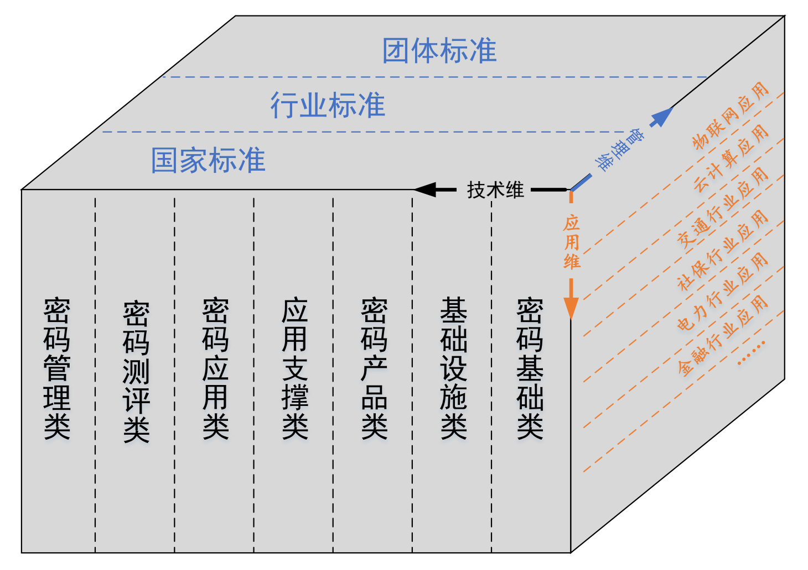
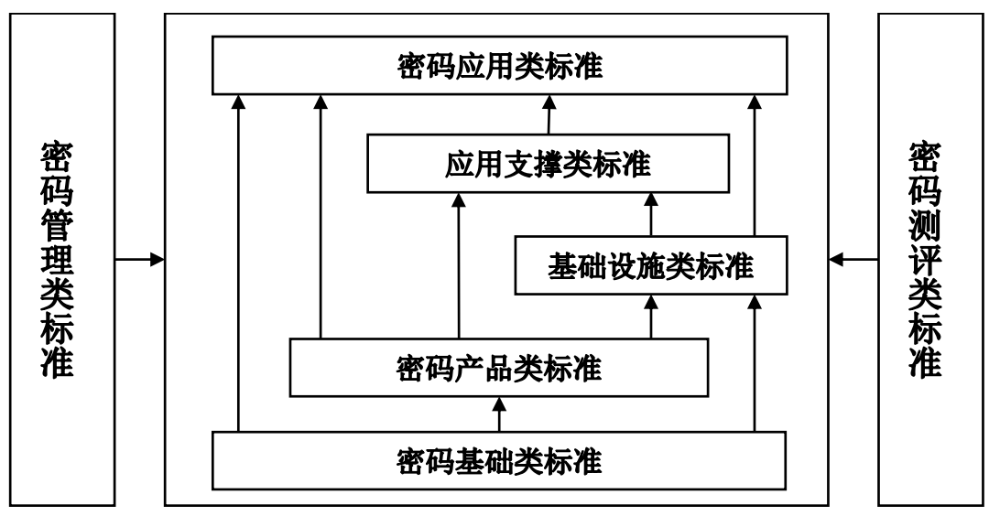
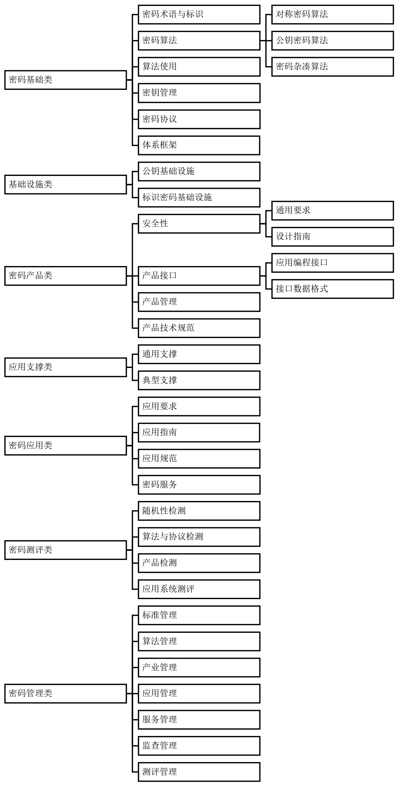
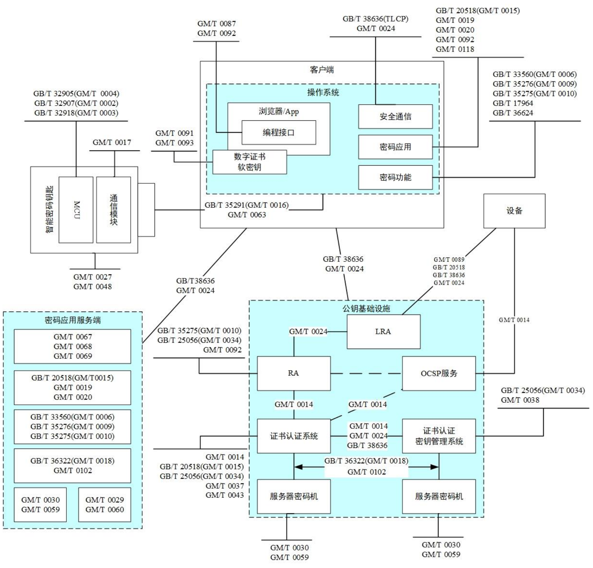

GM/Y 5001-2023 密码标准使用指南¶
一 密码标准体系框架¶

图 1 密码标准体系框架
密码标准体系框架从技术维、管理维和应用维三个维度对密码标准进行组织和刻画，如图1所示。
（一）技术维¶
技术维主要从标准所处技术层次的角度进行刻画，共有七大类，各类之间的依赖关系如图2所示。

图 2 技术维各大类关系
各大类下分若干子类，如图3所示。

图 3 密码标准技术层次结构
密码基础类标准主要对通用性、基础性密码技术进行规范，包括密码术语与标识、密码算法、算法使用、密钥管理、密码协议和体系框架六个子类，其中体系框架包含特定密码技术的体系框架规范，如公钥密码应用技术体系框架。
基础设施类标准主要对密码基础设施进行规范，包括公钥基础设施和标识密码基础设施两个子类。
密码产品类标准主要对密码产品进行规范，包括安全性、产品接口、产品管理和产品技术规范四个子类。安全性包括通用要求和设计指南，产品接口包括应用编程接口和接口数据格式。
应用支撑类标准对应用系统调用密码功能的，与具体设备无关的交互报文、交互流程、调用接口等方面进行规范，包括通用支撑和典型支撑两个子类。通用支撑类标准通过统一的接口为密码应用提供加解密、签名验签等通用密码功能，典型支撑类标准是基于密码技术实现的与应用无关的安全机制、安全协议和服务接口。
密码应用类标准对使用密码技术实现某种安全功能的应用系统提出要求以及规范，包括应用要求、应用指南、应用规范和密码服务四个子类。应用要求规范各行业应用系统对密码技术的使用；应用指南指导各行业信息系统中密码子系统的设计符合密码应用要求；应用规范给出了具体的密码应用技术标准，也包括其它行业标准机构制定的跟行业密切相关的标准。密码服务则规范面向公众或特定领域的各类密码服务技术要求或指南。
密码测评类标准是密码标准体系中的密码基础、基础设施、密码产品和密码应用等标准对应的检测标准，如随机数、安全协议、密码产品功能和安全性、信息系统密码应用安全性等方面的检测规范。
密码管理类标准包括国家密码管理部门行使管理职能所依据的相关标准，包括标准管理、算法管理、产业管理、应用管理、服务管理、监查管理、测评管理七个子类。
（二）管理维¶
2018年生效的新版《中华人民共和国标准化法》对国家标准、行业标准、团体标准等不同管理级别上的标准做了更为清晰的界定。当前已经颁布的密码标准涉及国家标准和行业标准，在密码标准体系框架中引入管理维，以表达密码标准在管理层级和作用范围上的不同。
《中华人民共和国标准化法》第十一条规定“对满足基础通用、与强制性国家标准配套、对各有关行业起引领作用等需要的技术要求，可以制定推荐性国家标准”，第十二条规定“对没有推荐性国家标准、需要在全国某个行业范围内统一的技术要求，可以制定行业标准”，第十八条规定“国家鼓励学会、协会、商会、联合会、产业技术联盟等社会团体协调相关市场主体共同制定满足市场和创新需要的团体标准，由本团体成员约定采用或者按照本团体的规定供社会自愿采用”。据此，密码标准体系中对国家、行业、团体标准的界定原则如下：
-
如果具体标准的使用者/遵循者广泛分布于全社会各行业、各领域，则适宜作为密码国家标准；
-
如果具体标准的使用者/遵循者主要限于密码行业内，则适宜作为密码行业标准。
-
如果具体标准的使用者/遵循者主要限于密码学会、密码协会等社会团体内部，则适宜作为密码团体标准。在潜在使用者/遵循者范围更广，但制定国家标准、行业标准时机尚不成熟时，密码团体标准也可作为先验性标准，在团体内部首先制定并探索使用，为国标、行标的制定积累实践经验。
（三）应用维¶
应用维从密码应用领域的视角来刻画密码标准体系。“应用领域”既包括与社会行业相关的应用，如金融、电力、交通等；也包括与具体行业无关的应用领域，如物联网、云计算等。
如果以应用维上每个刻度为索引，则可以做出特定应用领域的密码标准体系切片，从而形成各应用领域的密码标准体系。从这个意义上理解，某具体应用领域不需要再设计自身独立的密码标准体系，只需引用本密码标准体系，并在其中纳入适用该应用领域的不同技术类别的国标、行标或团标即可。而所有应用领域密码标准体系的并集，即为全局性的密码标准体系。
本文后续章节将以密码标准技术层次结构为基础，将已经发布的密码国家标准和密码行业标准按照该层次结构归入到相应章节，并对其逐一展开描述。
二 密码基础类标准¶
(一) 密码术语与标识¶
1. GM/Z 4001 密码术语¶
（1） 版本
GM/Z 4001-2013《密码术语》是当前的最新版本。
（2） 用途与适用范围
该标准对基本或通用的密码术语和定义进行了规范，以达到密码标准簇在术语方面的一致性。
该标准适用于统一信息安全技术领域中对密码基本概念的理解，规范技术交流和研究的表达。
（3） 内容概要
该标准共4章：
第1章范围，第2章术语，第3和第4章分别列出了中文和英文索引。
（4） 应用说明
- 扩展应用领域
非密码技术领域在使用到相关密码术语时可参照该标准。
2. GB/T 33560 信息安全技术 密码应用标识规范¶
（1） 版本
GB/T 33560-2017《信息安全技术 密码应用标识规范》系该标准国家标准最新版本。
该标准对应的密码行业标准是GM/T 0006《密码应用标识规范》，最后版本为GM/T 0006-2012。
（2） 用途与适用范围
该标准定义了密码应用中所使用的标识，用于规范算法标识、密钥标识、设备标识、数据标识、协议标识、角色标识等的表示和使用。
该标准适用于指导密码设备、密码系统的研制和使用过程中，对标识进行规范化的使用，也可用于指导其他相关标准或协议的编制中对标识的使用。
（3） 内容概要
该标准共6章：
第1章范围、第2章术语和定义、第3章符号和缩略语。
第4章定义了标识的格式和编码。
第5章定义了密码标识，包括密码算法标识、数据标识和协议标识。其中，密码算法标识包括分组算法、公钥算法、杂凑算法以及签名算法的标识；数据标识定义了使用的数据类型、数据常量，并定义了通用的数据对象以及证书解析项的标识；协议标识定义了各类密码接口的标识和证书验证模式的标识。
第6章定义了安全管理类标识，包括角色管理标识、密钥管理标识、系统管理标识以及设备管理标识。
附录A是规范性附录，给出了商用密码领域中的相关OID 定义。
（4） 应用说明
该标准为基础性标准，其他标准涉及到密码标识的时候均应遵循该标准。如果其他标准中有新增标识需求，应在该标准中扩展。
(二) 密码算法¶
1. 对称密码算法¶
（1） GB/T 33133 信息安全技术 祖冲之序列密码算法¶
a) 版本
GB/T 33133.1-2016《信息安全技术 祖冲之序列密码算法 第1部分:算法描述》系该标准第1部分，是国家标准最新版本。
GB/T 33133.2-2021《信息安全技术 祖冲之序列密码算法 第2部分:保密性算法》系该标准第2部分，是国家标准最新版本。
GB/T 33133.3-2021《信息安全技术 祖冲之序列密码算法 第3部分:完整性算法》系该标准第3部分，是国家标准最新版本。
该标准对应的密码行业标准是GM/T 0001《祖冲之序列密码算法》，共分为三个部分：
-
GM/T 0001.1-2012《祖冲之序列密码算法 第1部分:算法描述》是第1部分的最后版本；
-
GM/T 0001.2-2012《祖冲之序列密码算法 第2部分:基于祖冲之算法的机密性算法》是第2部分的最新版本；
-
GM/T 0001.3-2012《祖冲之序列密码算法 第3部分:基于祖冲之算法的完整性算法》是第3部分的最新版本。
祖冲之序列密码算法已经纳入ISO/IEC国际标准: ISO/IEC 18033-4:2011/Amd 1:2020《Information technology-Security techniques-Encryption algorithms-Part 4:Stream ciphers-Amendment 1:ZUC》。
b) 用途与适用范围
该标准描述了祖冲之序列密码算法（ZUC）、以及基于祖冲之序列密码算法的机密性算法和完整性算法，适用于采用祖冲之序列密码算法的相关产品的研制、检测和使用。祖冲之序列密码算法的初始设计是为移动通信服务，但它也同样适用于其它采用128比特密钥的机密性和完整性保护的场合。
c) 内容概要
该标准共3个部分。其中，第1部分描述了祖冲之序列密码算法的基本原理，第2部分定义了使用祖冲之序列密码算法加密明文消息流的方法，第3部分定义了使用祖冲之序列密码算法计算消息流MAC值的方法。
该标准第1部分共5章：
前4章是标准的通用要素，分别为：范围、规范性引用文件、术语和定义、符号和缩略语。
第5章依次描述了祖冲之序列密码的算法结构、线性反馈移位寄存器LFSR、比特重组BR、非线性函数\(F\)、密钥装入和算法运行。其中，算法运行包括初始化步骤和工作步骤。
该部分附录A是规范性附录，描述了S盒。
该部分附录B是资料性附录，介绍了模\(2^{31}-1\)乘法和模\(2^{31}-1\)加法的实现方法。
该部分附录C是资料性附录，给出了算法计算实例。
该标准第2部分共5章：
前4章是标准的通用要素，分别为：范围、规范性引用文件、术语和定义、符号和缩略语。
第5章描述了机密性算法的输入参数、输出参数和工作流程。其中工作流程分为两步，分别是产生密钥流和加解密。
该部分附录A是资料性附录，描述了3GPP LTE中的参数初始化。
该部分附录B是资料性附录，描述了3GPP LTE中算法计算实例。
该标准第3部分共5章：
前4章是标准的通用要素，分别为：范围、规范性引用文件、术语和定义、符号和缩略语。
第5章描述了完整性算法的输入参数、输出参数和工作流程。其中工作流程分为两步，分别是产生密钥流和计算MAC。
该部分附录A是资料性附录，描述了3GPP LTE中的参数初始化。
该部分附录B是资料性附录，描述了3GPP LTE中算法计算实例。
d) 应用说明
- 使用注意事项
使用祖冲之序列密码算法进行机密性和完整性保护，应事先共享密钥\(\mathrm{CK}\)或\(\mathrm{IK}\)，同时注意\(\mathrm{CK}\)、\(\mathrm{IK}\)及初始向量\(\mathrm{IV}\)等参数的更新。在不同的加解密和生成MAC的过程中，应避免重复使用（\(\mathrm{CK}\)、\(\mathrm{IV}\)）对或（\(\mathrm{IK}\)、\(\mathrm{IV}\)）对。
该标准适用于祖冲之序列密码算法的工程实现和理论研究。在密码算法的实现及使用过程中，应参照该标准第一部分附录C的测试向量保证祖冲之序列密码算法实现及使用的正确性。在非移动通信场景中，可根据实际情况定义\(\mathrm{IV}\)，并事先约定。
该标准可能涉及专利，请仔细阅读引言部分的内容。
（2） GB/T 32907 信息安全技术 SM4分组密码算法¶
a) 版本
GB/T 32907-2016《信息安全技术 SM4分组密码算法》系该标准国家标准最新版本。该标准对应的密码行业标准是GM/T 0002《SM4分组密码算法》，最后版本为GM/T 0002-2012。
b) 用途与适用范围
该标准描述了SM4分组密码算法，是一种密钥长度128比特，分组长度也是128比特的密码算法。
该标准适用于使用分组密码算法进行数据保护的场合，实现对明文数据的加密保护，以及以CBC-MAC等方式实现的完整性保护。
c) 内容概要
该标准共7章：
第1章范围、第2章术语和定义、第3章符号和缩略语。
第4章定义了SM4算法的结构，使用SM4的加密和解密计算在结构上完全相同，只是轮密钥的次序相反。
第5章描述了SM4的128比特密钥和32个32比特轮密钥，以及算法中用到的\(\mathrm{FK}\)和\(\mathrm{CK}\)两个算法参量。
第6章描述了每一轮运算的轮函数\(F\)。
第7章详细描述了算法的实现，包括加密算法，解密算法以及密钥扩展算法。
附录A是资料性附录，给出了运算示例。
d) 应用说明
- 直接相关标准
GB/T 17964-2021《信息安全技术 分组密码算法的工作模式》
- 使用注意事项
该标准在实施过程中需严格按照SM4分组密码算法的描述进行实现，测试结果符合标准中的运算示例，以保证算法实现的正确性。同时，分组密码只能处理一个分组长度的数据，无法处理任意长度的数据，因此在实际应用中应根据安全需求选择合适的分组密码工作模式和填充方法，以实现相应的安全功能。
当该算法用于保护数据的机密性时，应选取合适的工作模式，例如CBC、CFB、OFB、CTR、BC、OFBNLF等工作模式，见GB/T 17964-2008 ；当该算法用于鉴别数据的完整性时，应选取合适的工作模式，例如CBC-MAC系列的工作模式，见GB/T 15852.1-2008；当该算法用于同时保护数据的机密性和完整性时，应选取合适的可鉴别加密工作模式，例如OCB、CCM、Key Wrap、EAX、GCM等工作模式，见GB/T 36624-2018。
2. 公钥密码算法¶
公钥密码算法又称非对称密码算法，既可用于加密和解密，也可以用于数字签名。公钥密码算法包括公钥加密和私钥签名（数字签名）两种主要用途。我国已颁布两种公钥密码算法标准，分别是SM2椭圆曲线公钥密码算法和SM9标识密码算法。SM2椭圆曲线公钥密码算法包含数字签名算法、密钥交换协议和公钥加密算法；SM9标识密码算法包含数字签名算法、密钥交换协议、密钥封装机制和加密算法。其中，基于SM2算法的数字签名技术已在我国电子认证领域广泛应用；SM9算法以用户标识（如邮件地址、手机号码等）为公钥，应用系统使用公钥进行数据加密或身份认证较为方便。
（1） GB/T 32918 信息安全技术 SM2椭圆曲线公钥密码算法¶
a) 版本
GB/T 32918《信息安全技术 SM2椭圆曲线公钥密码算法》共分为五个部分：
-
GB/T 32918.1-2016《信息安全技术 SM2椭圆曲线公钥密码算法 第1部分:总则》；
-
GB/T 32918.2-2016《信息安全技术 SM2椭圆曲线公钥密码算法 第2部分:数字签名算法》；
-
GB/T 32918.3-2016《信息安全技术 SM2椭圆曲线公钥密码算法 第3部分:密钥交换协议》；
-
GB/T 32918.4-2016《信息安全技术 SM2椭圆曲线公钥密码算法 第4部分:公钥加密算法》；
-
GB/T 32918.5-2017《信息安全技术 SM2椭圆曲线公钥密码算法 第5部分:参数定义》。
该标准对应的密码行业标准是GM/T 0003《SM2椭圆曲线公钥密码算法》，最后版本为GM/T 0003-2012。
SM2算法已经纳入ISO/IEC国际标准：ISO/IEC 14888-3:2018《IT Security techniques - Digital signatures with appendix- Part 3:Discrete logarithm based mechanisms》。
b) 用途与适用范围
该标准适用于SM2椭圆曲线公钥密码算法相关技术研究、系统和产品的研制及算法正确性验证。
c) 内容概要
该标准共5个部分：
第1部分描述了SM2算法的数学原理，包括椭圆曲线及椭圆曲线上有限域的概念、椭圆曲线涉及的参数、数据类型及其转换等。
第2部分描述了使用SM2算法进行数字签名和验签的方法，并给出了一个签名验签的示例。
第3部分描述了使用SM2算法进行密钥交换的协议和流程，并给出了一个密钥交换的示例。
第4部分描述了使用SM2算法进行公钥加密和解密的方法，并给出了一个公钥加解密运算的示例。
第5部分描述了SM2算法的椭圆曲线参数，并给出了基于此参数进行数字签名验签、密钥协商以及公钥加解密的示例。
d) 应用说明
- 直接相关标准
GB/T 35275-2017《信息安全技术 SM2密码算法加密签名消息语法规范》
GB/T 35276-2017《信息安全技术 SM2密码算法使用规范》
- 使用注意事项
在实施过程中需要重点确保密钥安全性和随机数的安全性，不安全的存储方式直接威胁密码算法的安全性；弱随机数将威胁密码算法甚至密钥的安全性；同时需要注意严格执行检查条件，否则可能导致安全漏洞。
（2） GB/T 38635 信息安全技术 SM9标识密码算法¶
a) 版本
GB/T 38635-2020 《信息安全技术 SM9标识密码算法》共分两部分：
-
GB/T 38635.1-2020《信息安全技术 SM9标识密码算法 第1部分:总则》；
-
GB/T 38635.2-2020《信息安全技术 SM9标识密码算法 第2部分:算法》。
该标准对应的密码行业标准是GM/T 0044《SM9标识密码算法》，最后版本为GM/T 0044-2016。
SM9算法已经纳入ISO/IEC国际标准：
ISO/IEC 14888-3:2018 IT Security techniques Digital signatures with appendix Part 3: Discrete logarithm based mechanisms；
ISO/IEC 18033-5:2015/ADM1:2021 Information technology —Security techniques — Encryption algorithms — Part 5:Identity - based ciphers — Amendment 1: SM9 mechanism；
ISO/IEC 11770-3:2021 Information security — Key management — Part 3: Mechanisms using asymmetric techniques。
b) 用途与适用范围
该标准描述了基于双线性对的SM9标识密码算法，可用于数字签名、数据加密、密钥协商等。
该标准适用于SM9标识密码算法相关技术研究、系统和设备研制，以及算法正确性验证。
c) 内容概要
该标准共2个部分：
第1部分描述了必要的数学基础知识与相关密码技术，以帮助了解和实现该标准其它各部分所规定的密码机制，包括有限域和椭圆曲线、双线性对及安全曲线、数据类型及其转换和系统参数及其验证。本部分还在规范性附录A中规定了SM9算法的参数，包括椭圆曲线方程及参数、生成元等，以及扩域元素的表示方法。
第2部分规定了SM9标识密码算法中的数字签名算法、密钥交换协议、密钥封装机制和加密算法。
d) 应用说明
- 直接相关标准
GB/T 41389-2022《信息安全技术 SM9密码算法使用规范》
GM/T 0081-2020《SM9密码算法加密签名消息语法规范》
GM/T 0086-2020 《基于SM9标识密码算法的密钥管理系统技术规范》
GM/T 0090-2020 《标识密码应用标识格式规范》
- 使用注意事项
GM/T 0044-2016包含5个部分，该标准与GM/T 0044-2016的关系为：GB/T 38635.1包括了GM/T 0044.1-2016和GM/T 0044.5-2016；GB/T 38635.2包括了GM/T 0044.2-2016、GM/T 0044.3-2016和GM/T 0044.4-2016。
由于SM9标识密码算法中签名和加密主密钥参与用户密钥的生成过程，在应用中应遵循GM/T 0086的密钥管理要求以确保其安全性。
该标准使用时需严格执行标准中的检查条件，避免产生缺漏导致对密码算法的攻击。
3. 密码杂凑算法¶
（1） GB/T 32905 信息安全技术 SM3密码杂凑算法¶
a) 版本
GB/T 32905-2016《信息安全技术 SM3密码杂凑算法》系该标准国家标准最新版本。
该标准对应的密码行业标准是GM/T 0004《SM3密码杂凑算法》，最后版本为GM/T 0004-2012。
SM3算法已经纳入ISO/IEC国际标准：ISO/IEC10118-3:2018《Information technology-Security Techniques- Hash-functions-Part 3:Dedicated hash-functions》。
b) 用途与适用范围
该标准可用于消息摘要的计算、数字签名和验证、消息鉴别码的生成与验证，以及随机数的生成。
该标准适用于SM3密码杂凑算法相关技术研究、系统和产品的研制及算法正确性验证。
c) 内容概要
该标准共5章：
第1章范围、第2章术语和定义、第3章符号。
第4章描述了SM3算法涉及的初始值\(\mathrm{IV}\)和常量\(\mathrm{Tj}\)的取值，以及用到的布尔函数和置换函数。
第5章描述了SM3的算法实现及过程，包括填充、迭代压缩和杂凑计算。
附录A是资料性附录，给出了SM3密码杂凑算法的运算示例。
d) 应用说明
- 直接相关标准
GB/T 15852.2-2012 《信息技术安全技术 消息鉴别码 第2部分：采用杂凑函数的机制》
- 使用注意事项
该标准实施时应对照给出的运算示例，保证算法实现及使用的正确性；当应用于构建消息鉴别码时，应保障其密钥的机密性。
（2） GB/T 18238 信息技术 安全技术 散列函数¶
a) 版本
该标准包含三个部分，为散列函数的系列标准，都是等同采用了ISO/IEC 10118系列标准的早期版本。该标准无对应的密码行业标准。
GB/T 18238.1-2000《信息技术 安全技术 散列函数 第1部分：概述》系该标准第1部分的国家标准最新版本，等同采用国际标准ISO/IEC 10118-1:1994，目前该国际标准最新版本为ISO/IEC 10118-1:2016和ISO/IEC 10118-1:2016/AMD1:2021。
GB/T 18238.2-2002《信息技术 安全技术 散列函数 第2部分：采用n位块密码的散列函数》系该标准第2部分的国家标准最新版本，等同采用国际标准ISO/IEC FDIS 10118-2:2000，目前该国际标准最新版本为ISO/IEC 10118-2:2010和ISO/IEC 10118-2:2010/COR1:2011。
GB/T 18238.3-2002《信息技术 安全技术 散列函数 第3部分：专用散列函数》系该标准第3部分的国家标准最新版本，等同采用国际标准ISO/IEC 10118-3:1998，目前该国际标准最新版本为ISO/IEC 10118-3:2018。
此外，ISO已发布10118系列的第4部分，最新版本为ISO/IEC 10118-4:1998（2016年重新审查和确认）、ISO/IEC 10118-4:1998/COR1:2014和ISO/IEC 10118-4:1998/AMD1:2014。
b) 应用说明
- 使用注意事项
该标准各部分的内容较为陈旧，采标的国际标准已经更新了多个版本。该标准第2部分的内容可用于指导采用分组密码算法迭代构造杂凑算法，第3部分规定的三种专用散列函数（RIPEMD-160、RIPEMD-128和SHA-1）已经被发现存在密码漏洞，具体可见王小云、Marc Stevens、王高丽等专家的分析文章。
2017年4月3日，国家密码管理局发布《关于使用SHA-1密码算法的风险提示》，指出继续使用SHA-1算法存在重大安全风险。相关单位应遵循密码国家标准和行业标准,全面支持和应用SM3等商用密码算法,严格按照《商用密码管理条例》等相关法律法规的要求开展商用密码研发、生产、销售、使用等活动。
(三) 算法使用¶
1. GB/T 17964 信息安全技术 分组密码算法的工作模式¶
（1） 版本
GB/T 17964-2021《信息安全技术 分组密码算法的工作模式》是当前的最新版本。该标准的历次版本发布情况为：2000年首次发布为GB/T 17964-2000；2008年第一次修订为GB/T 17964-2008。
该标准无对应的密码行业标准。
（2） 用途与适用范围
该标准描述了9种分组密码算法的工作模式，给出了参数和方法，适用于指导分组密码算法在加解密数据时的使用。该标准描述的工作模式仅适用于保护数据的机密性，不适用于保护数据的完整性，可与具有鉴别功能的GB/T 15852.1、GB/T 36624-2018等标准搭配使用。
（3） 内容概要
该标准共13章：
第1章范围，第2章规范性引用文件，第3章术语和定义，第4章符号和缩略语。
第5章至第13章分别描述了电码本工作模式（ECB）、密文分组链接工作模式（CBC）、密文反馈工作模式（CFB）、输出反馈工作模式（OFB）、计数器工作模式（CTR）、带密文挪用的XEX可调分组密码工作模式（XTS）、带泛杂凑函数的计数器工作模式（HCTR）、分组链接工作模式（BC）和带非线性函数的输出反馈工作模式（OFBNLF），包括变量定义、加密方式、解密方式以及必要的图示等。
附录A是资料性附录，描述了各个工作模式的性质，包括场景、性质、填充明文、差错扩散和同步。
附录B是资料性附录，给出了各个工作模式的测试向量，使用的分组密码是GB/T 32907-2016中规定的SM4算法。
附录C是资料性附录，给出了3个填充方法示例。
（4） 应用说明
- 直接相关标准
GB/T 32907-2016《信息安全技术 SM4分组密码算法》
GB/T 36624-2018《信息技术 安全技术 可鉴别的加密机制》
- 使用注意事项
本标准规定的9种工作模式，需要使用者事先约定密钥。在未更新密钥的情况下，为保障应用安全，使用者在每次加密消息前应选择新的初始向量\(\mathrm{IV}\)或调柄tweak，确保计数序列无重复无交叉。另外，XTS和HCTR两个工作模式采用了有限域乘法进行计算，变量最左侧为其最低位，使用者应严格对照测试向量保证实现结果的正确性。
本标准未规定GCM等可鉴别加密工作模式，此类模式参见GB/T 36624-2018《信息技术 安全技术 可鉴别的加密机制》。本标准规定的加密模式（除ECB模式外），可作为独立的模块直接应用于GB/T 36624-2018中可鉴别的加密机制4。
2. GB/T 31503 信息安全技术 电子文档加密与签名消息语法¶
（1） 版本
GB/T 31503-2015《信息安全技术 电子文档加密与签名消息语法》系该标准国家标准最新版本。
（2） 应用说明
- 使用注意事项
该标准主要参考IETF（互联网工程特别工作组）的RFC 5652文件制定。该标准规定了用于电子文档密码保护的封装语法,支持数字签名和加密。当前普遍采用GB/T 35275-2017替代该标准。
3. GB/T 35276 信息安全技术 SM2密码算法使用规范¶
（1） 版本
GB/T 35276-2017《信息安全技术SM2密码算法使用规范》系该标准国家标准最新版本。
该标准对应的密码行业标准是GM/T 0009《SM2密码算法使用规范》，最后版本为GM/T 0009-2012。
（2） 用途与适用范围
该标准规定了SM2密码算法的使用方法，密钥、加密与签名的数据格式，以及相关计算过程，此外还提供了用户身份标识的标准默认值。
（3） 内容概要
该标准共10章：
第1章范围、第2章规范性引用文件、第3章术语和定义、第4章符号和缩略语。
第5章描述了SM2算法的公钥和私钥的数据结构。
第6章数据转换，描述了数据在位串与字符串之间的转换方法和整数和字符串之间的转换方法。
第7章数据格式，定义了密钥数据格式、加密数据格式、签名数据格式和密钥对保护数据格式。
第8章预处理，描述了\(Z\)值计算过程和签名运算所需的杂凑计算过程。
第9章计算过程，描述了生成密钥、加密、解密、数字签名、签名验证和密钥协商的计算过程。
第10章用户身份标识，提供了用户身份标识的默认值。
（4） 应用说明
- 直接相关标准
GB/T 32918-2016《信息安全技术 SM2椭圆曲线公钥密码算法》
GB/T 35275-2017《信息安全技术 SM2密码算法加密签名消息语法规范》
- 使用注意事项
该标准规定了默认用户身份标识用于通用领域；在专用领域，可自行定义该系统需要的用户身份标识。
4. GB/T 35275 信息安全技术 SM2密码算法加密签名消息语法规范¶
（1） 版本
GB/T 35275-2017《信息安全技术SM2密码算法加密签名消息语法规范》系该标准国家标准最新版本。
该标准对应的密码行业标准是GM/T 0010《SM2密码算法加密签名消息语法规范》，最后版本为GM/T 0010-2012。
（2） 用途与适用范围
该标准定义了使用SM2密码算法的加密签名消息语法，适用于使用SM2密码算法进行加密和签名操作时对操作结果的标准化封装。
该标准适用于使用SM2密码算法进行加密和签名操作时对操作结果的标准化封装。
（3） 内容概要
该标准共13章：
第1章范围、第2章规范性引用文件、第3章术语和定义、第4章符号和缩略语。
第5章给出了语法中用到的OID的定义。
第6章给出了语法中用到的基本类型的定义。
第7章至第12章分别对数据类型、签名数据类型、数字信封数据类型、签名及数字信封数据类型、加密数据类型和密钥协商类型进行了详细定义。
第13章定义了SM2密钥格式。
（4） 应用说明
- 直接相关标准
GB/T 20518-2018《信息安全技术 公钥基础设施 数字证书格式》
GB/T 35276-2017《信息安全技术 SM2密码算法使用规范》
5. GB/T 41389 信息安全技术 SM9密码算法使用规范¶
（1） 版本
GB/T 41389-2022《信息安全技术 SM9密码算法使用规范》是当前的最新版本。
该标准对应的密码行业标准是GM/T 0080《SM9密码算法使用规范》，最后版本为GM/T 0080-2020。
（2） 用途与适用范围
本标准规定了SM9密码算法的使用要求，描述了密钥、加密与签名的数据格式，适用于SM9密码算法的正确和规范使用，以及指导SM9密码算法的设备和系统的研发和检测。
（3） 内容概要
该标准共7章：
第1章范围、第2章规范性引用文件、第3章术语和定义、第4章符号和缩略语。
第5章规定了生成元、SM9主私钥、SM9主公钥、SM9用户私钥、SM9用户公钥等数据结构。
第6章规定了生成元、密钥数据、签名数据、加密数据、密钥封装数据的数据格式；预处理杂凑函数\(\mathrm{H1}\)、预处理杂凑函数\(\mathrm{H2}\)、预处理对运算1、预处理对运算2、预处理用户验签公钥\(Q_{D}\)、预处理用户验签公钥\(Q_{E}\)等预处理；生成密钥、数字签名、签名验证、密钥封装、密钥解封装、加密、解密、密钥交换等计算过程。
第7章给出了数据格式、预处理、计算过程的证实方法。
附录A是规范性附录，给出了数据格式的编码测试用例。
（4） 应用说明
- 直接相关标准
GB/T 38635-2020《信息安全技术 SM9标识密码算法》
GM/T 0081-2020《SM9密码算法加密签名消息语法规范》
- 扩展应用领域
该标准适用于产品研发方、应用方和检测机构对SM9密码算法实现、应用和检测，为包含SM9密码算法的产品开发、使用及检测提供基础。在SM9密码算法实际应用中，通过该标准能够完成该算法的工程化实现，可应用于设备管理、电子邮件、物联网、移动通信等领域。
- 使用注意事项
该标准在实现过程中需注意，该标准的数据结构定义是以ASN.1抽象语法为描述方法，在实施过程中应与GB/T 38635-2020配套使用，其中相关数据格式转换部分该标准中未定义，需参见GB/T 35276-2017。
6. GM/T 0081 SM9密码算法加密签名消息语法规范¶
（1） 版本
GM/T 0081-2020《SM9密码算法加密签名消息语法规范》是当前的最新版本。
（2） 用途与适用范围
该标准定义了使用SM9密码算法的加密签名消息语法。该标准适用于使用SM9算法进行加密和签名操作时对操作结果的标准化封装。
（3） 内容概要
该标准共12章：
第1章范围、第2章规范性引用文件、第3章术语和定义、第4章符号和缩略语。
第5章给出了语法中用到的OID的定义。
第6章给出了语法中用到的基本类型的定义。
第7章至第12章分别对数据类型、签名数据类型、数字信封数据类型、签名及数字信封数据类型、加密数据类型和密钥协商类型进行了详细定义。
附录A是规范性附录，定义了IRL标识吊销列表结构。
（4） 应用说明
- 直接相关标准
GM/T 0080-2020《SM9密码算法使用规范》
7. GM/T 0125 JSON Web 密码应用语法规范¶
（1） 版本
GM/T 0125-2022《JSON Web 密码应用语法规范》包含4个部分：
-
GM/T 0125.1-2022《JSON Web密码应用语法规范 第1部分:算法标识》是第1部分的最新版本；
-
GM/T 0125.2-2022《JSON Web密码应用语法规范 第2部分:数字签名》是第2部分的最新版本；
-
GM/T 0125.3-2022《JSON Web密码应用语法规范 第3部分:数据加密》是第3部分的最新版本；
-
GM/T 0125.4-2022《JSON Web密码应用语法规范 第2部分:密钥》是第4部分的最新版本。
（2） 用途与适用范围
该标准第1部分定义了JSON Web密码应用的算法标识。
该标准第2部分描述了基于JSON数据结构来保护消息内容的数字签名或消息鉴别码的语法规范，并给出了相应的生成和验证流程。
该标准第3部分描述了使用身份鉴别和加密来确保明文的机密性和完整性的技术要求。
该标准第4部分定义了密钥的JSON数据结构表示方法。
该标准适用于JSON Web密码应用产品的研发与检测，其他使用JSON数据交换格式的安全产品，可参考使用。
（3） 内容概要
该标准共4个部分，定义了JSON Web密码应用的算法标识和密钥的JSON数据结构表示方法，描述了基于JSON数据结构来保护消息内容的数字签名或消息鉴别码的语法规范、使用身份鉴别和加密来确保明文的机密性和完整性的技术要求，并给出了相应的生成和验证流程。
该标准第1部分共9章：
第1章范围、第2章规范性引用文件、第3章术语和定义、第4章缩略语。
第5章定义了数字签名算法、消息鉴别算法和内容加密算法的标识命名规则。
第6章定义了数字签名算法、消息鉴别算法和内容加密算法的标识命名规则。
第7章定义了消息鉴别算法标识。
第8章定义了消息鉴别算法的标识。
第9章定义了密钥加密密钥算法标识。
该标准第2部分共12章：
第1章范围、第2章规范性引用文件、第3章术语和定义、第4章缩略语、第5章符号。
第6章描述了JSON Web 数字签名(JWS)，定义了JSON头部参数的要求。
第7章描述了SM2数字签名算法的相关要求。
第8章描述了基于SM3算法的消息鉴别算法的相关要求。
第9章描述了JWS数字签名和消息鉴别码的生成和验证流程。
第10章定义了字符串比较规则。
第11章规定了密钥身份标识的要求。
第12章描述了紧凑序列化和JSON序列化。
该部分附录A为资料性附录，给出了JWS示例。
该标准第3部分共12章：
第1章范围、第2章规范性引用文件、第3章术语和定义、第4章缩略语、第5章符号。
第6章描述了JSON Web 加密（JWE），定义了JOSE头部参数的要求。
第7章规定了SM2公钥加密和SM9加密两种密钥加密密钥算法的实现要求。
第8章定义了内容加密算法使用指定可鉴别的加密机制算法的实现要求。
第9章描述了JWE的加密和解密过程。
第10章定义了字符串比较规则。
第11章规定了密钥身份标识的要求。
第12章描述了紧凑序列化和JSON序列化。
该部分附录A为资料性附录，给出了JWE示例。
该标准第4部分共7章：
第1章范围、第2章规范性引用文件、第3章术语和定义、第4章缩略语。
第5章定义了通用参数及与密钥类型相关的参数。
第6章定义了JSON Web密钥（JWK）集合格式。
第7章定义了字符串比较规则。
该部分附录A为资料性附录，给出了JWK示例。
（4） 应用说明
- 直接相关标准
GB/T 32905《信息安全技术 SM3密码杂凑算法》
GB/T 32918（所有部分）《信息安全技术 SM2椭圆曲线公钥密码算法》
GB/T 35276《信息安全技术 SM2密码算法使用规范》
GB/T 32907《信息安全技术 SM4分组密码算法》
GB/T 36624《信息技术 安全技术 可鉴别的加密机制》
GB/T 38635（所有部分）《信息安全技术 SM9标识密码算法》
GB/T 41389《信息安全技术 SM9密码算法使用规范》
- 使用注意事项
本标准第2部分消息鉴别算法的计算过程和结果应符合GB/T 15852.2，本标准内容加密算法的参数应遵循本标准第3部分8.3的要求。
(四) 密钥管理¶
1. GB/T 17901 信息技术 安全技术 密钥管理¶
（1） 版本
GB/T 17901《信息技术 安全技术 密钥管理》目前包含2个部分：
-
GB/T 17901.1-2020《信息技术 安全技术 密钥管理 第1部分:框架》是第1部分的最新版本。
-
GB/T 17901.3-2021《信息技术 安全技术 密钥管理 第3部分:采用非对称技术的机制》是第3部分的最新版本。
（2） 用途与适用范围
该标准第1部分包含以下内容：a)建立密钥管理机制的通用模型；b)定义对GB/T 17901所有部分通用的密钥管理的基本概念；c)定义密钥管理服务的特征；d)规定对密钥在其生存周期内进行管理的通用原则；e)建立通信密钥分发的概念模型。该部分适用于建立密钥管理模型和设计密钥管理方法。
该标准第3部分定义了基于非对称密码技术的密钥管理机制的要求、密钥派生函数、余子式乘法、密钥承诺、密钥确认、密钥管理框架、系列密钥协商机制、系列密钥传递机制、系列公钥传递机制。该部分适用于采用非对称技术实现密钥管理的系统的研制，也可指导该类系统的检测。
（3） 内容概要
该标准共两个部分，描述了建立密钥管理机制的通用模型，密钥管理机制的基本概念、通用原则，以及基于非对称密码技术的密钥管理机制的要求和一系列机制。
该标准第1部分共8章：
第1章范围、第2章规范性引用文件、第3章术语和定义、第4章符号和缩略语。
第5章描述了密钥管理的一般模型，包括密钥管理的目标、密钥的保护方法以及密钥生存周期的一般模型。
第6章描述了密钥管理的基本内容，包括密钥生成、注册、认证、注销、分发、安装、存储、归档、撤销、派生以及销毁等环节的管理和使用，以及密钥管理的支持性服务。
第7章描述了两实体间密钥分发的概念模型，包括密钥分发概述、通信实体间密钥分发模型、单域密钥分发模型、域间的密钥分发模型。
第8章描述了密钥管理系统所需的特定服务的提供者，包括密钥分发中心、密钥交换中心等。
该部分附录A是资料性附录，给出了密钥管理面临的安全威胁。
该部分附录B是资料性附录，给出了密码应用分类。
该部分附录C是资料性附录，给出了密钥管理信息对象。
该标准第3部分共13章：
第1章范围、第2章规范性引用文件、第3章术语和定义、第4章符号和缩略语。
第5章给出了该标准所规范的密钥管理机制的通用要求。
第6章给出了密钥派生函数的用法和基本要求。
第7章给出了余子式乘法的概念、选择方法和适用情况。
第8章给出了密钥承诺的所能解决的问题以及密钥承诺的用法。
第9章给出了显式密钥确认和隐式密钥确认的定义，以及使用MAC提供密钥确认的步骤。
第10章定义了双方密钥协商，三方密钥协商，私钥传送以及公钥传送机制的框架以及相应的使用要求。
第11章给出了系列密钥协商机制。
第12章给出了系列密钥传递机制。
第13章给出了系列公钥传递机制。
该部分附录A是规范性附录，给出了该标准所定义的密钥管理机制的对象标识符。
该部分附录B是资料性附录，给出了密钥建立机制的特性。
该部分附录C是资料性附录，给出了密钥派生函数实例。
该部分附录D是资料性附录，给出了该标准中所使用的函数F、集合\(\mathrm{S1}\)和\(\mathrm{S2}\)的实例。
该部分附录E是资料性附录，给出了基于椭圆曲线的密钥建立机制实例。
该部分附录F是资料性附录，给出了所采标国际标准涉及的专利信息。
（4） 应用说明
该标准实施时应区分单域密钥分发模型中的密钥交换中心分发模型和密钥分发中心分发模型的区别，保证所采用机制与目标应用场景的一致性，并在实施相应的密钥管理机制时保证与附录中所给出的实例的一致性。
GB/T 17901系列国家标准采用了ISO/IEC 11770《信息技术 安全技术 密钥管理》系列国际标准。目前，ISO/IEC 11770系列国际标准共包括8个部分，GB/T 17901.1采用ISO/IEC 11770-1，GB/T 17901.3采用ISO/IEC 11770-3，GB/T 17901其他部分的制定工作正在展开，将会逐步完成采标工作。
2. GM/T 0091 基于口令的密钥派生技术规范¶
（1） 版本
GM/T 0091-2020《基于口令的密钥派生规范》是当前的最新版本。
（2） 用途与适用范围
该标准为基于口令的密钥派生提供技术规范，包括基于口令的密钥派生函数、基于口令的加密方案、基于口令的消息鉴别码，为利用口令派生密钥来保护迁移密钥的实现方和检测方提供依据和指导。
该标准适用于证书与密钥迁移时利用口令来保护被迁移的密钥。
（3） 内容概要
该标准共8章：
第1章范围，第2章规范性引用文件，第 3 章术语和定义，第4章符号和缩略语。
第5 章描述了与口令派生相关的对象标识符OID。
第6 章描述了基于口令的密钥派生函数的具体流程。
第7章描述了利用基于口令派生出密钥后如何进行加密和解密的具体方案。
第8章描述了基于口令的消息鉴别码生成和验证的方案。
附录A是资料性附录，给出了盐值和迭代次数、伪随机函数、基础加密方案和基础消息鉴别方案及实例。
附录B是规范性附录，给出了PBKDF、PBES、PBMAC的ASN.1结构定义。
附录C是规范性附录，罗列了该标准中用到的ASN.1结构。
（4） 应用说明
- 直接使用标准
GB/T 15852.2-2012《信息技术 安全技术 消息鉴别码 第2部分:采用专用杂凑函数的机制》
GB/T 32905-2016《信息安全技术 SM3密码杂凑算法》
GB/T 32907-2016《信息安全技术 SM4分组密码算法》
GB/T 33560-2017《信息安全技术 密码应用标识规范》
- 使用注意事项
该标准所定义的基于口令派生的密钥，其熵的大小是该标准方案安全性的关键所在。在使用该标准时，需要及时关注攻击者计算能力的变化，相应调整口令、盐值长度与迭代次数。
(五) 密码协议¶
1. GB/T 38636 信息安全技术 传输层密码协议（TLCP）¶
（1） 版本
GB/T 38636-2020《信息安全技术 传输层密码协议(TLCP)》系该标准国家标准最新版本。该标准基于GM/T 0024-2014《SSL VPN技术规范》第5章和第6章中的网关到网关的协议进行了修改，增加了算法套件。
（2） 用途与适用范围
该标准规定了传输层密码协议，包括记录层协议、握手协议族和密钥计算。
该标准适用于传输层密码协议相关产品（如SSL VPN网关、浏览器等）的研制，也可用于指导传输层密码协议相关产品的检测、管理和使用。
（3） 内容概要
该标准共6章：
第1章范围，第2章规范性引用文件，第3章术语和定义，第4章符号和缩略语。
第5章描述了规范中使用的密码算法和密钥种类。
第6章描述了传输层密码协议的详细流程，包括记录层协议和握手协议。
附录A为规范性附录，介绍了一种GCM可鉴别加密模式。
（4） 应用说明
- 直接相关标准
GM/T 0024-2014《SSL VPN技术规范》
GM/T 0025-2014《SSL VPN网关产品规范》
2. GM/T 0110 密钥管理互操作协议规范¶
（1） 版本
GM/T 0110-2021《密钥管理互操作协议规范》是当前的最新版本。
（2） 用途与适用范围
该标准旨在为密钥客户端和密钥管理服务端之间通信制定统一的密钥管理协议，通过该协议完成密钥管理服务端中对象的生成、存储和状态转换等操作。通过该密钥管理协议，解决需要使用密钥的应用系统与生成和管理这些密钥的密钥管理系统之间的通信标准化问题。
该标准适用于指导采用密钥管理协议的密钥管理系统的开发、使用及检测，有利于提高密钥管理系统的产品化和规范化。
（3） 内容概要
该标准共7章：
第1章范围，第2章规范性引用文件，第3章术语和定义，第4章缩略语。
第6章描述了密钥客户端和密钥管理服务端之间通信协议模型；定义了协议中用到的基础对象类型和以密钥、证书等为主体的被管理的对象类型，以及关联的对象属性、状态；定义了密钥客户端和密钥管理服务端之间可执行的相互操作、消息元素等。
第7章对密钥客户端和密钥管理服务端之间通信及密钥管理服务端对密钥的管理过程提出相应的安全要求。
附录A是资料性附录，描述了密钥管理互操作协议的应用场景和应用示例。
附录B是规范性附录，对TTLV编码规则进行了描述，并提供TTLV编码示例。
附录C是规范性附录，详细说明客户端和密钥管理服务端操作过程中具体错误定义及错误原因。
附录D是资料性附录，描述了客户端和密钥管理服务端的支持能力说明。
（4） 应用说明
- 直接相关标准
GB/T 35276-2017 《信息安全技术 SM2密码算法使用规范》
GM/T 0024-2014 《SSL VPN技术规范》
- 使用注意事项
该标准是为密码应用系统（密钥客户端）和密钥管理系统（密钥管理服务端）之间通信制定统一的密钥管理协议。通过该密钥管理协议，解决需要使用密钥的应用系统与生成和管理这些密钥的密钥管理系统之间的通信标准化问题。
该标准不涉及密钥管理服务端的内部逻辑结构和安全性设计，也不涉及密钥客户端的业务逻辑，标准使用者需要自行设计这些内容。
(六) 体系框架¶
1. GM/T 0094 公钥密码应用技术体系框架规范¶
（1） 版本
GM/T 0094-2020《公钥密码应用框架规范》是当前的最新版本。
（2） 用途与适用范围
该标准规定了公钥密码应用技术体系框架，给出该框架内各组成部分及其逻辑关系。
该标准适用于公钥密码应用技术体系的建设及相关标准的制修订，并指导应用系统的密码应用。
（3） 内容概要
该标准共4章：
第 1 章范围，第 2 章规范性引用文件，第 3 章术语和定义。
第4章详细规定了公钥密码应用技术体系框架，给出该框架内各组成部分及其逻辑关系。
附录A为规范性附录，定义了公钥密码应用技术体系框架中涉及到的接口命名。
附录B为规范性附录，给出了公钥密码应用技术体系框架中涉及到的错误代码区间划分。
附录C为资料性附录，列出了公钥密码应用技术体系框架中涉及到的密码行业标准已推荐为国家标准的清单。
三 基础设施类标准¶
(一) 公钥基础设施¶
1. GM/T 0014 数字证书认证系统密码协议规范¶
（1） 版本
GM/T 0014-2012《数字证书认证系统密码协议规范》是当前的最新版本。
（2） 用途与适用范围
该标准规定了数字证书认证系统中各部分的关系、安全协议流程和数据格式定义等内容，以保障数字证书认证系统在使用、运行中的真实性、机密性、完整性，实现可认证和不可否认等安全需求。
该标准适用于电子政务、电子商务中数字证书认证系统的设计、研发、建设、检测和运营。
（3） 内容概要
该标准共6章：
第1章范围，第2章规范性引用文件，第3章术语和定义，第4章缩略语。
第5章规定了数字证书认证系统中涉及到密码技术的相关安全协议，给出了具体流程和数据参数定义。主要包括：用户端同RA之间的安全协议；RA同CA之间的安全协议；CA同KM之间的安全协议；CA同LDAP服务之间的安全协议；CA同OCSP服务之间的安全协议；用户同LDAP服务之间的安全协议；用户同OCSP服务之间的安全协议。
第6章描述了第5章定义协议中涉及到的加密数据、摘要数据、数字签名、数字信封的报文语法。
附录A是规范性附录，给出了证书模板格式、CRL格式、加密值、消息状态码和故障信息、证书识别、带外根CA公钥、存档选项、发布信息的语法说明。
附录B和附录C是资料性附录，分别给出了RA与CA间相关协议和协议报文的实例。
附录D是规范性附录，给出了非实时发布证书协议的流程。
（4） 应用说明
- 直接相关标准
GB/T 19713-2005《信息技术 安全技术 公钥基础设施在线证书状态协议》
GB/T 25056-2018《信息安全技术 证书认证系统密码及其相关安全技术规范》
GB/T 35275-2017《信息安全技术 SM2密码算法加密签名消息语法规范》
2. GB/T 20518 信息安全技术 公钥基础设施 数字证书格式¶
（1） 版本
GB/T 20518-2018《信息安全技术 公钥基础设施 数字证书格式》系该标准国家标准最新版本。
该标准对应的密码行业标准是GM/T 0015《基于SM2密码算法的数字证书格式规范》，最后版本为GM/T 0015-2012。
（2） 用途与适用范围
该标准是GB/T 20518-2006标准的替代，增加了与SM2、SM3密码算法相关的部分，并且撤销了不安全的密码算法支持。
该标准规定了数字证书和证书撤销列表的具体结构定义，并对数字证书和证书撤销列表中的各数据项内容进行了详细描述。
该标准适用于数字证书认证系统相关产品的研发和基于数字证书的各种应用。
（3） 内容概要
该标准共6章：
第1章范围，第2章规范性引用文件，第3章术语和定义，第4章缩略语。
第5章定义了基于ASN.1编码的SM2密码算法数字证书详细格式和证书吊销列表CRL的详细格式。
第6章明确了应优先使用国家标准的密码算法。
附录A是规范性附录，给出了证书结构的简明表述。
附录B是规范性附录，分别给出了用户证书、服务器证书的结构实例。
附录C是规范性附录，定义了证书的内容表。
附录D是资料性附录，给出了基于SM2算法的证书编码实例。
附录E是资料性附录，明确了用SM3算法替换了其他密码杂凑算法，并明确与SM2密码算法结合使用。
（4） 应用说明
- 直接相关标准
GB/T 35275-2017《信息安全技术 SM2密码算法加密签名消息语法规范》
GB/T 35276-2017《信息安全技术 SM2密码算法使用规范》
- 使用注意事项
该标准中存在使用RSA和相关算法的描述。实施时数字证书应该采用双数字证书机制，使用加密证书进行加密保护，使用签名证书进行鉴别认证。数字证书使用的密码算法应采用SM2/SM3算法。
在该标准附录D的SM2示例最后签名值的DER编码有个笔误。
“02 20 B5 70 08 46 76 7B 6F 27 43 6CBE D7 45 98 C4 5B 98 5C CB C8 1A 14 0E 2A 3B 0355 CA BE F1 72 F2”。
应为：“02 21 00 B5 70 08 46 76 7B 6F 27 43 6CBE D7 45 98 C4 5B 98 5C CB C8 1A 14 0E 2A 3B 0355 CA BE F1 72 F2”。
3. GB/T 25056 信息安全技术 证书认证系统密码及其相关安全技术规范¶
（1） 版本
GB/T 25056-2018《信息安全技术 证书认证系统密码及其相关安全技术规范》系该标准国家标准最新版本。
该标准对应的密码行业标准是GM/T 0034《基于SM2密码算法的证书认证系统密码及其相关安全技术规范》，最后版本为GM/T 0034-2014。
（2） 用途与适用范围
该标准规定了数字证书认证系统的设计、建设、检测、运行及管理规范，以及数字证书认证系统的密码及相关安全的技术要求。
该标准适用于指导第三方认证机构的数字证书认证系统的建设和检测评估，规范数字证书认证系统中密码及相关安全技术的应用。非第三方认证机构数字证书认证系统的建设、运行及管理也可参照该标准。
（3） 内容概要
该标准共12章：
第1章范围，第2章规范性引用文件，第3章术语，第4章缩略语。
第5章证书认证系统，规定了证书认证系统必须采用双证书、双中心机制，包括功能要求、系统设计、数字证书和证书撤销列表。其中，功能要求部分规定了证书认证系统中各子系统应当具备的主要功能；系统设计部分规定了各子系统的逻辑结构及各组成部分应当具备的主要功能；数字证书和证书撤销列表部分明确了数字证书和证书撤销列表的结构和格式应当遵循的标准，并规定了颁发者名称和主体名称的顺序以及密码算法要求。
第6章密钥管理系统，描述了密钥管理中心逻辑结构、功能描述、系统设计、KMC与CA的安全通信协议。其中，功能描述部分规定了密钥管理中心在密钥生命周期各个阶段应当满足的功能要求；系统设计部分给出了密钥管理中心的模块划分及各个模块应当具备的主要功能；KMC与CA的安全通信协议部分定义了CA与KMC应当采用基于双向身份鉴别的安全通信协议。
第7章密码算法、密码设备及接口。其中，密码算法部分规定了证书认证系统使用的算法类别、用途和要求；密码设备部分规定了系统使用的密码设备类别、应当具备的功能和安全要求；密码服务接口部分规定了系统使用的密码设备应当符合的接口标准。
第8章证书认证中心，规定了系统、安全、数据备份、可靠性、物理安全、人事管理制度等建设要求。
第9章密钥管理中心，规定了系统、安全、数据备份、可靠性、物理安全、人事管理制度等建设要求。
第10章证书认证中心运行管理要求，规定了人员管理、业务运行管理、密钥分管、安全管理、安全审计、文档配备等管理要求。
第11章密钥管理中心运行管理要求，规定了人员管理、业务运行管理、密钥分管、安全管理、安全审计、文档配备等管理要求。
第12章证书操作流程，描述了证书申请、更新、吊销、挂起、解除挂起和用户密钥恢复的操作流程，以及司法密钥恢复流程。
附录A是资料性附录，给出了证书认证系统的网络结构图。
（4） 应用说明
- 直接相关标准
GB/T 20518-2018《信息安全技术 公钥基础设施 数字证书格式》
GM/T 0014-2012《数字证书认证系统密码协议规范》
GM/T 0016-2012《智能密码钥匙密码应用接口规范》
GM/T 0018-2012《密码设备应用接口规范》
GM/T 0037-2014《证书认证系统检测规范》
GM/T 0038-2015《证书认证密钥管理系统检测规范》
GM/T 0043-2015《数字证书互操作检测规范》
- 使用注意事项
基于数字证书的身份认证系统可基于该结构进行适度裁剪。
4. GM/T 0089 简单证书注册协议规范¶
（1） 版本
GM/T 0089-2021《简单证书注册协议规范》是当前的最新版本。
（2） 用途与适用范围
该标准描述了使用SM2算法进行证书注册的简单协议（SCEP），具体内容包括SCEP的功能、SCEP消息对象的基本结构、SCEP消息的基本格式以及SCEP消息通过HTTP传输的协议报文。
该标准适用于大规模联网设备终端在初始安全配置后，自动进行终端信息注册，SM2证书申请，证书下载更新等使用场景，可用于指导提供证书自动注册功能的数字证书认证系统以及使用SM2算法进行设备证书自动注册的相关产品研制。
（3） 内容概要
该标准共8章：
第1章范围，第2章规范性引用文件，第3章术语和定义，第4章缩略语。
第5章SCEP功能，定义了SCEP实体并概述了其功能，包括：客户端认证、注册认证、CA/RA证书分发、证书注册、证书查询、CRL查询、证书撤销等，并描述了协议流程。
第6章SCEP安全消息对象，定义了消息对象的基本结构，以及SCEP消息类型。
第7章SCEP事务，定义了SCEP消息的基本格式。
第8章SCEP传输协议定义了SCEP消息通过HTTP传输的协议报文。
附录A GetCACaps消息描述了在进行这些操作前，客户端可以通过GetCACaps消息获得的CA功能信息。
（4） 应用说明
- 直接相关标准
GB/T 20518-2018《信息安全技术 公钥基础设施 数字证书格式》
GB/T 35275-2017《信息安全技术 SM2密码算法加密签名消息语法规范》
GM/T 0092-2020《基于SM2算法的证书申请语法规范》
- 使用注意事项
该标准并不包含证书持有者的注册和审核过程，仅描述了证书下载和更新过程。在实际应用该标准时，可考虑预先对终端实体进行注册和安全初始配置，以确保终端实体的真实性与密钥安全性，需要时加强终端实体与服务端（CA/RA）之间的认证、传输安全措施。
5. GM/T 0092 基于SM2算法的证书申请语法规范¶
（1） 版本
GM/T 0092-2020《基于SM2算法的证书申请语法规范》是当前的最新版本。
（2） 用途与适用范围
该标准为使用SM2密码算法的数字证书认证系统相关方在进行证书申请时，提供申请语法、证书申请信息的扩展属性和证书响应格式的技术规范。
该标准适用于数字证书认证系统的研制,数字证书应用系统使用SM2密码算法进行证书申请操作时，对证书申请语法、证书响应格式的封装。
（3） 内容概要
该标准共8章：
第1章范围，第2章规范性引用文件，第3章术语和定义，第4章缩略语。
第5章描述了与证书申请语法相关的OID。
第6章描述了证书申请的语法结构，包括待签名的CertificationRequestInfo和包含签名的CertificationReuqest两个主要的ASN.1结构。
第7章描述了一种证书申请信息的扩展属性，可以在申请信息中包含口令。
第8章描述了证书响应的格式，可以返回签名证书链、已加密的加密私钥和加密证书链。
附录A是规范性附录，罗列了该标准的所有ASN.1结构。
（4） 应用说明
- 直接相关标准
GB/T 20518-2018《信息安全技术 公钥基础设施 数字证书格式》
GB/T 25056-2018《信息安全技术 证书认证系统密码及其相关安全技术规范》
GB/T 35275-2017《信息安全技术 SM2密码算法加密签名消息语法规范》
- 扩展应用领域
该标准也可用于指导具备证书管理能力的客户端软件（如浏览器、办公软件等）等产品的研制、使用及检测。
6. GM/T 0093 证书与密钥交换格式规范¶
（1） 版本
GM/T 0093-2020《证书与密钥交换格式规范》是当前的最新版本。
（2） 用途与适用范围
该标准为数字证书与密钥等信息的安全导入/导出提供了技术规范，包括私钥、证书、证书撤销列表、各种形式的秘密值及其扩展的标准化封装。
该标准适用于个人的SM2算法证书与密钥等信息在不同平台之间迁移的应用场景。
（3） 内容概要
该标准共8章：
第1章范围，第2章规范性引用文件，第3章术语和定义，第4章缩略语。
第5章描述了与证书与密钥交换格式相关的OID。
第6章描述了证书和密钥进行交换时的基本类型定义，包括CKX、AuthenticatedSafe、SafeContent和SafeBag类型。
第7章描述了使用第6章类型进行证书和密钥的导入/导出时的基本流程。
第8章描述了一个扩展属性，便于在进行导入/导出操作时指定标识。
附录A是规范性附录，罗列了该标准的所有ASN.1结构。
附录B是资料性附录，给出了证书和密钥在导入/导出时的一种简要的封装示例。
（4） 应用说明
- 直接相关标准
GB/T 35275-2017《信息安全技术 SM2密码算法加密签名消息语法规范》
GB/T 35276-2017《信息安全技术 SM2密码算法使用规范》
GM/T 0091-2020《基于口令的密钥派生规范》
- 使用注意事项
该标准所定义的证书和密钥导入/导出变化较多，有很多的应用场景，在应用该标准时，须在遵循ASN.1结构基础上灵活运用该标准定义的各种类型，特别是在对编码文件进行ASN.1解析时，要特别注意。
该标准提供基于口令的机密性和完整性保护方法和基于公钥的机密性和完整性保护方法，在使用基于公钥的机密性和完整性保护方法时，需要源平台和目标平台分别具有可用于数字签名和加密的密钥对。
(二) 标识密码基础设施¶
1. GM/T 0085 基于SM9标识密码算法的技术体系框架¶
（1） 版本
GM/T 0085-2020《基于SM9标识密码算法的技术体系框架》是当前的最新版本。
（2） 用途与适用范围
该标准描述了基于SM9算法的IBC技术应用框架、标识密码密钥管理系统的框架以及基于SM9算法应用所涉及的标准规范。该标准适用于基于SM9算法的应用体系建设、产品和系统研制、标识密码密钥管理系统建设管理和相关标准研制、查询提供参考。
该标准的目标是为基于SM9算法的IBC技术提供技术应用框架、密钥管理基础设施建设框架和标准体系研制框架。
（3） 内容概要
该标准共8章：
第1章范围，第2章规范性引用文件，第3章术语和定义，第4章缩略语。
第5章基本特征，描述了IBC和SM9标识密码算法的基本特征。
第6章IBC技术体系框架，描述了IBC技术体系框架中的三个主要部分：密码基础技术，密码设备服务、通用密码服务、典型密码服务，基础设施支撑。
第7章密钥管理系统框架，描述了标识密码技术体系中的密钥管理系统关系结构、上级标识密钥管理系统和下级应用密钥管理系统。
第8章IBC技术标准，描述了基于SM9标识密码算法的基础类型和应用类型两大类别标准体系框架。
（4） 应用说明
- 直接相关标准
GB/T 38635-2020（所有部分）《信息安全技术 SM9标识密码算法》
GM/T 0086-2020《基于SM9标识密码算法的密钥管理系统技术规范》
2. GM/T 0086 基于SM9标识密码算法的密钥管理系统技术规范¶
（1） 版本
GM/T 0086-2020《基于SM9标识密码算法的密钥管理系统技术规范》是当前的最新版本。
（2） 用途与适用范围
该标准规定了基于SM9密码算法的密钥管理系统架构及其建设要求。该架构可作为基于标识密码应用的普适性基础标准，为其提供密钥生成、管理以及公开参数查询等服务。该标准适用于指导基于SM9标识密码的标识密钥管理系统设计、建设和管理，也可以用于相关系统的检测。
（3） 内容概要
该标准共13章：
第1章范围，第2章规范性引用文件，第3章术语和定义，第4章缩略语。
第5章描述了基于标识密码的标识密钥管理系统的基本特征。
第6章标识密钥管理系统架构，描述了标识密钥管理系统的注册服务部分、密钥生成部分和发布部分三个部分，并描述了标识密钥管理系统的架构，包括：私钥生成系统（PKG）、用户注册服务系统（RA）、公开参数服务器（PPS）、终端实体和系统安全管理与防护。
第7章描述标识密钥管理系统组成与功能。
第8章规定了密钥管理的基本要求，包括：密钥申请登录认证、密钥生成、用户密钥对生成、密钥传输、密钥存储、密钥更新、密钥注销、密钥备份、密钥恢复、系统主密钥管理。
第9章规定了标识密钥管理系统中密码算法使用和密码设备要求。
第10章规定了密钥管理安全操作流程，包括：系统初始化、密钥载体初始化、用户密钥生成、标识状态发布、更新用户标识密钥状态、恢复用户标识密钥状态、用户信息状态查询与响应、主密钥更新等流程。
第11章标识密钥管理系统建设与安全防护，规定了密钥管理系统的系统建设和安全防护设置。
第12章规定了密钥管理系统中的安全管理要求。
第13章描述了标识密钥管理系统的层次结构。
附录A是规范性附录，定义了与SM9密码算法相关的OID。
附录B是资料性附录，描述了标识密钥管理系统的网络结构示例。
附录C是资料性附录，描述了用户第一次申请密钥的流程。
（4） 应用说明
- 直接相关标准
GB/T 38635-2020（所有部分）《信息安全技术 SM9标识密码算法》
GM/T 0057-2018《基于IBC技术的身份鉴别规范》
GM/T 0080-2020《SM9密码算法使用规范》
GM/T 0081-2020《SM9密码算法加密签名消息语法规范》
GM/T 0085-2020《基于SM9标识密码算法的技术体系框架》
- 使用注意事项
由于每次生成用户签名标识私钥都需要私钥生成系统（PKG）的主签名密钥参与，在设计、建设时需要注意主签名存储和使用的安全性。
3. GM/T 0090 标识密码应用标识格式规范¶
（1） 版本
GM/T 0090-2020《标识密码应用标识格式规范》是当前的最新版本。
（2） 用途与适用范围
该标准定义了一种通用标识信息标识数据结构。
该标准适用于标识密码技术的应用，使不同标识密码技术体系之间标识信息能相互辨识和解析。
（3） 内容概要
该标准共5章：
第1章范围，第2章规范性引用文件，第3章术语和定义，第4章缩略语。
第5章标识结构，定义了标识（Identifier）的ASN.1数据格式。
附录A是资料性附录，给出了部分标识密码技术的简介。
四 密码产品类标准¶
(一) 安全性¶
1. 通用要求¶
（1） GB/T 37092 信息安全技术 密码模块安全要求¶
a) 版本
GB/T 37092-2018《信息安全技术 密码模块安全要求》系该标准国家标准最新版本。
该标准对应的密码行业标准是GM/T 0028《密码模块安全技术要求》，最后版本为GM/T 0028-2014。
b) 用途与适用范围
该标准规定对密码模块采用分级管理，明确密码模块分为四个递增的、定性的安全等级，针对不同安全等级明确相应的安全要求以满足密码模块在不同应用和工作环境中的要求。
密码模块是密码应用的核心部件，自身的安全性直接影响到基于它构建的密码系统的安全性与可靠性。密码模块可以是软件、硬件或软硬混合，可以是独立产品如密码芯片、密码机等，也可以是某应用产品中实现密码功能的部分，如具备密码功能的CPU等。
该标准规定了密码模块在安全设计、实现、运行与废弃等环节的安全要求，不涉及密码模块的正确应用和安全部署。
该标准适用于密码模块的设计、生产、使用和检测。密码模块厂商可参照该标准进行产品设计，以确保产品满足该标准指定等级的安全要求；商用密码检测机构依据该标准进行检测，以确认送检产品是否达到了声称的安全级别；密码使用机构可根据其应用的安全需求及所处环境的安全现状参照该标准选取合适的安全等级的密码模块产品对其应用进行保护。
c) 内容概要
该标准共7章：
第1章范围，第2章规范性引用文件，第3章术语和定义，第4章缩略语。
第5章描述了四个安全级别的含义。安全一级是最低等级安全要求，没有对物理安全机制提出要求，适用于模块外部已配置物理安全、网络安全及安全管理手段的情况；安全二级在安全一级的基础上，增加了对拆卸证据的要求和基于角色访问控制的要求；安全三级增加了物理安全要求，规定了基于身份的鉴别机制的使用，并增加了对非入侵式攻击缓解的要求；安全四级增加了外层完整封套保护、多因素鉴别、更高的非入侵式攻击缓解要求。对于软件密码模块，可符合的级别在安全二级及以下。
第6章描述了密码模块功能性安全目标。
第7章描述了所有的安全要求，共有12个条款：通用要求，密码模块规格，密码模块接口，角色、服务和鉴别，软件/固件安全，运行环境，物理安全，非入侵式安全，敏感安全参数管理，自测试，生命周期保障，以及对其他攻击的缓解。在这所有的要求中，凡没有阐明特定级别的，则表示所有密码模块均需遵循；特定级别需要遵循的不同要求，则在文中明确进行了分级表述。
附录A是规范性附录，规定了对各个条款的文档要求。
附录B是规范性附录，规定了对各个条款安全策略表述的要求。
附录C是规范性附录，给出了适用于该标准的核准的安全功能列表，包括分组密码、流密码、非对称密钥、消息鉴别码、杂凑函数、实体鉴别、密钥建立和随机数生成器。
附录D是规范性附录，给出了适用于该标准的敏感安全参数生成和建立方法列表。
附录E是规范性附录，给出了适用于该标准的核准的鉴别机制列表。
附录F是规范性附录，给出了适用于该标准的非入侵式攻击及常用的缓解方法。
d) 应用说明
- 直接相关标准
GM/T 0039-2015《密码模块安全检测要求》
GM/T 0054-2018《信息系统密码应用基本要求》
- 使用注意事项
根据国家密码管理局2018年发布的第419号公告，除安全芯片和密码系统外的所有密码产品类型都须按照该标准进行分级检测。该标准是密码产品的通用安全标准，密码设备厂商在进行设备研制时，应注意除须遵循相应的技术规范、产品规范外，还须遵循该标准进行设备安全性设计；密码检测机构在进行密码产品分级检测时，应结合GM/T 0039-2015配套使用；密码使用方在基于GM/T 0054-2018标准进行应用系统密码应用方案设计、建设时，应参考该标准确定其应用场景下应选择何种安全等级的密码模块产品进行安全防护。
2. 设计指南¶
（1） GM/T 0078 密码随机数生成模块设计指南¶
a) 版本
GM/T 0078-2020《密码随机数生成模块设计指南》是当前的最新版本。
b) 用途与适用范围
该标准规定了密码随机数生成模块的设计要求。
该标准适用于密码随机数生成模块的研制、开发和检测的指导。该标准向密码随机数生成模块设计单位推荐了物理随机源的设计原理，指导后处理算法的设计方法；同时建议了物理随机源的失效检测要求。
c) 内容概要
该标准共9章：
第1章范围，第2章规范性引用文件，第3章术语和定义，第4章缩略语。
第5章描述了密码随机数生成模块的一般模型，说明了随机数生成模块的各部分功能。
第6章描述了物理随机源电路的设计原理，说明了三种常用物理随机源设计原理的实现方式，以及多路物理随机源的合成设计方式。
第7章描述了物理随机源的失效检测方法。
第8章描述了物理随机源的随机性检测方法。
第9章描述了常用的密码函数后处理设计方法和轻量级后处理设计方法，以及后处理算法设计方法。
附录A是资料性附录，给出了基于三种物理随机源设计原理的物理随机源电路示例。
d) 应用说明
- 直接相关标准
GM/T 0005-2021《随机性检测规范》
GM/T 0008-2012《安全芯片密码检测准则》
GM/T 0103-2021《随机数发生器总体框架》
（2） GM/T 0082 可信密码模块保护轮廓¶
a) 版本
GM/T 0082-2020 《可信密码模块保护轮廓》是当前的最新版本。
b) 用途与适用范围
该标准规定了可信计算中的密码模块的安全环境、安全目的、安全要求，可用于安全芯片研制、TCM产品的开发、TCM产品评估等的指导。
c) 内容概要
该标准共9章：
第1章范围，第2章规范性引用文件，第3章术语和定义，第4章缩略语。
第5章TOE（评估对象）描述，明确了可信密码模块保护轮廓中的TOE为TCM（可信密码模块），该章内容是标准的基础部分，直接引用了GB/T 29829和GM/T 0012。
第6章TOE安全环境,描述了TOE的使用假设和环境假设，阐明了该标准中各安全要求需要应对和克服的威胁。
第7章TOE安全目的，描述了TOE安全目的和环境安全目的，TOE安全目的是该标准中各安全要求所要达到的最终目的。
第8章IT安全要求，定义了TOE安全功能要求和安全保证要求。
第9章基本原理，包括安全目的基本原理和安全要求基本原理。
d) 应用说明
- 直接相关标准
GB/T 18336-2015（所有部分）《信息技术 安全技术 信息技术安全性评估准则》
GB/T 29829-2013《信息安全技术 可信计算密码支撑平台功能与接口规范》
GM/T 0012-2012《可信计算 可信密码模块接口规范》
- 使用注意事项
该标准采用了GB/T 18336-2015规定的评估保证3级要求，适用于TCM相关产品的生产、测评与应用开发。在全面审查TCM芯片安全环境、安全目的，以及开发过程等基础上，综合考虑了目前TCM实际应用需求和产品生产情况，该标准要求TCM芯片保护轮廓评估应达到评估保证3级，这个中等级别的评估安全要求。TCM芯片的保护轮廓评估应利用TCM功能和接口规范、用户指南、高层设计来明确TCM芯片设计所需达到的安全能力，并通过分析安全功能来提供保证。
（3） GM/T 0083 密码模块非入侵式攻击缓解技术指南¶
a) 版本
GM/T 0083-2020《密码模块非入侵式攻击缓解技术指南》是当前的最新版本。
b) 用途与适用范围
该标准给出了密码模块非入侵式攻击方法、缓解技术以及测试方法。
该标准适用于指导密码模块中部署非入侵式攻击缓解技术，指导技术人员在密码模块开发和使用过程中，根据具体的密码算法特点、密码模块特性、具体部署的实际场景，选择缓解技术来抵抗非入侵式攻击威胁。
c) 内容概要
该标准共7章：
第1章范围，第2章规范性引用文件，第3章术语和定义，第4章符号和缩略语。
第5章对非入侵式攻击方法进行命名及分类，给出了非入侵式侧信道分析流程，包括简单侧信道分析和高级侧信道分析流程，并描述了标准所述的非入侵式攻击方法与GB/T 37092-2018标准中涉及的非入侵式安全的安全功能之间的关联性。
第6章针对计时分析攻击、能量分析攻击以及电磁分析攻击，分别提出相应的缓解技术以减轻上述非入侵式攻击可能给密码模块带来的安全威胁。针对计时分析攻击，常见的缓解技术包括平衡指令分支技术、随机延时插入技术、盲化操作技术等。针对能量分析攻击，列举了一些常见的能量分析攻击缓解技术（主要分为隐藏技术和掩码/盲化技术两大类），以及一些在最新的研究成果中提出的其他缓解技术。针对电磁分析攻击，常见的缓解技术包括低功耗技术、屏蔽套件技术、扩展频谱时钟技术等。
第7章给出了非入侵式攻击测试方法，评估使用了非入侵式攻击缓解技术的密码模块能否提供抵抗非入侵式攻击的能力，包括策略、测试框架、测试流程以及测试所需的厂商信息。
附录A是资料性附录，分别针对SM2算法、SM9算法和SM4算法的非入侵式攻击，给出常见的缓解技术。
d) 应用说明
- 直接相关标准
GB/T 37092-2018《信息安全技术 密码模块安全要求》
（4） GM/T 0084 密码模块物理攻击缓解技术指南¶
a) 版本
GM/T 0084-2020《密码模块物理攻击缓解技术指南》是当前的最新版本。
b) 用途与适用范围
该标准规定了密码模块的物理安全机制、物理攻击方法、用于防止或检测这些攻击的缓解技术、以及在开发、配送、运行等生命周期不同阶段的缓解措施。该标准在实际使用中宜与GB/T 37092-2018配合使用。
该标准适用于指导密码模块中实现物理攻击缓解技术、验证所测评的密码模块达到最基本的安全保证。
c) 内容概要
该标准共9章：
第1章范围，第2章规范性引用文件，第3章术语和定义，第4章符号和缩略语。
第5章物理安全概述，对物理安全及相关基本概念进行定义，给出了物理安全的有效性满足条件，对物理安全机制进行了分类，包括篡改抵抗、篡改检测、篡改存迹等，描述了密码模块中的物理攻击和物理攻击的缓解，以及密码模块在整个生命周期都有可能遭受物理攻击应具有的全生命周期缓解物理攻击的能力。
第6章物理安全机制，对该标准所涉及的物理安全机制以及影响系统安全性的物理因素进行定义和说明，包括防篡改、篡改抵抗、篡改检测、篡改响应、篡改存迹、以及物理安全因素，其中物理安全因素还包括体积和重量、混合和分层的机制。
第7章物理攻击技术，对该标准所涉及的物理攻击技术进行了规定和分类，包括内部探针攻击技术、加工技术、聚能切割技术、能量攻击技术、以及环境条件改变技术。对每一类攻击技术所包含的多种常见攻击方法进行了进一步的规定，并且明确规定该标准不对攻击方法的可行性和有效性进行定量衡量。
第8章物理攻击缓解技术，对该标准所涉及的物理攻击缓解技术进行了规定和分类，包括篡改抵抗类技术、篡改存迹类技术、篡改检测类技术、篡改响应类技术。对每一类缓解技术所包含的多种常见缓解方法进行了进一步的规定，并且明确规定该标准不对缓解技术的可行性和有效性进行定量衡量。
第9章开发、配送和运行，对在开发、配送和运行的环节中，如何阻止或缓解物理攻击进行规定。该标准给出了开发、配送和运行中各个环节所应具备的缓解方法，包括功能测试和调试、安全测试、出场安装密钥、文档、打包、配送证明、攻击反馈、测试反馈等。
d) 应用说明
- 直接相关标准
GB/T 37092-2018《信息安全技术 密码模块安全要求》
（5） GM/T 0103 随机数发生器总体框架¶
a) 版本
GM/T 0103-2021《随机数发生器总体框架》是当前的最新版本。
b) 用途与适用范围
该标准是随机数发生器设计的总体标准，规定了随机数发生器设计总体框架，在附录中给出了随机数发生器标准体系框架。
该标准适用于随机数发生器的研制、开发、检测，亦可指导随机数发生器相关标准的制定。
c) 内容概要
该标准共4章：
第1章范围，第2章规范性引用文件，第3章术语和定义。
第4章规定了随机数发生器设计总体框架，包括随机数发生器设计框架结构、熵源的组成、熵评估的要求、后处理方法的选择、自检测和使用检测的要求。
附录A是资料性附录，给出了随机数发生器标准体系框架。
d) 应用说明
该标准为随机数发生器设计的总体上位标准，其他标准涉及到随机数发生器的时候均应遵循该标准。在附录中给出了现有的随机数发生器标准体系框架，如果有其他新增标准类别，应在该标准中扩展。
（6） GM/T 0105 软件随机数发生器设计指南¶
a) 版本
GM/T 0105-2021《软件随机数发生器设计指南》是当前的最新版本。
b) 用途与适用范围
该标准给出了软件随机数发生器设计的基本模型、基本部件的设计指南以及安全分级方法，并在附录中给出了基于SM3算法和基于SM4算法的设计实例。
该标准适用于软件随机数发生器的设计、开发、检测和评估。
c) 内容概要
该标准共7章：
第1章范围，第2章规范性引用文件，第3章术语和定义，第4章缩略语。
第5章给出了软件随机数发生器的基本模型，描述了软件随机数发生器的各个组成部分的功能和设计指导。
第6章对满足GB/T 37092-2018安全等级一级和安全等级二级密码模块中的软件随机数发生器给出分级方法。
第7章给出了软件随机数发生器在实现时的设计指导，包括关键安全参数定义、熵源独占性。
附录A是资料性附录，给出了一种基于操作系统中断事件的熵源示例，以及一种基于循环移位寄存器实现熵池更新的方案，供软件随机数发生器的设计者参考。
附录B是规范性附录，给出了基于SM3算法的DRNG设计实例的伪代码，包括内部状态、初始化函数、SM3派生函数、重播种函数和输出函数。
附录C是资料性附录，给出了可参考的熵估计方法，包括熵估计流程和基于马尔可夫预测器的熵估计方法示例。
附录D是规范性附录，给出了两种连续健康测试方法，包括重复计数测试和自适应比例测试。
附录E是规范性附录，给出了基于SM4算法的DRNG设计实例的伪代码，包括内部状态、初始化函数、更新函数、CBC_MAC函数、重播种函数和输出函数。
d) 应用说明
- 直接相关标准
GB/T 37092-2018《信息安全技术 密码模块安全要求》
GM/T 0103-2021《随机数发生器总体框架》
- 使用注意事项
该标准给出的软件随机数发生器基本模型是通用的，所定义的软件随机数发生器可以单独作为软件密码模块，也可以作为软件密码模块（或混合密码模块的软件部件）的一部分。硬件、固件或混合密码模块中硬件部件的随机数发生器设计参照GM/T 0078。
该标准附录C给出了对软件随机数发生器熵源的熵估计方法，其中熵估计和重启测试的对象均为熵源输出，而非软件随机数发生器的输出。
(二) 产品接口¶
1. 应用编程接口¶
（1） GM/T 0012 可信计算 可信密码模块接口规范¶
a) 版本
GM/T 0012-2020《可信计算 可信密码模块接口规范》是当前的最新版本。
该版本是GM/T 0012-2012《可信计算 可信密码模块接口规范》的修订版本。
b) 用途与适用范围
该标准描述了可信密码模块的功能，详细定义了可信密码模块的命令接口。
该标准适用于可信密码模块相关产品的研制、生产、测评与应用开发。
c) 内容概要
该标准共6章：
第1章范围，第2章规范性引用文件，第3章术语和定义，第4章缩略语。
第5章可信密码模块功能概述，描述了可信计算平台和可信密码模块，说明了可信计算平台与可信密码模块的关系、可信计算平台的主要功能、可信密码模块的硬件和固件构成以及其主体功能。
第6章可信密码模块功能接口，定义了可信密码模块的命令接口，20大类共81个接口，包含启动命令、检测命令、会话命令、对象命令、复制命令、非对称算法命令、对称算法命令、随机数发生器命令、HASH/HMAC命令、证书命令、临时EC密钥命令、签名及签名证书命令、度量命令、增强授权命令、分层命令、字典攻击命令、管理功能命令、上下文管理命令、性能命令、NV操作命令等功能。
附录A是规范性附录，定义了第6章所述接口使用的常量和数据结构。
d) 应用说明
- 直接相关标准
GB/T 29829-2013《信息安全技术 可信计算密码支撑平台功能与接口规范》
GM/T 0013-2012《可信计算 可信密码模块接口符合性测试规范》
GM/T 0058-2018《可信计算 TCM服务模块接口规范》
（2） GB/T 35291 信息安全技术 智能密码钥匙应用接口规范¶
a) 版本
GB/T 35291-2017《信息安全技术 智能密码钥匙应用接口规范》系该标准国家标准最新版本。
该标准对应的密码行业标准是GM/T 0016《智能密码钥匙密码应用接口规范》，最后版本为GM/T 0016-2012。
b) 用途与适用范围
该标准用于规范智能密码钥匙的应用接口。智能密码钥匙中间件通过实现该标准，向应用提供统一的、与具体产品无关的调用接口。
该标准定义了基于PKI密码体制的智能密码钥匙应用接口，描述了密码应用接口的函数、数据类型、参数结构和设备安全要求。该标准适用于智能密码钥匙产品的研制、使用和检测。
c) 内容概要
该标准共8章：
第1章范围，第2章规范性引用文件，第3章术语和定义，第4章缩略语。
第5章结构模型，明确了该标准提出的接口在智能密码钥匙应用层次关系中的位置，以及设备的应用结构。
第6章数据类型，定义了该标准接口中使用的算法标识、基本数据类型、常量和复合数据类型。
第7章接口函数，定义了具体的接口函数形式，包括函数原型、功能描述、输入输出参数、返回值，分为设备管理、访问控制、应用管理、文件管理、容器管理和密码服务类。
第8章设备的安全要求，从设备使用阶段、权限管理、密钥安全、设备抗攻击要求方面规定了设备的安全要求。
附录A是规范性附录，定义了接口的返回值及其含义。
d) 应用说明
- 直接相关标准
GB/T 35276-2017《信息安全技术 SM2密码算法使用规范》
- 使用注意事项
“外来私钥签名”、“外来私钥运算”、“明文导入会话密钥”和“生成外部密钥对”相关接口仅用于调试和检测，不可用于实际业务。
（3） GB/T 36322 信息安全技术 密码设备应用接口规范¶
a) 版本
GB/T 36322-2018《信息安全技术 密码设备应用接口规范》系该标准国家标准最新版本。
该标准对应的密码行业标准是GM/T 0018《密码设备应用接口规范》，最后版本为GM/T 0018-2012。
b) 用途与适用范围
该标准是服务端密码设备的接口规范，通过该接口调用密码设备，向上层多用户、多应用提供统一的基本密码服务。该标准可为服务器密码机、PCI/PCI-E密码卡等密码设备的开发、使用及检测提供标准依据和指导，有利于提高该类密码设备的产品化、标准化和系列化水平。
该标准只规范服务接口，不涉及管理接口及网络通信协议；密码设备需要提供管理界面，通过管理界面对设备进行配置管理。该标准遵循密钥的默认使用原理，按指令功能选用密钥；该标准规范非对称密钥应采用加密密钥和签名密钥的双密钥体制，设置设备密钥，仅用于设备的管理；设置用户密钥，用于用户数据保护。
c) 内容概要
该标准共6章：
第1章范围，第2章规范性引用文件，第3章术语和定义，第4章符号和缩略语。
第5章描述了算法标识、密钥分类和相关数据结构定义。标准规定算法标识应遵循GM/T 0006-2012，定义了设备信息定义、密钥分类及存储定义、RSA密钥数据结构定义、ECC密钥数据结构定义、ECC加密数据结构定义、ECC签名数据结构定义、ECC加密密钥对保护结构定义等。
第6章描述了标准在公钥密码基础设施应用技术体系结构中的位置以及一系列设备接口函数定义。设备接口函数划分为设备管理类函数、密钥管理类函数、非对称算法运算类函数、对称算法运算类函数、杂凑运算类函数、用户文件操作类等六类函数。
附录A是规范性附录，描述了函数调用返回代码的定义。
d) 应用说明
- 直接相关标准
GB/T 35276-2017《信息安全技术 SM2密码算法使用规范》
GM/T 0006-2012《密码应用标识规范》
- 扩展应用领域
使用其他计算机语言可以参考该标准开发相应接口。
- 使用注意事项
使用该标准进行应用开发时，应注意：
该标准中定义的 “产生ECC密钥对并输出”、“导入明文会话密钥”、“产生RSA密钥对并输出”、“外部私钥RSA运算”、“外部密钥ECC签名”和“外部密钥ECC私钥解密”6个接口仅用于正确性验证使用，不可为应用系统提供密码服务。
该标准设备管理类函数定义了设备打开与关闭、会话创建与关闭、设备信息获取、随机数产生、私钥权限获取与释放等接口。调用密码设备使用具体的密码服务之前应首先调用设备打开和会话创建两个接口，完成密码设备使用环境初始化。调用密码设备结束后，应注意依次调用会话关闭和设备关闭两个接口，完成密码设备使用环境释放，避免造成内存泄露。使用密码设备执行非对称密钥私钥运算之前，必须首先调用私钥权限获取接口，并在执行完非对称密钥私钥运算之后调用私钥权限释放接口完成私钥使用权限释放，避免造成非对称密钥私钥的非授权使用。
该标准规定密钥分类包括设备密钥、用户密钥、密钥加密密钥和会话密钥。其中，设备密钥占用非对称密钥的0号索引号，该密钥仅限于进行对密码设备进行管理，禁止使用该密钥对用户数据进行操作。
密码设备的主要功能是提供密钥管理、密码运算等服务，该标准中定义的用户文件操作类函数主要供密码设备使用方在密码设备中存储部分敏感文件，建议密码设备使用方避免在密码设备中存储不涉及敏感信息的文件。
该标准中规定的RSA相关算法接口不作为实现的必须要求。
（4） GM/T 0056 多应用载体密码应用接口规范¶
a) 版本
GM/T 0056-2018《多应用载体密码应用接口规范》是当前的最新版本。
b) 用途与适用范围
该标准中的多应用载体是指具备独立、开放的片上操作系统、提供多应用运行环境、能够实现载体上多个应用的下载、安装、重用、共存的安全载体，通常由硬件、驱动、COS和应用构成。典型的多应用载体如智能IC卡。
该标准规定了多应用载体中SM2、SM3、SM4系列算法的密码应用接口。
该标准适用于各种多应用载体的研制、应用和检测。
c) 内容概要
该标准共7章：
第1章范围，第2章规范性引用文件，第3章术语和定义，第4章符合和缩略语。
第5章对多应用载体的系统框架进行了描述。多应用载体内部系统由硬件层、驱动层、OS层、应用层组成。
第6章描述了多应用载体密码应用接口的调用流程，以及密码算法能力标识和密码应用接口规格的约束。
第7章定义了Java技术方案中密码应用接口、密码算法能力标识、密码应用包、应用接口和应用类信息。
附录A是资料性附录，描述了多应用载体中多应用安全管理的密码应用要求。
附录B是资料性附录，规定了多应用安全管理中的证书格式。
d) 应用说明
- 直接相关标准
GB/T 32905-2016《信息安全技术 SM3密码杂凑算法》
GB/T 32907-2016《信息安全技术 SM4分组密码算法》
GB/T 32918-2016（所有部分）《信息安全技术 SM2椭圆曲线公钥密码算法》
- 使用注意事项
在多应用管理实现中，应实现应用之间的隔离，如敏感数据和密钥信息。
（5） GM/T 0058 可信计算 TCM服务模块接口规范¶
a) 版本
GM/T 0058-2018《可信计算 TCM服务模块接口规范》是当前的最新版本。
b) 用途与适用范围
该标准定义了TCM服务模块组成和接口规范，适用于基于TCM的应用开发、使用及检测。
c) 内容概要
该标准共8章：
第1章范围，第2章规范性引用文件，第3章术语和定义，第4章缩略语。
第5章给出了TCM服务模块软件架构。
第6章定义了TCM应用服务的操作命令与函数接口规范。
第7章定义了TCM核心服务的操作命令与函数接口规范。
第8章定义了可信设备驱动库。
附录A 是规范性附录，描述了可信密码模块功能命令与函数接口涉及的数据结构、授权数据的处理及接口返回码定义。
d) 应用说明
- 直接相关标准
GB/T 29829-2013《信息安全技术 可信计算密码支撑平台功能与接口规范》
GM/T 0012-2012《可信计算 可信密码模块接口规范》
GM/T 0013-2012《可信计算 可信密码模块接口符合性测试规范》
（6） GM/T 0079 可信计算平台直接匿名证明规范¶
a) 版本
GM/T 0079-2020《可信计算平台直接匿名证明规范》是当前的最新版本。
b) 用途与适用范围
该标准规定了可信计算密码支撑平台框架体系下可信计算平台的直接匿名证明协议的功能、接口和数据结构。
该标准适用于安全芯片研制、匿名证明服务和匿名证明系统研发。
c) 内容概要
该标准共7章：
第1章范围，第2 章规范性引用文件，第 3 章术语和定义，第4章符号和缩略语。
第5章为密码算法，说明了该标准中使用密码算法的相关要求。
第6章为直接匿名证明功能，描述了整个模型的概况和基本流程，说明了系统的参与方的构成、作用与目标，以及直接匿名证明的整体流程，定义了直接匿名证明系统的安全目标，详细说明了实现模型规定各方所必须执行的原子算法以及有关的参数选择等，整个模型包括系统初始化、凭证颁发算法、证明算法和验证算法共4个阶段。
第7章为直接匿名证明接口，规范了TCM匿名证明接口以及主要的内部运行流程。
附录A为规范性目录，给出了基本数据类型定义、导出数据类型定义、数据结构定义以及错误码定义。
附录B为资料性附录，阐明了直接匿名证明中使用的椭圆曲线参数的选择方式，介绍了两个辅助函数。
d) 应用说明
- 直接相关标准
GB/T 29829-2013《信息安全技术 可信计算密码支撑平台功能与接口规范》
GM/T 0012-2020《可信计算 可信密码模块接口规范》
（7） GM/T 0087 浏览器密码应用接口规范¶
a) 版本
GM/T 0087-2020《浏览器密码应用接口规范》是当前的最新版本。
b) 用途和适用范围
该标准定义了浏览器脚本语言JavaScript的密码应用接口、密码功能流程，可为浏览器脚本程序提供基于商用密码算法的编程接口；在浏览器网页中通过JavaScript接口提供加密、解密、签名、验签等密码功能。
该标准适用于浏览器和网页程序的研发、测评和应用。
c) 内容概述
该标准共7章：
第1章范围，第2章规范性引用文件，第3章术语、定义和缩略语。
第4章概述，概要说明了浏览器内各密码资源的层次关系。
第5章数据结构，定义了密码接口使用的数据结构，包括数据类型、接口类型和数据字典类型的定义。
第6章密码接口，定义了浏览器脚本使用的密码方法，包括加密、解密、签名、验证签名、杂凑、生成密钥、派生密钥、派生比特、导入密钥、导出密钥、封装密钥等方法。
第7章算法流程，给出了密码算法的使用流程。包括SM3算法的使用，SM2加密算法和SM2签名算法的使用，此外还给出了SM4算法CBC和ECB模式的使用。
d) 应用说明
- 直接相关标准
GB/T 35275-2017《信息安全技术 SM2密码算法加密签名消息语法规范》
- 使用注意事项
在应用部署时，网页应用需根据实际情况实现密钥的安全存储。
（8） GM/T 0118 浏览器数字证书应用接口规范¶
（1） 版本
GM/T 0118-2022《浏览器数字证书应用接口规范》是当前的最新版本。
（2） 用途与适用范围
该标准规定了浏览器SM2数字证书应用接口，描述了在支持商用密码算法应用的浏览器中，数字证书应用接口的函数、数据类型和参数的定义。该标准适用于浏览器产品、浏览器应用和浏览器密码模块的开发、应用和检测。
（3） 内容概要
该标准共7章：
第1章范围，第2章规范性引用文件，第3章术语和定义，第4章缩略语。
第5章描述了接口与支持商用密码算法应用的浏览器、智能密码钥匙密码应用接口的关系。
第6章描述了算法标识、基本数据类型、常量定义与复合数据类型。
第7章描述了接口函数，包括证书存储区管理接口、UI接口、SKF管理接口，以及与其他接口规范的关系。
附录A是规范性附录，描述了错误码定义和说明。
附录B是资料性附录，给出了几个使用本规范接口的典型示例，如注册SKF以及证书存储、SKF函数指针、加载释放SKF动态库、证书使用。
参考文献给出了本标准规范引用的参考文献。
（4） 应用说明
- 直接相关标准
GB/T 20518《信息安全技术 公钥基础设施 数字证书格式》
GB/T 32918.2《信息安全技术 SM2椭圆曲线公钥密码算法 第2部分:数字签名算法》
GB/T 32918.5《信息安全技术 SM2椭圆曲线公钥密码算法 第5部分:参数定义》
GB/T 33560《信息安全技术 密码应用标识规范》
GB/T 35275《信息安全技术 SM2密码算法加密签名消息语法规范》
GM/T 0016-2012《智能密码钥匙密码应用接口规范》
GM/T 0100-2020《人工确权型数字签名密码应用技术要求》
GM/Z 4001《密码术语》
- 扩展应用领域
对于第三方应用，也可调用本标准定义的接口，实现对不同终端设备中SM2数字证书的集成和开发。
2. 接口数据格式¶
（1） GM/T 0017 智能密码钥匙密码应用接口数据格式规范¶
a) 版本
GM/T 0017-2012《智能密码钥匙密码应用接口数据格式规范》是当前的最新版本。
b) 用途与适用范围
该标准规范了智能密码钥匙应用数据接口的APDU报文、接口函数的编码和设备协议等内容，适用于智能密码钥匙的研制和检测。
c) 内容概要
该标准共10章：
第1章范围，第2章规范性引用文件，第3章术语和定义，第4章缩略语。
第5章定义了该标准中使用的记号。
第6章给出了智能密码钥匙的结构模型，明确了该标准在模型中所处的层次关系。
第7章APDU报文结构，定义了命令和响应报文的数据结构。对APDU指令编码按照用途进行了分类，包括：设备管理、访问控制、应用管理、文件管理、容器管理和密码服务。
第8章给出了命令头、数据字段和响应字段的编码约定。
第9章给出了APDU指令和响应编码。
第10章给出了支持的设备协议。
附录A是规范性附录，给出了设备返回码的定义和说明。
附录B是规范性附录，给出了安全报文计算方法和要求。
附录C是资料性附录，给出了编程范例。
d) 应用说明
- 直接相关标准
GB/T 35291-2017《信息安全技术 智能密码钥匙应用接口规范》
GM/T 0027-2014《智能密码钥匙技术规范》
GM/T 0048-2016《智能密码钥匙密码检测规范》
- 扩展应用领域
该标准允许使用第10章规定的CCID、MassStorage和HID通信协议之外的蓝牙、红外、键盘等其他通信协议。
（2） GM/T 0053 密码设备管理 远程监控和合规性检验接口数据规范¶
a) 版本
GM/T 0053-2016《密码设备管理 远程监控和合规性检验接口数据规范》是当前的最新版本。
b) 用途与适用范围
该标准规定了对密码设备进行远程监控、设备合规性检验等管理应用的接口数据，定义了管理应用与密码设备间的消息传递格式。
该标准适用于密码设备中的管理代理的研发与应用，也可以指导该类密码设备管理代理的检测。
c) 内容概要
该标准共6章：
第1章范围，第2章规范性引用文件，第3章术语和定义，第4章缩略语。
第5章描述了密码设备管理应用体系结构，规定了密码设备、管理代理和安全通信的基本要求。
第6章定义了密码设备远程监控与合规性检验的接口数据格式，包括远程监控、设备合规性检验等管理应用的详细消息格式。
d) 应用说明
- 直接相关标准
GM/T 0050-2016《密码设备管理 设备管理技术规范》
(三) 产品管理¶
1. GM/T 0050 密码设备管理 设备管理技术规范¶
（1） 版本
GM/T 0050-2016《密码设备管理 设备管理技术规范》是当前的最新版本。
（2） 用途与适用范围
该标准规定了密码设备管理的体系结构、管理流程、安全通道协议、管理信息结构、应用接口和标准管理消息格式。
该标准适用于密码设备管理系统、密码设备管理应用、密码机等密码设备的研制、开发和检测。
（3） 内容概要
该标准共9章：
第1章范围，第2章规范性引用文件，第3章术语和定义，第4章符号和缩略语。
第5章描述了密码设备管理体系框架，包括密码设备层、管理平台层和管理应用层，规定了各层间通过安全通道进行通信。
第6章定义了管理总中心、分中心、被管设备间的安全通道协议，包括安全通道协议框架、安全通道消息的数据项和数据格式、安全通道建立的时机和安全通道的使用。
第7章定义了被管设备的对象属性，包括基本信息、接口信息和管理实体信息。
第8章定义了总中心与分中心以及中心与被管设备间通过安全通道传递的管理消息，包括消息名称、功能和具体消息格式。
第9章规定了设备管理平台对管理应用提供的接口。
附录A是规范性附录，定义了错误代码。
附录B是规范性附录，定义了安全通道协议框架。
（4） 应用说明
该标准重点定义的是设备管理中心、被管设备以及管理应用之间的通信协议和消息格式，并没有明确规定设备管理中心的权限和访问控制、身份认证等安全机制，在实际开发和使用时应参照其他标准。
2. GM/T 0051 密码设备管理 对称密钥管理技术规范¶
（1） 版本
GM/T 0051-2016《密码设备管理 对称密钥管理技术规范》是当前的最新版本。
（2） 用途与适用范围
该标准为密码设备制定了对称密钥管理及相关安全技术要求，包括对称密钥管理安全要求、系统体系结构及功能要求、密钥管理安全协议及接口设计要求、管理中心建设、运行及管理要求等。
该标准适用于对称密钥管理系统的研制、建设、运行及管理，也可用于密码设备的研制。
（3） 内容概要
该标准共7章：
第1章范围，第2章规范性引用文件，第3章术语，第4章缩略语。
第5章描述了对称密钥管理的安全要求，包括系统安全要求和功能安全要求。其中功能安全要求部分规定了密钥生成、存储和备份、分发和加载、使用、更新、归档、销毁、恢复等整个密钥生命周期的安全要求。
第6章描述了密钥管理应用系统在密码基础设施体系结构中的位置、管理范围、系统技术框架、系统功能结构、功能描述和功能设计要求。
第7章描述了对称密钥管理应用指令及管理接口。
附录A是规范性附录，定义了错误码。
附录B是规范性附录，定义了密钥格式配置文件。
（4） 应用说明
- 直接相关标准
GM/T 0050-2016《密码设备管理 设备管理技术规范》
- 扩展应用领域
该标准适用于密码服务平台或密码应用等系统中涉及对密码设备的对称密钥管理的功能，可为其提供对称密钥管理的安全要求和接口规范参考。
3. GM/T 0052 密码设备管理 VPN设备监察管理规范¶
（1） 版本
GM/T 0052-2016《密码设备管理 VPN设备监察管理规范》是当前的最新版本。
（2） 用途与适用范围
该标准规定了重要信息系统与网络中的VPN设备的监察管理，以发现和定位网络中的非法VPN设备，并检测合法设备在使用过程中的违规操作。
该标准适用于VPN设备监察管理系统及监察设备的研发与应用，也可用于指导检测该类监察设备。
（3） 内容概要
该标准共7章：
第1章范围，第2章规范性引用文件，第3章术语和定义，第4章缩略语。
第5章描述了VPN设备的监察管理体系结构和监察管理流程。
第6章描述了管理应用层向监察设备下发数据包的过滤规则、基于IPSec VPN协议的检测规则、基于SSL VPN协议的检测规则。
第7章定义了VPN设备管理应用层和监察设备之间的网络通信消息，包括VPN设备的监察设备配置消息、过滤规则消息、告警消息的消息格式。
附录A是资料性附录，给出了XML格式的通信报文示例。
（4） 应用说明
- 直接相关标准
GM/T 0050-2016《密码设备管理 设备管理技术规范》
GM/T 0053-2016《密码设备管理 远程监控与合规性检验接口数据规范》
- 扩展应用领域
该标准可用于专用VPN设备和VPN管理平台，也可以用于带有VPN功能的安全设备或应用服务器等。商用密码应用安全性评估开展时可以依据该标准对支持相关接口的、已部署的VPN设备进行检测。
4. GM/T 0088 云服务器密码机管理接口规范¶
（1） 版本
GM/T 0088-2020《云服务器密码机管理接口规范》是当前的最新版本。
（2） 用途与适用范围
该标准规定了云平台管理系统与云服务器密码机之间的设备管理接口和协议。
该标准适用于云服务器密码机的研制和检测，也适用于云平台管理系统的开发和使用。
（3） 内容概要
该标准共7章：
第1章范围，第2章规范性引用文件，第3章术语和定义，第4章缩略语。
第5章描述了云服务器密码机管理接口在云平台中的应用位置。
第6章描述了云服务器密码机设备管理的通讯协议、请求方法、授权和认证要求，以及回调数据结构和状态信息等。
第7章详细定义了设备管理接口列表和每个管理接口的具体信息，包括接口URL、报文输入输出参数和返回示例。
附录A是规范性附录，给出了接口返回状态码和说明。
（4） 应用说明
- 使用注意事项
导出的CHSM镜像或VSM镜像，应使用加密和签名机制保护其安全性。
(四) 产品技术规范¶
1. GB/T 38556 信息安全技术 动态口令密码应用技术规范¶
（1） 版本
GB/T 38556-2020《信息安全技术 动态口令密码应用技术规范》系该标准国家标准最新版本。
该标准对应的密码行业标准是GM/T 0021《动态口令密码应用技术规范》，最后版本为GM/T 0021-2012。
（2） 用途与适用范围
动态口令是由种子密钥与其他数据，通过特定算法，运算生成的一次性口令。动态口令是一种一次性口令机制，口令通过用户持有的客户端器件生成，并基于一定的算法与服务端形成同步，从而作为证明用户身份的依据。动态口令机制可广泛应用于身份鉴别场合。
该标准规定了动态口令技术框架，动态口令生成算法、鉴别和密钥管理等的相关内容，适用于动态口令相关产品的研制、生产、应用，也可用于指导相关产品的检测。
（3） 内容概要
该标准共8章：
第1章范围，第2章规范性引用文件，第3章术语和定义，第4章符号。
第5章描述了动态口令系统的组成。
第6章定义了动态口令的生成方法以及对密码算法的使用要求。
第7章规定了对动态口令的验证方法以及相关要求。
第8章规定了动态口令的密钥管理相关要求。
附录A是规范性附录，规定了硬件动态令牌的可靠性试验要求和信息安全要求。
附录B是资料性附录，介绍了动态口令机制的原理。
附录C是资料性附录，介绍了鉴别模块接口相关的服务报文格式、服务标识、数据标识、返回码和应用接口要求。
附录D是规范性附录，提供了基于SM3算法和基于SM4算法生成动态口令的数据实例。
附录E是资料性附录，提供了基于SM3算法和基于SM4算法生成动态口令的C语言代码。
附录F是资料性附录，提供了基于SM3算法和基于SM4算法生成动态口令的输入输出实例。
（4） 应用说明
- 直接相关标准
GB/T 32905-2016《信息安全技术 SM3密码杂凑算法》
GB/T 32907-2016《信息安全技术 SM4分组密码算法》
GM/T 0061-2018《动态口令密码应用检测规范》
- 使用注意事项
商用密码产品认证对动态口令产品的检测还需要遵循GM/T 0061-2018。
2. GB/T 36968 信息安全技术 IPSec VPN技术规范¶
（1） 版本
GB/T 36968-2018《信息安全技术 IPSec VPN技术规范》系该标准国家标准最新版本。
该标准对应的密码行业标准是GM/T 0022《IPSec VPN技术规范》，最后版本为GM/T 0022-2014。
（2） 用途与适用范围
该标准规定了IPSec VPN的技术协议、产品研制要求以及产品检测要求及判定标准。
该标准适用于IPSec VPN产品的研制，也可用于指导IPSec VPN产品的检测、管理和使用。
（3） 内容概要
该标准共8章：
第1章范围，第2章规范性引用文件，第3章术语和缩略语。
第4章描述了IPSec VPN的密码算法、密钥种类及定义。该部分规定了IPSec VPN网关产品应使用的算法及其使用方式，定义了设备密钥、工作密钥和会话密钥。
第5章描述了IPSec协议的组成，包括密钥交换协议和安全报文协议。其中，密钥交换协议包括两个阶段：第一阶段用于进行双方的身份鉴别以及协商第二阶段所需的工作密钥；第二阶段用于协商双方数据通信时的共享策略和密钥。密钥交换协议还对密钥交换过程中每次数据交互所需的数据内容、密钥交换报文数据格式、载荷数据格式及载荷各字段的值与含义进行了规定。安全报文协议规定了鉴别头协议与封装安全载荷协议这两种安全报文协议报文头的数据格式。
第6章描述了IPSec VPN的产品要求，包括功能、性能参数和安全管理要求。
第7章描述了IPSec VPN产品的检测要求，包括功能、性能和安全管理检测要求，与第6章产品要求相对应。
第8章描述了IPSec VPN产品检测判定标准。
附录A是资料性附录，介绍了IPSec VPN的基础架构、基本概念和基本内容。
（4） 应用说明
- 直接相关标准
GB/T 20518-2018《信息安全技术 公钥基础设施 数字证书格式》
GB/T 35276-2017《信息安全技术 SM2密码算法使用规范》
GM/T 0023-2014《IPSec VPN网关产品规范》
GM/T 0026-2014《安全认证网关产品规范》
- 扩展应用领域
该标准可用于指导具备IPSec VPN功能的其他产品的研制、使用及检测，如加密防火墙、加密路由器、安全接入设备等，还可用于使用IPSec协议的其他产品。
3. GM/T 0023 IPSec VPN网关产品规范¶
（1） 版本
GM/T 0023-2014《IPSec VPN网关产品规范》是当前的最新版本。
（2） 用途与适用范围
该标准规定了IPSec VPN网关产品研制要求和检测要求，可用于指导IPSec VPN网关产品的研制、检测、使用和管理。
（3） 内容概要
该标准共7章：
第1章范围，第2章规范性引用文件，第3章术语和缩略语。
第4章描述了IPSec VPN的密码算法、密钥种类及定义。该部分规定了IPSec VPN网关产品应使用的算法及其使用方式，定义了设备密钥、工作密钥和会话密钥。
第5章描述了IPSec VPN的产品要求，包括功能、性能参数和安全管理要求。
第6章描述了IPSec VPN的产品检测要求，与第5章内容相对应。
第7章规定了IPSec VPN网关产品检测判定标准。
（4） 应用说明
- 直接相关标准
GB/T 36968-2018《信息安全技术 IPSec VPN技术规范》
4. GM/T 0024 SSL VPN技术规范¶
（1） 版本
GM/T 0024-2014《SSL VPN技术规范》是当前的最新版本。
（2） 用途与适用范围
该标准规定了SSL VPN的技术协议、产品研制要求以及产品检测要求及判定标准。其中，产品研制要求包括功能要求、性能要求和安全管理要求；产品检测要求包括功能检测要求、性能检测要求和安全管理检测要求，分别与产品研制要求相关内容对应。
该标准2014版的制定参考了RFC4346（TLS1.1），按照我国相关密码政策和法规，结合我国实际应用需求及产品生产厂商的实践经验，在TLS1.1的握手协议中增加了ECC、IBC的认证模式和密钥交换模式，取消了DH密钥交换方式，修改了密码套件的定义。
该标准适用于SSL VPN产品的研制，也可用于指导SSL VPN产品的检测、管理和使用。
（3） 内容概要
该标准共9章：
第1章范围，第2章规范性引用文件，第3章术语及定义，第4章符号和缩略语。
第5章描述了SSL协议中采用的密码算法类别、密钥种类及相互关系。密码算法包括非对称密码算法、分组密码算法、密码杂凑算法、数据扩展函数\(\mathrm{P\_hash}\)、伪随机函数\(\mathrm{PRF}\)等，并给出了\(\mathrm{P\_hash}\)和\(\mathrm{PRF}\)函数的定义；密钥种类包括服务端密钥、客户端密钥、预主密钥、主密钥、工作密钥等。
第6章描述了SSL协议使用的数据类型、记录层协议、握手协议族、密钥计算方法和网关到网关协议。其中，记录层协议主要规定了连接状态以及数据的分段、压缩、校验和加密的方法和数据结构；握手协议族主要规定了该协议族由密钥规格变更协议、报警协议和握手协议三类协议组成，用于进行双方身份验证并协商出供记录层使用的安全参数以及向对方报告错误等，定义了握手消息交互流程及重用握手消息交互流程，定义了各类消息结构及错误报警表；密钥计算方法主要规定了主密钥和工作密钥的计算方法；网关到网关协议主要规定了SSL VPN之间建立网关到网关的传输层隧道对IP数据报文进行安全传输时所采用的报文格式、控制报文交换过程以及数据报文封装过程，明确网关到网关协议与握手协议处于同一层次，使用80作为协议类型编号。
第7章描述了SSL VPN产品的功能要求、性能要求及安全管理要求。产品功能要求明确SSL VPN产品必须支持客户端-服务端工作模式，网关-网关工作模式为可选；生成的随机数必须符合GM/T 0005-2012标准；必须通过协商生成工作密钥；应具备身份鉴别功能；支持细粒度访问控制；工作密钥有效期在客户端-服务端工作模式下不超过8小时，在网关-网关工作模式下不超过1小时；应具备客户端主机安全检查功能。性能要求明确了SSL VPN产品的四个性能参数，分别为最大并发用户数、最大并发连接数、每秒新建连接数和吞吐率。安全管理要求包括技术要求和管理要求两部分。
第8章描述了SSL VPN产品的检测要求，包括功能检测要求、性能检测要求和安全管理检测要求，与第7章产品要求相对应。
第9章描述了SSL VPN产品检测判定标准。
（4） 应用说明
- 直接相关标准
GM/T 0025-2014《SSL VPN网关产品规范》
GM/T 0026-2014《安全认证网关产品规范》
- 扩展应用领域
该标准也可用于指导具备SSL VPN功能的加密防火墙、加密路由器、安全接入设备等产品的研制、使用及检测，还可用于使用SSL/TLS的其他产品。
该标准中的协议部分应参考GB/T 38636-2020《信息安全技术传输层密码协议(TLCP)》。GB/T 38636是基于GM/T 0024第5章和第6章中的网关到网关的协议进行的修改，增加了算法套件。
5. GM/T 0025 SSL VPN 网关产品规范¶
（1） 版本
GM/T 0025-2014《SSL VPN网关产品规范》是当前的最新版本。
（2） 用途与适用范围
该标准规定了SSL VPN网关产品的功能、性能、安全性、管理等要求以及产品检测方法，适用于SSL VPN网关产品研制、检测、使用和管理。
（3） 内容概要
该标准共7章：
第1章范围，第2章规范性引用文件，第3章术语和缩略语。
第4章描述了SSL VPN网关产品采用的算法和使用方式。
第5章以GM/T 0024-2014第7章内容为基础进行扩充。其中，产品功能要求明确了产品应采用多路硬件噪声源产生随机数，补充了信息审计和信息传递要求；将GM/T 0024-2014标准的安全管理要求拆分为安全性要求和管理要求，明确了会话密钥安全保护要求，对日志格式和设备自检内容进行详细描述，补充了针对SSL VPN网关产品的硬件要求、过程保护要求和参数可配置能力要求。
第6章以GM/T 0024-2014第8章内容为基础进行扩充。对最大并发用户数和最大并发连接数的涵义进行了详细描述，并针对该标准第5章的扩充内容明确相应的检测要求。
第7章描述了SSL VPN产品检测判定标准。
（4） 应用说明
- 直接相关标准
GM/T 0024-2014《SSL VPN技术规范》
6. GM/T 0026 安全认证网关产品规范¶
（1） 版本
GM/T 0026-2014《安全认证网关产品规范》是当前的最新版本。
（2） 用途与适用范围
该标准规定了安全认证网关产品的密码算法和密钥种类、功能要求、硬件要求、软件要求、安全性要求、管理要求和检测要求，适用于安全认证网关产品的研制、检测、使用和管理。
（3） 内容概要
该标准共9章：
第1章范围，第2章规范性引用文件，第3章术语及定义，第4章符号和缩略语。
第5章描述了安全认证网关产品的功能、部署模式以及与一般安全网关产品的区别。该部分规定了安全认证网关基于数字证书向应用系统提供用户管理、身份鉴别、单点登录、传输加密、访问控制和安全审计等功能，规定了网关产品必须支持物理串联部署模式，可选支持物理并联部署模式。
第6章描述了安全认证网关的密码算法、密钥分类及定义。该部分规定了安全认证网关产品应采用的密码算法和使用方式；定义了设备密钥、工作密钥和会话密钥。
第7章描述了安全认证网关产品的功能要求、性能参数、安全性要求、管理要求、硬件要求和过程保护。
产品功能要求规定了应支持对访问用户和需要保护的应用进行管理，并支持单点登录、NAT穿越、抗重放攻击等功能；应基于数字证书实现用户身份鉴别，并规定了代理模式和调用模式下基于IPSec协议和SSL协议实现身份鉴别的要求；可基于用户管理和应用管理信息制定访问控制策略；应根据其实现协议，分别遵循GM/T 0022-2014和GM/T 0024-2014。
安全性要求规定了密钥安全、密钥配置安全等要求；管理安全规定了安全认证网关的远程管理、日志管理、设备初始化、设备注册及监管、设备自检和管理员权限及口令限制等要求；硬件要求规定了安全认证网关的接口、加密部件、随机数发生器、环境适应性及电磁兼容等要求；过程保护规定了安全认证网关在安装、运输过程中软硬件功能不被恶意篡改等要求。
第8章描述了安全认证网关产品的检测要求，包括功能检测要求、性能检测要求、安全管理检测要求。
第9章描述了安全认证网关产品检测判定标准。
（4） 应用说明
- 直接相关标准
GM/T 0024-2014《SSL VPN技术规范》
GM/T 0022-2014《IPSec VPN技术规范》
7. GM/T 0027 智能密码钥匙技术规范¶
（1） 版本
GM/T 0027-2014《智能密码钥匙技术规范》是当前的最新版本。
（2） 用途与适用范围
该标准定义了智能密码钥匙的相关术语，描述了智能密码钥匙的功能要求、硬件要求、软件要求、性能要求、安全要求、环境适应性要求和可靠性要求等有关内容。
该标准适用于智能密码钥匙的研制、使用和检测。
（3） 内容概要
该标准共11章：
第1章范围，第2章规范性引用文件，第3章术语和定义，第4章缩略语。
第5章描述了智能密码钥匙的功能要求，包括应具备的出厂初始化要求、对密码算法的支持要求、密钥管理要求、设备管理要求、自检要求等。
第6章描述了智能密码钥匙的硬件要求，包括了接口、芯片和线路传输要求。
第7章描述了智能密码钥匙APDU的要求。
第8章给出了智能密码钥匙的性能要求。
第9章给出了智能密码钥匙的安全要求，包括算法配用、密钥安全、多应用隔离、传输安全、软件防护。
第10章给出了智能密码钥匙的环境适应性要求，包括温湿度、机械性能等。
第11章给出了智能密码钥匙的可靠性要求，包括平均无故障时间、文件写入次数、掉电保护。
附录A是规范性附录，给出了智能密码钥匙应达到的具体性能指标。
（4） 应用说明
- 直接相关标准
GB/T 35291-2017《信息安全技术 智能密码钥匙应用接口规范》
GM/T 0017-2012《智能密码钥匙密码应用接口数据格式规范》
- 使用注意事项
智能密码钥匙的硬件接口可为USB、SD、Dock、Lightning、Bluetooth、NFC、音码、WiFi、ISO7816、ISO14443或其它接口，使用这些通信接口时应保证通信的安全性。
8. GB/T 38629 信息安全技术 签名验签服务器技术规范¶
（1） 版本
GB/T 38629-2020《信息安全技术 签名验签服务器技术规范》系该标准国家标准最新版本。
该标准对应的密码行业标准是GM/T 0029《签名验签服务器技术规范》，最后版本为 GM/T 0029-2014。
（2） 用途与适用范围
该标准规定了签名验签服务器的功能要求、安全要求和消息协议语法规则等内容。
该标准适用于签名验签服务器的研制和使用。
（3） 内容概要
该标准共 7 章：
第1章范围，第2章规范性引用文件，第3章术语和定义，第4章缩略语。
第5章签名验签服务器的功能要求，主要阐述了签名验签服务器的初始化功能、与公钥基础设施的连接配置功能、应用管理功能、证书管理和验证功能、数字签名和验签功能、日志管理功能、时间源同步功能。
第6章签名验签服务器的安全要求，主要阐述了签名验签服务器的接口要求、系统要求、使用要求、管理要求、设备物理安全防护、网络部署要求、服务接口、环境适应性、可靠性的其它安全要求。
第7章消息协议语法规则，签名验签服务的消息协议接口采用请求响应模式，本章节详细描述了协议的构成和具体的协议接口功能说明。
附录A、B均为规范性附录。附录A给出了基于HTTP的签名消息协议语法规则，是第7章的一种扩展实现；附录B给出了签名验签服务器的响应码定义和说明。
（4） 应用说明
- 直接相关标准
GB/T 19713-2005《信息技术 安全技术 公钥基础设施 在线证书状态协议》
GB/T 20518-2018《信息安全技术 公钥基础设施 数字证书格式》
GB/T 35275-2017《信息安全技术 SM2密码算法加密签名消息语法规范》
GM/T 0020-2012《证书应用综合服务接口规范》
GM/T 0060-2018《签名验签服务器检测规范》
- 使用注意事项
签名验签服务器的安全性设计除满足该标准要求外，还应遵循GB/T 37092-2018。签名验签服务器的产品检测按照GM/T 0060-2018和GM/T 0039-2015执行。该标准没有定义HTTP服务通道的安全要求，如有需要则应遵循GB/T 38636-2020。签名验签服务器接受密码设备管理中心管理时应遵循GM/T 0050-2016。
9. GM/T 0030 服务器密码机技术规范¶
（1） 版本
GM/T 0030-2014《服务器密码机技术规范》是当前的最新版本。
（2） 用途与适用范围
该标准规定了服务器密码机需提供的功能、服务接口、密码算法和密钥管理等方面的要求；同时也定义了服务器密码机必须提供的物理安全防护措施，以及用户在服务器密码机的使用和管理上必须满足的要求。
该标准适用于服务器密码机的研制、使用和检测，保证服务器密码机基本技术规格的一致性。
（3） 内容概要
该标准共10章：
第1章范围，第2章规范性引用文件，第3章术语和定义，第4章缩略语。
第5章服务器密码机功能要求，包括密码机的初始化、密码运算、密钥管理、随机数生成和检验、访问控制、设备管理、日志审计、设备自检的要求。其中，密码运算部分提出了服务器密码机应至少支持的密码算法和运算模式；密钥管理部分定义了密钥安全结构及产生、安装、存储、使用、销毁以及备份和恢复等整个密钥生命周期中的安全要求。
第6章服务器密码机硬件要求，包括密码机对外接口、随机数发生器、环境适应性以及可靠性。其中，对外接口要求服务接口和管理接口分离；随机数发生器要求至少使用两个独立的物理噪声源芯片实现，并要求支持出厂检测、上电检测、使用检测。
第7章服务器密码机软件要求，包括基本要求、应用编程接口和管理工具。其中，应用编程接口实现应遵循GM/T 0018-2012；管理工具可以是内部管理程序也可以是外部管理中心。
第8章服务器密码机安全要求，包括密码算法、密钥管理、系统要求、使用要求、管理要求、设备物理安全防护、设备状态、过程保护。其中，密钥管理进一步对管理密钥和内部存储的密钥提出安全要求；管理要求定义了远程管理的内容、管理员安全管理、设备初始化、设备检查等安全事项。
第9章服务器密码机检测要求，包括外观和结构的检查、提交文档的检查、功能检查、性能检查、环境适应性检查等，定义了针对第5章、第6章、第7章、第8章中要求的各检测项的检测内容、检测方法、判定条件等。
第10章是合格判定，定义了第9章中必须检测通过的项目。
（4） 应用说明
- 直接相关标准
GM/T 0018-2012《密码设备应用接口规范》
GM/T 0050-2016《密码设备管理 设备管理技术规范》
GM/T 0059-2018《服务器密码机检测规范》
- 扩展应用领域
以服务器密码机为基础进行功能扩展的密码产品可依据该标准执行。以服务器密码机为安全支撑的密码产品或密码系统，如证书认证系统、密钥管理系统、电子签章系统等，应依据该标准执行。
- 使用注意事项
服务器密码机的产品检测按照GM/T 0059-2018和GM/T 0039-2015执行。该标准没有定义服务通道的安全要求，如有需要则应遵循GM/T 0024-2014。服务器密码机接受密码设备管理中心管理时应遵循GM/T 0050-2016。
10. GB/T 38540 信息安全技术 安全电子签章密码技术规范¶
（1） 版本
GB/T 38540-2020《信息安全技术 安全电子签章密码技术规范》系该标准国家标准最新版本。
该标准对应的密码行业标准是GM/T 0031《安全电子签章密码技术规范》，最后版本为 GM/T 0031-2014。
（2） 用途与适用范围
该标准规定了采用密码技术实现电子印章和电子签章的数据结构定义，以及相应的生成与验证流程。
该标准适用于电子印章系统的开发和使用，也可用于指导该类系统的检测。
（3） 内容概要
该标准共7章：
第1章范围，第2章规范性引用文件，第3章术语和定义，第4章缩略语。
第5章给出了安全电子签章的定义，并从电子印章的完整性、不可伪造性，以及仅合法用户使用方面，给出对电子印章和电子签章的数据结构、密码处理流程进行规范的必要性。
第6章规定了电子印章的数据格式，同时规范了电子印章的生成和验证流程。
第7章规定了电子签章的数据格式，同时规范了电子签章的生成和验证流程。
（4） 应用说明
- 直接相关标准
GB/T 20518-2018《信息安全技术 公钥基础设施 数字证书格式》
GB/T 35276-2017《信息安全技术 SM2密码算法使用规范》
GM/T 0047-2016《安全电子签章密码检测规范》
- 使用注意事项
该标准是在兼容密码行业标准 GM/T 0031-2014的基础上，结合实际应用需求，数据结构版本变更为4，同时在电子印章和电子签章数据格式的结构定义标准细则上发生了变化，例如电子印章属性字段中增加了签章者证书信息类型、电子签章数据格式定义中支持存放时间戳数据等。
11. GM/T 0045 金融数据密码机技术规范¶
（1） 版本
GM/T 0045-2016《金融数据密码机技术规范》是当前的最新版本。
（2） 用途与适用范围
该标准规定了金融数据密码机的功能要求、硬件要求、业务要求、安全性要求和检测要求，可用于指导金融数据密码机的研制、检测、使用和管理。
（3） 内容概要
该标准共10章：
第1章范围，第2章规范性引用文件，第3章术语和定义，第4章缩略语。
第5章功能要求，从密码算法、密钥管理、随机数、访问控制、设备管理、设备初始化、设备自检等方面规定了金融数据密码机应当具备的功能。
第6章硬件要求，规定了金融数据密码机应当具备的物理接口、状态指示器、随机数发生器等部件，并明确了环境适应性和可靠性的具体指标。
第7章安全业务要求，规定了金融数据密码机的算法工作模式和初始向量、数据报文接口格式，并针对磁条卡应用、IC卡应用和基础密码运算服务，明确了应当支持的业务功能和输入输出数据格式，同时还规定了通用错误码。
第8章安全性要求，规定了金融数据密码机的安全性应当符合GM/T 0028-2014的要求。
第9章检测要求，规定了金融数据密码机的具体检测项目，分为功能检测、性能检测、环境适应性检测和安全性检测。
第10章合格判定，规定了除“性能检测”外，第9章规定的所有检测项目必须检测通过方为合格。
（4） 应用说明
- 直接相关标准
GM/T 0046-2016《金融数据密码机检测规范》
- 扩展应用领域
该产品可用于金融相关业务系统开发参考，金融交易相关密码产品（如密码键盘）在研发过程中也可以参照该标准。
12. GM/T 0104 云服务器密码机技术规范¶
（1） 版本
GM/T 0104-2021《云服务器密码机技术规范》是当前的最新版本。
（2） 用途与适用范围
该标准规定了云服务器密码机的该标准规定了云服务器密码机的总体结构、功能要求、安全要求、硬件要求、软件要求、安全性要求和检测要求，并提出基于HTTP的云服务器密码机密码服务消息协议语法规范作为参考，为云服务器密码机的研制和开发提供指导和依据。
该标准适用于云服务器密码机的研制、使用，也可用于指导云服务器密码机的检测。
（3） 内容概要
该标准共11章：
第1章范围，第2章规范性引用文件，第3章术语和定义，第4章缩略语。
第5章规定了云服务器密码机的功能要求，包括设备形态、设备管理、密码运算、日志审计、设备自检、设备使用、虚拟化等7个方面的要求,在设备形态一节中提出了云服务器密码机总体结构。
第6章规定了云服务器密码机的安全要求,包括密钥管理、访问控制与身份鉴别、随机数生成和检验、硬件安全、软件安全、虚拟机安全、安全隔离、安全漂移和设备状态9个方面的要求。
第7章规定了云服务器密码机的硬件要求，包括对外接口、随机数发生器、环境适应性、可靠性等4个方面的要求。
第8章规定了云服务器密码机的软件要求，包括基本要求和管理工具方面的要求。
第9章规定了云服务器密码机的接口规范，包括服务接口和管理接口规范。
第10章规定了云服务器密码机的检测要求，包括检测说明、外观和结构的检查、提交文档的检查、功能检测、性能检测、环境适应性检测等6个方面的要求。
第11章规定了合格判定的条件。
附录A作为资料性附录,规定了基于HTTP的云服务器密码机密码服务消息协议语法规范,包括概述、函数接口数据类型到HTTP格式的转化规则、函数调用与HTTP请求的转换规则、函数响应与HTTP响应的转换规则等4部分内容。
（4） 应用说明
- 直接相关标准
GM/T 0030-2014《服务器密码机技术规范》
GB/T 36322-2018《信息安全技术 密码设备应用接口规范》
GM/T 0088-2020《云服务器密码机管理接口规范》
- 扩展应用领域
以云服务器密码机为基础进行功能扩展的密码产品可依据该标准执行。
- 使用注意事项
云服务器密码机通过宿主机接受云平台管理系统的集中统一管理，管理接口和协议应符合GM/T 0088-2020的要求。虚拟密码机不接受云平台管理系统的集中统一管理，虚拟密码机可接受密码设备管理中心的集中统一管理并遵循GM/T 0050-2016。
13. GM/T 0106 银行卡终端产品密码应用技术要求¶
（1） 版本
GM/T 0106-2021《银行卡终端产品密码应用技术要求》是当前的最新版本。
（2） 用途与适用范围
该标准规定了银行卡终端产品密码应用相关的技术要求，包括终端基本安全要求、终端密钥管理要求、终端数据安全要求以及密码算法正确性和性能要求。
该标准适用于银行卡终端产品密码技术的应用，适用对象主要是与密码技术应用相关的银行卡终端产品设计、制造、使用等单位，以及需要对存量银行卡终端产品进行密码应用技术改造升级的相关单位。
（3） 内容概要
该标准共8章：
第1章范围，第2章规范性引用文件，第3章术语和定义，第4章缩略语。
第5章终端基本安全要求，规定了银行卡终端及其密码模块在硬件、物理安全、逻辑安全和业务功能等方面应遵循的基本要求和相关标准，并明确了终端产品的密码模块的安全要求和应达到的安全等级。
第6章终端密钥管理要求，规定了终端密钥的类别和各个类别密钥应符合的密钥管理要求。
第7章终端数据安全要求，从密钥、随机数、软件和固件、账户数据、自检、敏感功能使用授权、联机交易报文、脱机数据认证和出钞密码认证等方面规定了密码技术在保护敏感数据安全上的应用要求。
第8章密码算法正确性和性能要求，规定了密码算法正确性要求并明确了密码算法应达到的性能标准。
附录A是规范性附录，给出了支持SM4算法的PIN Block填充方法和加密方法。
附录B是资料性附录，给出了一种ATM远程密钥装载的方案和流程。
（4） 应用说明
- 直接相关标准
GM/T 0028《密码模块安全技术要求》
- 使用注意事项
该标准应与GM/T 0028配套使用，银行卡终端产品采用的密码模块应遵循GM/T 0028规定的要求，并按照GM/T 0039进行检测。
14. GM/T 0107 智能IC卡密钥管理系统基本技术要求¶
（1） 版本
GM/T 0107-2021《智能IC卡密钥管理系统基本技术要求》是当前的最新版本。
（2） 用途与适用范围
该标准规定了智能IC卡密钥管理系统的应用架构及密钥体系、功能要求、密钥安全机制、系统安全要求等内容。该标准适用于指导智能IC卡密钥管理系统的设计、开发、检测和使用。
（3） 内容概要
该标准共8章：
第1章范围，第2章规范性引用文件，第3章术语和定义，第4章符号和缩略语。
第5章“应用架构及密钥体系”归纳了智能IC卡密钥管理系统的应用架构及作用，阐述了智能IC卡对称密钥体系和非对称密钥体系，归纳了IC卡的业务密钥类型和用途。
第6章“功能要求”规定了智能IC卡密钥管理系统应该具备的系统管理、对称密钥管理、非对称密钥管理、审计管理、接口服务等功能。
第7章“密钥安全机制”规定了智能IC卡密钥管理系统应该具备的对称密钥和非对称密钥生命周期管理过程的安全机制要求。
第8章“系统安全要求”规定了智能IC卡密钥管理系统建设的密码应用要求和整体的系统安全要求。
附录A是资料性附录，主要描述了一种IC卡的分散因子及分散过程。
附录B是资料性附录，主要描述了一种采用密钥母卡及认证卡的IC卡密钥下发机制。
（4） 应用说明
- 直接相关标准
GM/T 0045-2016《金融数据密码机技术规范》
- 使用注意事项
该标准是针对智能IC卡密钥管理系统的通用性要求，在实际使用中应结合行业和用户的实际情况和需求加以细化。
15. GM/T 0108 诱骗态BB84量子密钥分配产品技术规范¶
（1） 版本
GM/T 0108-2021《诱骗态BB84量子密钥分配产品技术规范》是当前的最新版本。
（2） 用途与适用范围
该标准基于采用弱相干态光源的诱骗态BB84协议，对协议各阶段的技术实现进行了规范，并对采用该协议的产品的设计提出了基本要求。
该标准适用于诱骗态BB84协议的量子密钥分配产品的研制 ，也可用于指导检测。
（3） 内容概要
该标准共7章：
第1章范围，第2章规范性引用文件，第3章术语和定义，第4章符号和缩略语。
第5章描述了量子密钥分配产品在量子保密通信系统的位置和作用，以及量子密钥分配产品的网络部署。
第6章规定了诱骗态BB84量子密钥分配协议实现要求，包括量子态制备、量子态传输、量子态测量、对基、纠错、安全增强等多个协议过程的要求。
第7章规定了量子密钥分配的产品要求，从基本要求、鉴别要求、接口要求、随机数发生器要求、日志管理和远程管理方面提出了具体要求。
附录A为资料性附录，给出了诱骗态BB8 4协议简介。
附录B为资料性附录，给出了量子密钥分配产品的组成结构。
附录C为资料性附录，给出了抵御攻击与防护措施要求。
附录D为资料性附录，给出了纠错方法。
附录E为资料性附录，给出了安全增强方法。
附录F为资料性附录，给出了安全增强过程中压缩比的计算公式。
（4） 应用说明
- 直接相关标准
GM/T 0114-2021《诱骗态BB84量子密钥分配产品检测规范》
- 使用注意事项
量子密钥分配产品间的经典信道网络安全不属于该标准规定的范围，但应采取网络安全的措施以保障经典信道的网络安全。
五 应用支撑类标准¶
(一) 通用支撑¶
1. GM/T 0019 通用密码服务接口规范¶
（1） 版本
GM/T 0019-2012《通用密码服务接口规范》是当前的最新版本。
（2） 用途与适用范围
该标准主要为典型密码服务层和应用层规定了统一的、与密码协议无关、与密钥管理无关、与密码设备管理无关的通用密码服务接口。
该标准规定的是使用公钥密码算法、使用双数字证书机制的密码服务。
该标准适用于通用密码服务相关产品的研制、检测和使用。
（3） 内容概要
该标准共7章：
第1章范围，第2章规范性引用文件，第3章术语和定义，第4章符号和缩略语。
第5章算法标识和数据结构，定义了数字证书内容和对应的密钥容器结构。
第6章密码服务接口，将通用密码服务接口分为环境类函数、证书类函数、密码运算类函数和消息类函数四类。环境类函数用于创建和管理程序空间、创建和管理所需的各种资源、创建与密码设备的安全连接和管理用户与密钥的对应访问令牌；证书类函数用于实现数字证书的获取、解析与验证。数字证书为使用SM2/SM3算法的双数字证书；密码运算类函数用于随机数生成、对称算法计算、非对称算法计算和数据编解码；消息类函数用于对数据进行进一步封装，封装成符合GB/T 35275-2017要求的消息数据。
第7章密码服务接口函数定义，分别对环境类函数、证书类函数、密码运算类函数、消息类函数进行了定义和说明。
附录A是规范性附录，定义了密码服务接口调用后可能返回的错误代码。
（4） 应用说明
- 直接相关标准
GB/T 35291-2017《信息安全技术 智能密码钥匙应用接口规范》
GB/T 36322-2018《信息安全技术 密码设备应用接口规范》
- 使用注意事项
该标准类似于CSP和PKCS#11，都是提供底层密码服务，但该标准和CSP、PKCS#11在标准协同性、数据格式、接口定义存在诸多不同。依据该标准提供的密码服务接口和CSP、PKCS#11接口不能简单替换。依据CSP、PKCS#11接口开发的应用系统需要根据该标准重新设计开发。
2. GM/T 0020 证书应用综合服务接口规范¶
（1） 版本
GM/T 0020-2012《证书应用综合服务接口规范》是当前的最新版本。
（2） 用途与适用范围
该标准定义了证书应用综合服务接口，分为客户端接口和服务器端接口两类。证书应用综合服务接口位于应用系统和典型密码服务接口之间，向应用层直接提供证书信息解析、基于数字证书身份认证和信息的机密性、完整性、不可否认性等高级密码服务。
该标准规定了与密码协议、密钥管理、密码设备管理无关的面向证书应用的统一服务接口，为密码系统中间件提供规范依据。
该标准适用于基于数字证书的密码服务相关产品的研制、检测与使用。
（3） 内容概要
该标准共7章：
第1章范围，第2章规范性引用文件，第3章术语和定义，第4章缩略语。
第5章给出了该标准所采用的标识和数据结构要求。
第6章证书应用综合服务接口概述，主要对客户端服务接口、服务器端服务接口进行了简要说明。其中，服务器端服务接口采用COM组件形式和Java形式两类，适用于服务器端程序调用，接口的形态包括COM组件、JAR包、WebService等形态；客户端服务接口采用客户端控件方式形态包括DLL动态库、ActiveX控件、Applet插件等。
第7章证书应用综合服务接口函数定义，分别对客户端的31个控件接口函数、服务端的35个COM组件接口函数和36个JAVA组件接口函数进行了定义和说明。
附录A是规范性附录，定义了证书应用综合服务接口的错误代码。
附录B是资料性附录，给出了一个证书应用综合服务接口的典型部署模型。
附录C是资料性附录，给出了一个证书应用综合服务接口的集成示例。
（4） 应用说明
- 直接相关标准
GM/T 0019-2012《通用密码服务接口规范》
- 扩展应用领域
除本标准中规定的服务接口形态，还允许使用HTTP、RPC、Socket等其他服务接口形态。
- 使用注意事项
当以网络通信接口形态提供服务接口时，应确保通信信道的安全性。
(二) 典型支撑¶
1. GB/T 29829 信息安全技术 可信计算密码支撑平台功能与接口规范¶
（1） 版本
GB/T 29829-2013《信息安全技术 可信计算密码支撑平台功能与接口规范》系该标准国家标准最新版本。
该标准对应的密码行业标准是GM/T 0011《可信计算 可信密码支撑平台功能与接口规范》，最后版本为GM/T 0011-2012。
（2） 用途与适用范围
该标准描述了可信计算密码支撑平台功能原理与要求，定义了可信计算密码支撑平台的密码算法、密钥管理、证书管理、密码协议、密码服务等应用接口规范。
该标准适用于可信计算密码支撑平台相关产品的研制、生产、测评与应用开发。
（3） 内容概要
该标准共5章：
第1章范围，第2章规范性引用文件，第3章术语、定义和缩略语。
第4章可信计算密码支撑平台功能原理，描述了平台体系结构、密码算法要求和功能原理，核心内容是平台构成、TCM（可信密码模块）和TSM（TCM服务模块）三者之间的关系，以及平台完整性、平台身份可信和平台数据安全保护三方面的功能原理。
第5章可信计算密码支撑平台功能接口，描述了上下文管理、策略管理、可信密码模块管理、密钥管理、数据加密与解密、PCR（平台配置寄存器）管理、杂凑操作和密钥协商八个模块的功能接口、参数以及与其他接口的关系。
附录A、B均为规范性附录，附录A定义了数字证书格式；附录B定义了相关接口的数据结构。
（4） 应用说明
- 直接相关标准
GM/T 0012-2012《可信计算 可信密码模块接口规范》
GM/T 0013-2012《可信计算 可信密码模块接口符合性测试规范》
GM/T 0058-2018《可信计算 TCM服务模块接口规范》
2. GM/T 0032 基于角色的授权管理与访问控制技术规范¶
（1） 版本
GM/T 0032-2014《基于角色的授权管理与访问控制技术规范》是当前的最新版本。
（2） 用途与适用范围
该标准规定了基于角色的授权与访问控制框架结构及框架内各组成部分的逻辑关系；定义了各组成部分的功能、操作流程及操作协议；定义了访问控制策略描述语言、授权策略描述语言的统一格式和访问控制协议的标准接口。
该标准适用于公钥密码基础设施应用技术体系下基于角色的授权与访问控制系统的研制，并可指导对该类系统的检测及相关应用的开发。
（3） 内容概要
该标准共9章：
第1章范围，第2章规范性引用文件，第3章术语和定义，第4章缩略语。
第5章授权与访问控制框架，描述了保障授权信息、访问控制策略的安全性、完整性和有效性的方法，及与具体应用无关的访问控制的机制。
第6章访问控制策略描述语言，定义了角色、资源、操作权限间的逻辑关系。
第7章授权策略描述语言，定义了主体与角色间的分配关系。
第8章访问控制协议，定义了应用系统与访问控制系统间的接口。
第9章定义了应用系统必须满足的基本要求。
附录A是规范性附录，定义了访问控制判定状态代码。
（4） 应用说明
- 直接相关标准
GM/T 0019-2012《通用密码服务接口规范》
- 使用注意事项
应用开发商、用户单位权限主管部门和访问控制产品开发商按照上述描述实现访问控制策略、授权策略和访问控制协议后，访问控制产品和应用系统就可以互联。
在标准的使用中，应该注意以下几个方面的问题：
访问控制执行部件可以是由独立的服务实现，也可直接由应用系统实现。
应用系统开发商应按访问控制策略描述语言的要求来描述应用的访问控制策略，绑定角色与资源。通常，应用功能被确定后，角色表达应相对稳定。
用户的权限管理部门按照应用的角色表达，将角色分配给用户，或修改用户与角色的对应关系。
访问控制系统应在访问控制判定前完成身份鉴别，该标准不对身份鉴别过程进行规范。
3. GM/T 0033 时间戳接口规范¶
（1） 版本
GM/T 0033-2014《时间戳接口规范》是当前的最新版本。
（2） 用途与适用范围
该标准规定了时间戳服务的标准接口，用以实现和具体时间戳系统无关以及和证书认证系统无关的时间认证服务，保证时间戳服务对用户、对应用的透明性和无关性。应用系统一般不直接访问时间戳基础设施，而是通过该标准的接口中间件访问基础设施。
该标准规定了面向应用系统和时间戳系统的时间戳服务接口，包括时间戳请求和响应消息的格式、传输方式和时间戳服务接口函数。
该标准适用于指导基于公钥密码基础设施应用技术体系框架内的时间戳服务相关产品的研制、使用与检测。
（3） 内容概要
该标准共9章：
第1章范围，第2章规范性引用文件，第3章术语和定义，第4章符号和缩略语。
第5章定义了标识、密码服务接口以及时间戳服务接口常量。
第6章描述了时间戳服务在公钥基础设施技术体系架构中的位置以及接口的逻辑结构。
第7章定义了时间戳服务请求格式和响应格式。
第8章定义了时间戳服务与时间戳服务机构的5种通讯方式，包括电子邮件方式、文件方式、Socket方式、HTTP方式和SOAP方式，并规定了消息传输格式。
第9章描述了7个与时间戳服务有关的函数，涵盖了获取时间戳服务的全部功能，包括环境函数和时间戳服务函数两大类。
附录A是规范性附录，定义了时间戳接口错误代码。
附录B是资料性附录，给出了时间戳接口应用的一个示例。
（4） 应用说明
- 直接相关标准
GB/T 20518-2012《信息安全技术 公钥基础设施 数字证书格式》
GM/T 0018-2012《密码设备应用接口规范》
GM/T 0019-2012《通用密码服务接口规范》
- 扩展应用领域
时间戳服务接口可以以多种形式提供，该标准提供了一个C语言接口，开发者可以根据不同的开发语言和开发平台提供相应的接口。
4. GM/T 0057 基于IBC技术的身份鉴别规范¶
（1） 版本
GM/T 0057-2018《基于IBC技术的身份鉴别规范》是当前的最新版本。
（2） 用途与适用范围
该标准规定了基于SM9密码算法的身份鉴别协议，给出了标识具体定义、鉴别过程中的参数定义和具体流程。
该标准适用于基于SM9标识密码算法的身份鉴别系统和产品的研发、应用和检测。
（3） 内容概要
该标准共6章：
第1章范围，第2章规范性引用文件，第3章术语和定义，第4章符号和缩略语。
第5章定义了标识的数据结构。
第6章定义了用户身份鉴别协议，包括两种单向身份鉴别要求（接收者鉴别发起者身份、发起者鉴别接收者身份）和一种双向身份鉴别协议。该标准描述了三种协议的具体流程，定义了其参数数据格式。
附录A是规范性附录，定义了公共参数查询相关协议。
附录B是规范性附录，定义了SM9密码算法密钥数据结构和签名加密数据结构。
（4） 应用说明
- 直接相关标准
GM/T 0044-2016（所有部分）《SM9标识密码算法》
5. GM/T 0067 基于数字证书的身份鉴别接口规范¶
（1） 版本
GM/T 0067-2019《基于数字证书的身份鉴别接口规范》是当前的最新版本。
（2） 用途与适用范围
该标准规定了公钥密码基础设施体系上层应用中基于数字证书的身份鉴别接口。
该标准适用于公钥密码基础设施体系上层应用中身份鉴别服务的开发，证书应用支撑平台身份鉴别系统的研制及检测，也可用于指导应用系统规范化地使用证书进行身份鉴别。
（3） 内容概要
该标准共7章：
第1章范围，第2章规范性引用文件，第3章术语及定义，第4章缩略语。
第5章描述了身份鉴别代理鉴别和调用模式两种实现方式。
第6章定义了算法标识与数据结构。其中，算法标识定义包含数据类型、常量和全局参数。
第7章定义了基于数字证书的身份鉴别接口及函数，包括身份鉴别接口在公钥密码基础设施应用技术体系框架中的位置、逻辑结构、消息定义和接口函数。
附录A是规范性附录，定义了错误代码。
附录B是资料性附录，给出了身份鉴别应用流程示例。
（4） 应用说明
- 直接相关标准
GB/T 15843.1-2017《信息技术 安全技术 实体鉴别 第1部分:概述》
GB/T 15843.3-2016《信息技术 安全技术 实体鉴别 第3部分:采用数字签名技术的机制》
- 使用注意事项
该标准针对的身份鉴别框架是在GB/T 15843.3-2016中规定的采用数字签名技术的鉴别机制，采用其他鉴别机制的身份鉴别接口不适用该标准。
6. GM/T 0068 开放的第三方资源授权协议框架¶
（1） 版本
GM/T 0068-2019《开放的第三方资源授权协议框架》是当前的最新版本。
（2） 用途与适用范围
该标准规定了第三方资源授权协议的流程、不同类型的授权许可、协议各端点的功能要求以及系统实体之间传递消息的格式和参数要求等。
该标准适用于在互联网跨安全域应用场景中，身份鉴别与授权服务的开发、测试、评估和采购。
（3） 内容概要
该标准共9章：
第1章范围，第2章规范性引用文件，第3章术语及定义，第4章缩略语。
第5章描述了协议流程、协议通道要求、协议端点。其中，协议端点包含授权端点、令牌端点和重定向端点。
第6章提出了第三方应用程序及安全要求，规定了第三方应用程序的类型、标识符、注册要求、身份鉴别方案和安全要求。
第7章描述了授权码许可流程、隐藏式许可流程、资源拥有者口令凭据许可流程、第三方应用程序身份凭据许可流程4种授权许可流程，并对每种授权许可流程从协议流程、授权请求和响应、访问令牌请求和响应等方面提出了具体的要求。
第8章描述了访问令牌和刷新令牌两种令牌类型，规定了访问令牌的发放流程以及刷新令牌的发放和验证机制。
第9章描述了受保护资源访问流程。
附录A是资料性附录，描述了OAuth的协议参数和错误码。
（4） 应用说明
- 直接相关的标准
GB/T 15843.3-2016《信息技术 安全技术 实体鉴别 第3部分:采用数字签名技术的机制》
GM/T 0069-2019《开放的身份鉴别框架》
7. GM/T 0069 开放的身份鉴别框架¶
（1） 版本
GM/T 0069-2019《开放的身份鉴别框架》是当前的最新版本。
（2） 用途与适用范围
该标准规定了依赖方（网络应用或服务）使用身份服务提供方提供的鉴别功能、对终端用户进行身份鉴别的协议框架，定义了协议参与实体的要求、鉴别协议流程、用户信息的访问要求、以及协议消息的加密和签名要求等。
该标准适用于终端用户访问网络应用的场景中，用户身份鉴别服务的开发、测试、评估和采购。
（3） 内容概要
该标准共10章：
第1章范围，第2章规范性引用文件，第3章术语及定义，第4章缩略语。
第5章描述了身份鉴别协议框架，包括3类参与实体及相关协议。其中，3类参与实体分别为依赖方、身份服务提供方和终端用户；协议包括鉴别请求、鉴别与授权、鉴别响应、用户信息请求、用户信息响应等。
第6章提出了对身份服务提供方和依赖方2类实体的要求。其中，对身份服务提供方提出了安全管理用户信息要求、安全配置协议要求、安全传输和处理协议要求、鉴别与授权要求；对依赖方是否具有保密能力，从注册和协议配置、身份鉴别等方面提出了要求。
第7章描述了鉴别流程，包括授权码鉴别流程、隐式鉴别流程、混合鉴别流程。其中，授权码鉴别流程适用于可以安全保存密钥的依赖方；隐式鉴别流程主要用于在浏览器中使用脚本语言实现的依赖方或本机应用程序类型的依赖方；混合鉴别流程适用于没有安全保存机密信息能力的依赖方。
第8章提出了令牌类型、JSON令牌和令牌安全保护要求。其中，令牌类型包括ID令牌、访问令牌和刷新令牌；JSON令牌包括签名JSON令牌、加密JSON令牌、嵌套JSON令牌、JSON令牌密钥、JSON令牌算法；规定了访问令牌、刷新令牌和ID令牌等令牌的安全保护要求。
第9章提出了用户信息访问的要求，包括对声明的类型、语言和文字声明、用户信息端点、用户信息请求声明、声明的稳定性和唯一性等的要求。
第10章提出了签名和加密要求。其中，签名算法包括非对称签名算法和对称签名算法；加密算法包括非对称加密算法和对称加密算法。
（4） 应用说明
- 直接相关的标准
GM/T 0068-2019《开放的第三方资源授权协议框架》
8. GM/T 0113 在线快捷身份鉴别协议¶
（1） 版本
GM/T 0113-2021《在线快捷身份鉴别协议》是当前的最新版本。
（2） 用途与适用范围
该标准规定了在线快捷身份鉴别协议，包括通用在线快捷身份鉴别协议、双因素在线快捷身份鉴别协议等内容。
该标准适用于在线快捷身份鉴别服务的开发、测试和评估。
（3） 内容概要
该标准共6章：
第1章范围，第2章规范性引用文件，第3章术语和定义，第4章缩略语。
第5章在GB/T 36651标准规定的基于可信环境的生物特征识别身份鉴别协议框架基础上，给出了通用在线快捷身份鉴别协议架构和协议流程（包括注册、鉴别、注销），规定了协议消息的相关数据结构。
第6章规定了双因素在线快捷身份鉴别协议的协议架构、协议消息框架、协议流程和要求以及协议接口。
附录A是资料性附录，给出了安全风险及措施建议。
附录B是资料性附录，给出了可信环境实现方式。
附录C是资料性附录，给出了通用在线快捷身份鉴别协议接口和双因素在线快捷身份鉴别协议接口。
（4） 应用说明
- 直接相关标准
GB/T 36651-2018《信息安全技术 基于可信环境的生物特征识别身份鉴别协议框架》
六 密码应用类标准¶
(一) 应用要求¶
1. GB/T 37033 信息安全技术 射频识别系统密码应用技术要求¶
（1） 版本
GB/T 37033-2018《信息安全技术 射频识别系统密码应用技术要求》共分为三个部分：
-
GB/T 37033.1-2018《信息安全技术 射频识别系统密码应用技术要求 第1部分:密码安全保护框架及安全级别》
-
GB/T 37033.2-2018《信息安全技术 射频识别系统密码应用技术要求 第2部分:电子标签与读写器及其通信密码应用技术要求》
-
GB/T 37033.3-2018《信息安全技术 射频识别系统密码应用技术要求 第3部分:密钥管理技术要求》
GB/T 37033-2018《信息安全技术 射频识别系统密码应用技术要求》系该标准国家标准最新版本。该标准对应的密码行业标准是GM/T 0035（所有部分）《射频识别系统密码应用技术要求》，最后版本为GM/T 0035-2014。
（2） 用途和适用范围
该标准第1部分定义了射频识别系统密码保护安全框架，描述了该标准适用的场景，规定了射频识别系统密码安全级别及对各级别的要求。该部分适用于射频识别系统密码安全的设计、实现与应用。
该标准第2部分规定了采用密码技术的电子标签芯片、读写器及其通信的密码安全要素和密码安全技术要求。该部分适用于采用密码安全技术的电子标签芯片和读写器的设计开发、生产制造和应用。
该标准第3部分规定了射频识别系统在采用密码机制时电子标签、读写器及其通信相关的密钥管理要求。该部分适用于射频识别系统中密钥管理系统的设计、实现与应用。
（3） 内容概要
该标准分为3个部分，描述了统一框架下对射频识别系统的电子标签芯片、读写器、通信和密钥管理的要求。
该标准第1部分共7章：
第1章范围，第2章规范性引用文件，第3章术语和定义，第4章符号和缩略语。
第5章规定了射频识别系统密码安全保护框架，包括电子标签、电子标签和读写器间的通信、读写器、读写器与中间件通信、中间件、中间件与信息处理系统通信、信息处理系统和密钥管理系统。
第6章规定了安全级别及划分标准。共分为4级，每个级别在身份鉴别、访问控制、机密性、完整性、抗抵赖和审计等安全机制方面具有不同的安全技术要求。
第7章规定了采用的密码算法种类及其用途。
本部分附录A是资料性附录，给出了电子标签防伪应用密码安全解决方案。
该标准第2部分共8章：
第1章范围，第2章规范性引用文件，第3章术语和定义，第4章符号和缩略语。
第5章给出了电子标签和读写器及其通信密码安全示意图。
第6章规定了电子标签、读写器及二者通信的安全要素。
第7章根据该标准第1部分规定了不同的系统安全级别对电子标签、读写器及通信的密码安全技术要求。
第8章规定了传输信息的机密性、完整性和身份鉴别的实现方式。其中，机密性部分规定了传输密钥的产生模式和信息加密的实现方法；完整性部分描述了采用CBC-MAC和HMAC两种方式进行完整性校验的实现过程；身份鉴别部分描述了唯一标识符鉴别、单向身份鉴别和双向身份鉴别的具体过程。
本部分附录A是资料性附录，给出了电子标签芯片设计实例。
本部分附录B是资料性附录，给出读写器密码应用安全实例。
本部分附录C是资料性附录，描述了采用对称分组密码算法的双向身份鉴别与流加密应用过程。
本部分附录D是资料性附录，描述了采用非对称密码算法的双向身份鉴别和密钥协商过程。
该标准第3部分共8章：
第1章范围，第2章规范性引用文件，第3章术语和定义，第4章符号和缩略语。
第5章描述了射频识别系统密钥管理的安全要素和密码体制。
第6章规定了密钥管理模型，包含了密钥生命周期中的密钥生成、分发、使用和销毁等过程。
第7章规定了密钥管理的通用要求，包括生成、传输/分发、存储和使用要求。
第8章规定了密钥管理应用要求，包括对称密钥的身份鉴别、访问控制、机密性和完整性，以及非对称密钥的鉴别、机密性和完整性。
该部分附录A是资料性附录，给出了射频识别系统的密钥管理示例。
（4） 应用说明
- 直接相关标准
GM/T 0008-2012《安全芯片密码检测准则》
GM/T 0036-2014《采用非接触卡的门禁系统密码应用技术指南》
GM/T 0040-2015《射频识别标签模块密码检测准则》
- 扩展应用领域
可用于采用135KHz、13.56MHz、433MHz、800/900MHz、2.45GHz的短距离射频识别系统，如防伪溯源、电子票证、小额支付等应用。
可用于采用NB-IoT协议和LoRa协议窄带通信的长距离射频识别系统，如智能表计、智能门锁、智能路灯、智能烟感、物品跟踪等应用。
- 使用注意事项
标准中规定的安全等级指的是射频识别系统的安全等级，不同的系统安全等级对电子标签芯片、读写器和通信协议提出了不同的安全要素要求。
电子标签芯片应符合GM/T 0008-2012或GM/T 0040-2015；读写器应符合GB/T 37092-2018和GM/T 0039-2015。
该标准只规定了电子标签安全、电子标签与读写器通信安全、读写器安全和密钥管理，其它部分属于信息系统范畴，该标准未作规定。
2. GB/T 39786 信息安全技术 信息系统密码应用基本要求¶
a) 版本
GB/T 39786-2021《信息安全技术 信息系统密码应用基本要求》系该标准国家标准最新版本。
该标准对应的密码行业标准是GM/T 0054《信息系统密码应用基本要求》，最后版本为GM/T 0054-2018。
b) 用途与适用范围
该标准规定了信息系统密码应用的基本要求。
该标准适用于指导和规范关键信息基础设施、政务信息系统、网络安全等级保护对象以及其他领域网络与信息系统中，密码应用的规划、建设、运行及测评。
该标准是信息系统密码应用的总体性标准，针对信息系统中使用的密码算法、密码技术、密码产品、密码服务提出通用要求，并区分物理环境、网络通信、设备计算和应用数据四个层面，提出不同级别的密码应用技术要求和管理要求。信息系统的责任单位可以依据该标准开展密码应用系统的规划和建设，并按照《密码法》等法律法规和相关标准规范的要求开展商用密码应用安全性评估。
c) 内容概要
该标准共10章：
第1章范围，第2章规范性引用文件，第3章术语和定义。
第4章给出了信息系统密码应用的技术框架，并对等级划分进行描述。
第5章规定了信息系统使用的密码算法、密码技术、密码产品、密码服务的通用要求。
第6章规定了第一级信息系统密码应用要求。第一级除对密码服务明确提出应遵循的要求外，对于四个层面上身份鉴别、机密性、完整性的要求均为“可”。
第7章规定了第二级信息系统密码应用要求。第二级相比第一级，增加了密码产品应达到GB/T 37092-2018一级以上安全等级的要求，对于四个层面上身份鉴别、机密性、完整性的要求均为“可”或“宜”。
第8章规定了第三级信息系统密码应用要求。第三级相比第二级，密码产品应达到GB/T 37092-2018二级以上安全等级。对于身份鉴别的要求，除物理与环境层为“宜”外，其他均明确要求“应”。对于机密性要求均为“应”。对于完整性要求均为“宜”。此外，在网络通信层增加了从外部接入内部网络的设备认证的要求，为“可”；在设备与计算层增加远程管理通道安全性的要求，为“应”，还增加了对重要可执行程序完整性和真实性保护的要求，为“宜”；在应用与数据层增加了不可否认性要求，为“宜”。
第9章规定了第四级信息系统密码应用要求。第四级相比第三级，密码产品应达到GB/T 37092-2018三级以上安全等级。除了网络通信层的从外部接入内部网络的设备认证要求为“宜”外，其他各层各项要求均为“应”。此外，对于网络与通信层的身份鉴别，第四级要求双向身份鉴别。
第10章为第五级信息系统密码应用要求留出位置，当前暂略。
附录A是资料性附录，给出了不同级别密码应用要求的汇总表。
附录B是资料性附录，给出了密钥生存周期管理的要点陈述。
d) 应用说明
- 直接相关标准
GB/T 37092-2018《信息安全技术 密码模块安全要求》
- 使用注意事项
a) 相比于行标GM/T 0054-2018，GB/T 39786-2021在行文结构、数据完整性要求、密码模块级别要求、密钥管理要求等方面有较为明显的改变。具体如下：
行文结构方面，GB/T 39786-2021由“先分层，后分级”改为“先分级，后分层”，这种变化使得相应级别信息系统的责任单位，能够更为直观的查阅标准。
数据完整性要求方面，GB/T 39786-2021体上将GM/T 0054-2018第三级对完整性要求的约束程度由“应”调整为“宜”，第四级维持“应”，这项调整的主要原因是与GB/T 22239-2019形成更好的衔接。
密码模块级别要求方面，GB/T 39786对第三级信息系统的密码产品配用要求更改为“应达到GB/T 37092-2018二级及以上”，仍维持第四级信息系统的密码产品“应达到GB/T 37092三级及以上”的要求。这样既降低了主观解释的不确定性，使得密码应用和安全性评估的客观依据更为明确，也使得第三级和第四级系统有了显著区分。
密钥管理要求方面，相比于GM/T 005-2018在正文中对不同等级信息系统提出环节逐渐增多的密钥管理要求的做法，GB/T 39786-2021在正文中重点对密钥管理与使用提出管理性质的要求，将密钥管理生命周期所涉及技术环节内容移至资料性附录A。这项调整是从标准衔接和可操作性角度考虑。从与GB/T 37092衔接的角度，GB/T 39786就不宜再重复规定密码产品的密钥管理安全能力。故此，GB/T 39786一方面在通用要求部分对密钥管理所依托的密码产品和密码服务进行约束，另一方面从GB/T 37092不涉及的管理角度对密钥管理提出要求，如8.5“管理制度”中要求密码应用安全管理制度包含密钥管理的制度、8.6“人员管理”中要求设置密钥管理员等。而将原0054中对密钥管理的技术要求修改后移入资料性附录。
b) GB/T 39786-2021是密码应用的总体标准，也是开展商用密码应用安全性评估工作的顶层依据。但该标准并不规定商用密码应用安全性评估的评估过程、测评要求、量化评估方法、高风险判定指引等，这些内容将在以后陆续出台配套标准，其相关内容可参考中国密码学会密评联委会先期发布的指导性文件。
3. GM/T 0070 电子保单密码应用技术要求¶
（1） 版本
GM/T 0070-2019《电子保单密码应用技术要求》是当前的最新版本。
（2） 用途与适用范围
该标准描述了保险行业电子保单业务的密码应用需求，针对投保、签发、存储、验证、递送等主要环节提出了密码应用技术要求。
该标准适用于电子保单系统的开发和使用。
（3） 内容概要
该标准共8章：
第1章范围，第2章规范性引用文件，第3章术语和定义，第4章缩略语。
第5章描述了电子保单的业务流程和安全需求。
第6章描述了电子保单密码应用技术框架，包括业务支撑层、密码功能层和基础设施层。其中，业务支撑层包括电子保单的投保、签发、验证、存储、递送、失效等环节，通过调用密码功能层实现安全的电子保单管理；密码功能层提供加解密、签名验证、密钥管理、身份认证、电子签章、时间戳等密码基本功能，为业务支撑层提供相关的密码服务功能；基础设施层提供第三方电子认证服务。
第7章规定了电子保单的投保、签发、存储、递送、验证和失效五个主要业务环节的密码应用要求。其中，投保环节要求采用数字签名、时间戳、签名验证等密码技术实现投保申请的电子签名，并根据业务需求对个人敏感信息采用加密保护技术；保单签发环节要求保险公司采用安全电子签章技术完成保单签署；保单存储环节要求采用密码技术实现数据机密性、完整性、身份鉴别和访问控制等安全功能；保单递送环节要求在投保人签署电子回执的电子递送、以及Web下载等方式中采用相应密码技术；保单验证环节要求对电子保单中的数字签名及时间戳进行验证；保单失效环节要求对电子保单失效名单进行数字签名。
第8章规定了密码算法、密码设备、密钥生命周期管理、证书管理、证书格式、签名数据安全等方面的密码技术要求。
（4） 应用说明
- 直接相关标准
GB/T 20518-2018《信息安全技术 公钥基础设施 数字证书格式》
GB/T 20520-2006《信息安全技术 公钥基础设施 时间戳规范》
GM/T 0031-2014《安全电子签章密码技术规范》
- 扩展应用领域
该标准描述了保险行业电子保单业务的密码应用需求，其他行业单据类业务系统的密码应用也可参考该标准。
- 使用注意事项
该标准在实施过程中应按照国家有关法规实施，并遵循密码相关国家标准和行业标准。
4. GM/T 0072 远程移动支付密码应用技术要求¶
（1） 版本
GM/T 0072-2019《远程移动支付密码应用技术要求》是当前的最新版本。
（2） 用途与适用范围
该标准描述了基于密码模块的远程移动支付密码应用架构，规定了远程移动支付的密码安全要素以及密码应用的技术要求。
该标准适用于由移动智能终端发起并通过密码模块提供密码服务的远程支付方式，对远程移动支付中密码应用需要考虑的密码安全要素以及遵循的技术要求提供指导。
（3） 内容概要
该标准共7章：
第1章范围，第2章规范性引用文件，第3章术语及定义，第4章符号和缩略语。
第5章描述了远程移动支付系统构成，包括移动终端侧、平台侧两部分。其中，移动终端侧包括客户端应用和密码模块；平台侧包括远程支付系统、账户管理系统和密码平台。
第6章描述了远程移动支付密码应用安全需求，包括远程移动支付过程中数据的机密性、完整性、身份鉴别以及抗抵赖性等。
第7章提出了密码算法使用、终端侧安全、平台侧安全、通信安全等方面的密码安全技术要求。
（4） 应用说明
- 直接相关标准
GB/T 20518-2018《信息安全技术 公钥基础设施 数字证书格式》
GB/T 35275-2017《信息安全技术 SM2密码算法加密签名消息语法规范》
GM/T 0024-2014《SSL VPN技术规范》
- 扩展应用领域
其它基于密码模块的移动密码应用系统的建设可参考该标准。
5. GM/T 0073 手机银行信息系统密码应用技术要求¶
（1） 版本
GM/T 0073-2019《手机银行信息系统密码应用技术要求》是当前的最新版本。
（2） 用途与适用范围
该标准基于GM/T 0054-2018和JR/T 0071《金融行业信息系统信息安全等级保护实施指引》等标准的基础上，结合手机银行信息系统的特点，及该类信息系统等级保护安全建设工作中密码技术的应用需要，从密码安全技术要求、密钥安全与管理要求、安全管理要求三方面，针对手机银行等级保护二级、三级信息系统中涉及的密码技术提出了具体要求。
该标准适用于指导、规范、评估手机银行信息系统的商用密码应用。
（3） 内容概要
该标准共8章：
第1章范围，第2章规范性引用文件，第3章术语及定义，第4章缩略语。
第5章对典型的手机银行信息系统提出了模型结构，包括手机银行移动客户端和手机银行服务端。
第6章给出了需遵循GM/T 0054-2018标准中第5章、第6章规定的原则性要求。
第7章规定了手机银行信息系统密码技术安全保护二级要求的各项指标定义和技术要求，包括基本技术要求、密码技术安全要求、密钥安全与管理要求、安全管理要求。其中，密码技术安全要求部分包括物理和环境安全、网络和通信安全、设备和计算安全、应用和数据安全、密码配用策略等要求；密钥安全与管理要求部分包括密钥的导入导出、存储与保管、使用与更换、备份与恢复等要求；安全管理要求部分包括安全管理制度、人员管理要求、密码设备的安全管理等要求。
第8章在安全保护二级要求的基础上，增加了三级要求。
附录A是资料性附录，给出了二、三级安全要求的对照表。
（4） 应用说明
- 直接相关标准
GM/T 0054-2018《信息系统密码应用基本要求》
- 使用注意事项
在实际应用中应与GM/T 0054-2018配套使用。
6. GM/T 0074 网上银行密码应用技术要求¶
（1） 版本
GM/T 0074-2019《网上银行密码应用技术要求》是当前的最新版本。
（2） 用途与适用范围
该标准规定了密码技术在网上银行业务中应用的相关要求，包括密码算法、密钥管理、证书管理、安全通道、密码设备及数字签名六个方面。
该标准适用于指导网上银行业务中密码技术相关安全功能的设计、实现和使用，对于网上银行系统中密码子系统的测试、管理可参照使用。手机银行等系统中相关部分内容也可以参照该标准。
（3） 内容概要
该标准共7章：
第1章范围，第2章规范性引用文件，第3章术语及定义，第4章符号和缩略语。
第5章描述了网上银行系统架构和网上银行业密码应用技术体系，分析了网上银行业务系统安全需求。利用密码技术支撑真实性、机密性、完整性和抗抵赖等特性，形成对网上银行系统与业务的安全支撑，以保护其应用安全及运行安全。
第6章对网上银行的查询业务、资金变动业务及签约等各项业务进行分类，对不同业务的安全性要求进行了归纳总结。
第7章从密码功能、密钥管理、证书管理、通道安全、密码设备及数字签名6个方面分别阐述了网上银行业务相关要求。其中，密码功能要求包括电子银行业务中的身份鉴别、数据机密性、数据完整性以及交易的抗抵赖性对应的密码算法应满足的相关标准；密钥管理是网上银行系统运行管理的基础，密钥管理要求从密钥的生成、存储、使用、备份和恢复以及撤消与存档全生命周期的管理，结合GM/T 0054-2018以及特定场景的密钥管理应遵循相关标准作出了明确要求；证书管理从系统建设、证书格式、证书生命周期三个方面明确了相关的标准及具体要求，生命周期管理涵盖了证书的申请、下载、更新、吊销四个方面；通道安全明确了使用场景及使用具体协议时应当符合的标准；密码设备明确了密码功能的定义、服务接口要求、以及签名验签服务器、服务器密码机、智能密码钥匙、动态口令终端等密码设备应符合的技术标准。在电子银行业务中的数字签名，明确了格式标准及相关的时间戳标准。
附录A是资料性附录，结合GM/T 0054-2018和该标准的规定，以等级保护第三级网上银行系统为例给出了等级保护第三级网上银行系统建设示例。
（4） 应用说明
- 直接相关标准
GM/T 0054-2018《信息系统密码应用基本要求》
- 使用注意事项
在实际应用中应与GM/T 0054-2018配套使用。
7. GM/T 0075 银行信贷信息系统密码应用技术要求¶
（1） 版本
GM/T 0075-2019《银行信贷信息系统密码应用技术要求》是当前的最新版本。
（2） 用途与适用范围
该标准基于GM/T 0054-2018、JR/T 0071《金融行业信息系统信息安全等级保护实施指引》等标准的基础上，结合银行业银行信贷信息系统的特点及该类信息系统等级保护安全建设工作中密码技术的应用需要，从密码安全技术要求、密钥安全与管理要求、安全管理要求等三方面，对不同安全保护等级的信贷信息系统中的密码应用提出具体要求。
该标准适用于指导、规范和评估信贷信息系统的商用密码应用。
（3） 内容概要
该标准共8章：
第1章范围，第2章规范性引用文件，第3章术语及定义，第4章缩略语。
第5章提出了典型的银行信贷信息系统模型结构，包括信贷系统操作终端和信贷业务处理服务端两部分。
第6章给出了密码应用原则性要求和密码应用功能要求。
第7章规定了信贷信息系统密码技术安全保护二级要求的各项指标定义和技术要求，包括基本技术要求、密码技术安全要求、密钥安全与管理要求、安全管理要求。其中，密码技术安全要求部分包括物理和环境安全、网络和通信安全、设备和计算安全、应用和数据安全、密码配用策略等要求；密钥安全与管理要求部分包括密钥的导入导出、存储与保管、使用与更换、备份与恢复等要求；安全管理要求部分包括安全管理制度、人员管理要求、密码设备的安全管理等要求。
第8章在安全保护二级要求的基础上，增加了三级要求。
附录A是资料性附录，给出了二、三级安全要求的对照表。
（4） 应用说明
- 直接相关标准
GM/T 0054-2018《信息系统密码应用基本要求》
- 使用注意事项
在实际应用中应与GM/T 0054-2018配套使用。
8. GM/T 0076 银行卡信息系统密码应用技术要求¶
（1） 版本
GM/T 0076-2019《银行卡信息系统密码应用技术要求》是当前的最新版本。
（2） 用途与适用范围
该标准在GM/T 0054-2018、JR/T 0071-2012等标准基础上，结合银行业金融机构银行卡系统的特点及该类信息系统等级保护安全建设工作中密码技术的应用需要，从密码安全技术要求、密钥安全与管理要求、安全管理要求等三方面，对不同安全保护等级的银行卡系统中密码技术的应用提出具体的安全要求。
该标准适用于指导、规范和评估银行卡信息系统中的商用密码应用。
（3） 内容概要
该标准共9章：
第1章范围，第2章规范性引用文件，第3章术语及定义，第4章缩略语。
第5章描述了典型的银行卡信息系统模型，包括银行卡操作终端和银行卡信息处理服务端。
第6章规定了银行卡信息系统密码应用基本要求和密码应用功能要求。
第7章规定了银行卡信息系统密码技术安全保护二级要求的各项指标定义和技术要求，包括基本技术要求、密码技术安全要求、密钥安全与管理要求、安全管理要求。其中，密码技术安全要求部分包括物理和环境安全、网络和通信安全、设备和计算安全、应用和数据安全、密码配用策略等要求；密钥安全与管理要求部分包括密钥的导入导出、存储与保管、使用与更换、备份与恢复等要求；安全管理要求部分包括安全管理制度、人员管理要求、密码设备的安全管理等要求。
第8章和第9章在安全保护二级要求的基础上，增加了三、四级要求。
附录A是规范性附录，给出了第二、三、四级的安全要求对照表。
应用说明
- 直接相关标准
GM/T 0054-2018《信息系统密码应用基本要求》
- 扩展应用领域
该标准可用于以银行卡为载体的交通、社保、健康、电子身份认证（eID）、电子证件等信息系统的密码系统设计、检测与实施。
- 使用注意事项
在实际应用中应与GM/T 0054-2018配套使用。
安全保护等级的选用应由银行业金融机构自行确定。
在银行卡系统密码技术的安全建设、安全使用和监督管理过程中，宜在成本可接受的情况下尽可能地提高安全强度，选用更高级别的安全系统和产品。
9. GM/T 0077 银行核心信息系统密码应用技术要求¶
（1） 版本
GM/T 0077-2019《银行核心信息系统密码应用技术要求》是当前的最新版本。
（2） 用途与适用范围
该标准在GM/T 0054-2018、JR/T 0071-2012等标准基础上，结合银行业金融机构银行核心信息系统的特点及该类信息系统等级保护安全建设工作中密码技术的应用需要，从密码安全技术要求、密钥安全与管理要求、安全管理要求等三方面，对不同安全保护等级的银行核心信息系统中密码技术的应用提出具体的要求。
该标准适用于指导、规范和评估银行核心信息系统中的的商用密码应用。
（3） 内容概要
该标准共7章：
第1章范围，第2章规范性引用文件，第3章术语及定义，第4章缩略语。
第5章定义了典型的银行核心信息系统模型，包括物理云、业务云和用户应用系统。
第6章描述了银行核心信息系统密码技术安全保护三级要求，包括基本技术要求、密码技术安全要求、密钥安全与管理要求、安全管理要求。其中，密码技术安全要求部分包括物理和环境安全、网络和通信安全、设备和计算安全、应用和数据安全、密码配用策略等要求；密钥安全与管理要求部分包括密钥的导入导出、存储与保管、使用与更换、备份与恢复等要求；安全管理要求部分包括安全管理制度、人员管理要求、密码设备的安全管理等要求。
第7章在第6章的基础上，增加了四级要求的指标和定义。
附录A是规范性附录，给出了第三、四级的安全要求对照表。
（4） 应用说明
- 直接相关标准
GM/T 0054-2018《信息系统密码应用基本要求》
- 使用注意事项
在实际应用中应与GM/T 0054-2018配套使用。
10. GM/T 0095 电子招投标密码应用技术要求¶
（1） 版本
GM/T 0095-2020《电子招投标密码应用技术要求》是当前的最新版本。
（2） 用途与适用范围
该标准根据电子招投标业务特点及密码应用功能需求，制定了电子招投标业务密码应用技术要求，以保障电子招投标的业务安全。
该标准规定了密码技术在电子招投标业务中的使用，包括在电子招投标过程中，使用密码算法、密码产品的技术要求，适用于指导电子招投标系统中密码子系统的设计、实现和使用，对于电子招投标系统中密码子系统的测试、管理可参照使用。
（3） 内容概要
该标准共有7章：
第1章范围，第2章规范性引用文件，第3章术语和定义，第4章缩略语。
第5章给出了电子招投标密码应用参考模型。
第6章规定了电子招投标密码应用要求，包括电子招投标过程中用户注册、招标方案、投标邀请、发标、投标、开标、评标、定标、异议、监督、招标异常、归档等各个业务流程密码应用的要求。
第7章规定了电子招投标密码应用技术要求，包括电子招投标业务中，对密码算法、身份认证、安全通信、电子签名、数据加密以及密钥管理的技术要求。
附录A是资料性附录，给出了典型电子招投标业务流程示例。
附录B是资料性附录，给出了当投标方密码设备丢失或损坏的情况下投标文档解密的一种应急方案。
（4） 应用说明
- 使用注意事项
在实际应用中应与GM/T 0054-2018配套使用。
11. GM/T 0100 人工确权型数字签名密码应用技术要求¶
（1） 版本
GM/T 0100-2020《人工确权型数字签名密码应用技术要求》是当前的最新版本。
（2） 用途与适用范围
人工确权型数字签名是识别待签名数据，符合触发条件时与签名者交互，待签名者确认后生成数字签名的行为。人工确权型数字签名有助于防止攻击者通过远程控制签名密钥载体的方式生成合法的数字签名。
该标准规定了人工确权型数字签名的总体要求、应用接口以及使用专用签名密钥对的人工确权型数字签名相关要求，适用于人工确权型数字签名应用、人工确权型数字签名系统以及人工确权型数字签名设备的设计和开发，也可用于指导上述应用、系统及设备的测试。
（3） 内容概要
该标准共7章：
第1章范围，第2章规范性引用文件，第3章术语和定义，第4章缩略语。
第5章描述了人工确权型数字签名的过程，规定了该过程的总体要求以及对人工确权型数字签名所需设备的要求。
第6章定义了人工确权型数字签名密码应用接口。
第7章规定了使用专用签名密钥对的人工确权型数字签名的要求（使用专用签名密钥对是符合第5章要求的人工确权型数字签名的技术路线之一）。
附录A是资料性附录，介绍了两种典型的人工确权型数字签名应用场景和若干典型的人工确权型数字签名设备。
附录B是资料性附录，介绍了人工确权型数字签名方案的设计思路和分析方法，并给出了示例。
附录C是资料性附录，介绍了一种具体的人工确权型数字签名方案。
（4） 应用说明
- 直接相关标准
GB/T 35275-2017《信息安全技术 SM2密码算法加密签名消息语法规范》
12. GM/T 0111 区块链密码应用技术要求¶
（1） 版本
GM/T 0111-2021《区块链密码应用技术要求》是当前的最新版本。
（2） 用途与适用范围
该标准规定了联盟区块链的密码安全要素以及密码应用的技术要求。
该标准适用于指导联盟区块链密码应用及产品的设计、使用。
（3） 内容概要
该标准共8章：
第1章范围，第2章规范性引用文件，第3章术语，第4章缩略语。
第5章定义了区块链系统技术框架和区块链密码技术支撑环境的关系。
第6章对区块链应用基本密码需求及各交易环节流程的密码应用需求进行了归纳总结。
第7章对区块链密码应用提出了总体要求，包括：密码算法要求、数字签名要求、密码设备安全要求、密钥管理安全要求、证书管理要求、数据安全要求和共识协议安全要求、智能合约安全要求。
第8章对具体业务环节所需使用的密码技术提出要求，这些环节包括：用户注册、实名认证、交易创建、交易验证、区块链账本的存储、链外交易安全、节点和用户的身份管理。
附录A是资料性附录，对一个典型的区块链电子存证应用使用本标准给出了示例。
（4） 应用说明
- 直接相关标准
GM/T 0122-2022《区块链密码检测规范》
JR/T 0184-2020《金融分布式账本技术安全规范》
JR/T 0193-2020《区块链技术金融应用 评估规则》
YD/T 3747-2020《区块链技术架构安全要求》
- 扩展应用领域
该标准规定了联盟区块链的密码安全要素以及密码应用的技术要求，其他采用联盟区块链技术的密码应用也可参考该标准。
- 使用注意事项
对于标准第5章提到的密码协议的使用说明，一般在隐私保护要求较高的应用场景比如金融、医疗等应用中，在一方持有的敏感数据不能展示给外部平台或第三方时，可使用零知识证明、同态等密码技术提供隐私保护的功能。在需要隐藏真实签名者、防止被追溯等需求场景中，一般可使用环签名、盲签名、群签名等密码技术。
13. GM/T 0112 PDF格式文档的密码应用技术要求¶
（1） 版本
GM/T 0112-2021《PDF格式文档的密码应用技术要求》是当前的最新版本。
（2） 用途与适用范围
该标准规定了采用密码算法对PDF格式文档进行数字签名、电子签章以及加解密应用的技术要求。
该标准适用于指导PDF格式文档的密码应用相关产品和系统的研发和检测。
（3） 内容概要
该标准共8章：
第1章范围，第2章规范性引用文件，第3章术语和定义，第4章缩略语。
第5章描述了PDF格式文档结构、PDF格式文档密码应用安全需求。
第6章从PDF签名结构、签名算法要求、数字证书要求、数字签名的生成、数字签名的验证、时间戳等6个方面提出了PDF数字签名相应要求。
第7章从PDF签章结构、签章签名算法、数字证书要求、电子签章的生成、电子签章的验证、时间戳等6个方面提出了PDF电子签章相应要求。
第8章PDF加解密，描述了加密机制、基于口令的PDF加密、基于数字证书的PDF加密等内容要求。
（4） 应用说明
- 直接相关标准
GB/T 32010.1-2015《文献管理 可移植文档格式 第1部分:PDF1.7》
- 使用注意事项
本标准5.2“在对同一个PDF文档中加密、签名都应用的场景中，需要先加密处理后，再进行签名”表达的意思是：PDF文档中待签名的内容中如有需要加密的对象，应先对对象加密。
在PDF阅读器缺少SM2算法支持的情况下，如果使用本标准6.2“PDF签名结构”中描述的表单签名域对象时，会出现“无效签名”提示信息的情况；如果使用本标准6.2“PDF签名结构”中描述的标注签名域对象时，会只展示普通数据域，忽略掉签名部分。
对于支持SM2算法的PDF阅读器将不存在上述问题。
(二) 应用指南¶
1. GM/T 0036 采用非接触卡的门禁系统密码应用技术指南¶
（1） 版本
GM/T 0036-2014《采用非接触卡的门禁系统密码应用技术指南》是当前的最新版本。
（2） 用途和适用范围
该标准规定了采用非接触式IC卡的门禁系统中使用的密码算法、密码设备、密码协议和密钥管理等的技术要求。
该标准适用于采用非接触式IC卡的门禁系统，包括新建重要门禁系统的设计和实现、已建重要门禁系统中密码系统的改造。
（3） 内容概要
该标准共8章：
第1章范围，第2章规范性引用文件，第3章术语和定义，第4章符号和缩略语。
第5章描述了系统构成，包括应用系统、密钥管理及发卡系统。应用系统由门禁卡、门禁卡读卡器和后台管理系统构成，通过密码模块提供密码安全保护；密钥管理及发卡系统分为密钥管理子系统和发卡子系统，密钥管理子系统实现生成密钥、初始化密钥模块、向密码模块注入密钥等功能，发卡子系统实现门禁卡初始化、注入密钥和写入应用信息等功能。
第6章规定了密码应用、密码设备、密码算法、密码协议和密钥管理等安全技术要求。
第7章描述了基于SM7密码算法的非接触逻辑加密卡方案和基于SM1/SM4密码算法的非接触CPU卡方案。
第8章描述了密码应用安全要求之外的其它应考虑的安全因素，包括后台管理系统的管理要求、读卡器与后台管理系统的安全保障、其他与密码安全机制无关的管理及技术措施。
附录A是资料性附录，给出了基于SM7密码算法的非接触式逻辑加密卡方案。
附录B是资料性附录，给出了基于SM1/SM4算法的非接触式IC卡方案。
（4） 应用说明
- 直接相关标准
GB/T 37033-2018（所有部分）《信息安全技术 射频识别系统密码应用技术要求》
GM/T 0008-2012《安全芯片密码检测准则》
- 扩展应用领域
贵重物品防伪溯源密码方案的制定可参考该标准。
- 使用注意事项
采用非接触式IC卡的门禁系统应符合GB/T 37033-2018（所有部分）规定的三级及以上安全要求。
采用的非接触式IC卡芯片应符合GM/T 0008-2012规定的二级及以上安全要求。
2. GB/T 32922 信息安全技术 IPSec VPN安全接入基本要求与实施指南¶
（1） 版本
GB/T 32922-2016《信息安全技术 IPSec VPN安全接入基本要求与实施指南》是当前最新版本。
（2） 用途与适用范围
该标准明确了采用IPSec VPN技术实现安全接入的场景，提出了IPSec VPN安全接入应用场景有关网关、客户端以及安全管理等方面的要求，同时给出了IPSec VPN安全接入的实施过程指导。
该标准适用于采用IPSec VPN技术开展安全接入应用的机构，指导其进行基于IPSec VPN技术开展安全接入平台或系统的需求分析、方案设计，配置实施、测试与备案、运行管理，也适用于设备厂商参考其进行产品的设计和开发。
（3） 内容概要
该标准共7章：
第1章范围，第2章规范性引用文件，第3章术语和定义，第4章缩略语。
第5章描述了IPSec VPN安全接入场景，包括网关到网关，终端到网关两种方式。
第6章描述了IPSec VPN安全接入基本要求，包括网关和客户端的技术要求。
第7章描述了实施要求，包括需求分析、方案设计、配置实施、测试与备案、运行管理等技术要求。
附录A是资料性附录，给出政务外网基于IPSec技术的典型应用案例。
附录B是资料性附录，介绍IPv6过渡技术。
3. GB/T 38541 信息安全技术 电子文件密码应用指南¶
（1） 版本
GB/T 38541-2020《信息安全技术 电子文件密码应用指南》系该标准国家标准最新版本。
该标准对应的密码行业标准是GM/T 0071《电子文件密码应用指南》，最后版本为GM/T 0071-2019。
（2） 用途与适用范围
该标准提出了电子文件的密码技术框架和安全目标，描述了对电子文件进行密码操作的方法和电子文件应用系统使用密码技术的方法。
该标准适用于电子文件应用系统的开发和使用。
（3） 内容概要
该标准共8章：
第1章范围，第2章规范性引用文件，第3章术语和定义，第4章缩略语。
第5章描述了电子文件的密码应用技术框架，并对框架中的各组成部分及相互关系加以说明，包括安全目标、应用系统、用户、电子文件、密码算法与密码服务。
第6章描述了电子文件密码应用的基本原则，包括对电子文件在存储与交换过程中的机密性、完整性、真实性和不可否认性的密码操作方法。
第7章描述了电子文件在存储与交换过程中，应用系统在身份鉴别、权限控制、存储安全、交换安全、审计跟踪等方面可采用的密码应用方法。
第8章给出了文书类电子文件形成办理系统密码应用示例作为电子文件密码应用参考。
附录A是资料性附录，对文书类电子文件形成办理系统密码应用进行详细描述，包括业务流程示例、密码应用需求和密码应用示例。
（4） 应用说明
- 直接相关标准
GM/T 0055-2018《电子文件密码应用技术规范》
- 使用注意事项
在实际应用中应与GM/T 0055-2018配套使用。
4. GM/T 0096 射频识别防伪系统密码应用指南¶
（1） 版本
GM/T 0096-2020《射频识别防伪系统密码应用指南》是当前的最新版本。
（2） 用途与适用范围
该标准适用于射频识别防伪应用中密码安全方案设计、密码产品选用与系统实施。
（3） 内容概要
该标准共8章：
第1章范围，第2章规范性引用文件，第3章术语和定义，第4章缩略语。
第5章简要说明了射频识别防伪系统密码应用框架，该框架是由标签发行、防伪验证、中间件、信息处理系统、网关、密钥管理系统和CA组成。
第6章定义了A类防伪密码安全级别的系统（简称A类系统）应符合GB/T 37033.1-2018中6.2.2节规定的二级安全级别要求，系统中的随机数应符合GB/T 32915-2016的要求；定义了B类防伪密码安全级别的系统（简称B类系统）应符合GB/T 37033.1-2018中6.2.4节规定的四级安全级别要求。系统中的随机数符合GB/T 32915-2016的要求。
第7章描述了A类系统的架构，说明了A类系统由标签发行系统、防伪验证系统、信息处理系统、密钥管理系统组成；给出了射频电子标签、射频读写器、安全网关及密码机的安全要求；给出了A类系统的实施建议及应用方案。
第8章描述了B类系统的架构，说明了B类系统由的标签发行系统、防伪验证系统、信息处理系统、密钥管理系统、证书签发与身份鉴别系统组成；给出了射频电子标签、射频读写器、安全网关及密码机的安全要求；给出了B类系统的实施建议及应用方案。
附录A是资料性附录，给出了双向身份鉴别实现方式。
附录B是资料性附录，给出了A类射频识别防伪密码应用方案。
附录C是资料性附录，给出了B类射频识别防伪密码应用方案。
（4） 应用说明
- 直接相关标准
GB/T 37033-2018（所有部分）《信息安全技术 射频识别系统密码应用技术要求》
GM/T 0040-2015《射频识别标签模块密码检测准则》
(三) 应用规范¶
1. GM/T 0055 电子文件密码应用技术规范¶
（1） 版本
GM/T 0055-2018《电子文件密码应用技术规范》是当前的最新版本。
（2） 用途与适用范围
该标准描述了电子文件保护所涉及的密码技术，不限制具体的文件类型，也不规定特定的应用系统。
该标准适用于安全电子文件密码服务中间件的开发和检测，也可用于指导使用该中间件的应用系统的开发。
（3） 内容概要
该标准共9章：
第1章为范围，第2章为规范性引用文件，第3章为术语和定义，第4章为符号和缩略语。
第5章标签机制，包括基于标签的安全电子文件系统架构、基于标签的安全机制、中间件对安全电子文件的处理过程、安全电子文件的存储方式和标签与文件的绑定机制等内容。
第6章密码算法与密码服务，描述了安全电子文件系统中使用的密码体制、密码算法、基础密码服务、个性密码服务和密钥对象。
第7章标签，定义了标签结构和标签属性。其中，标签的逻辑结构由标签头和标签体组成，标签头定义了标签的基本信息，标签体定义了文件的签名、权限、内容、日志、扩展等属性。
第8章基础密码操作，描述了中间件对标签和文件实施的7个共性密码操作。
第9章安全电子文件密码服务接口，定义了常量、结构和接口函数。其中接口函数由初始化操作函数、标签和文件操作函数、属性操作函数、密码操作函数等4类82个函数组成。
附录A、B均为资料性附录，分别描述了数字水印和指纹识别的原理和操作过程。
（4） 应用说明
- 直接相关标准
GM/T 0031-2014《安全电子签章密码技术规范》
GM/T 0071-2019《电子文件密码应用指南》
2. GM/T 0097 射频识别电子标签统一名称解析服务安全技术规范¶
（1） 版本
GM/T 0097-2020《射频识别电子标签统一名称解析服务安全技术规范》是当前的最新版本。
（2） 用途与适用范围
该标准规定了射频识别电子标签统一名称解析服务（ONS）的系统架构、关键业务流程和安全性要求，定义了名称解析服务器的注册流程、产品电子代码的安全查询流程及相应消息报文格式。
该标准适用于射频识别电子标签统一名称解析服务（ONS）系统的开发和使用。
（3） 内容概要
该标准共8章：
第1章为范围，第2章为规范性引用文件，第3章为术语和定义，第4章为符号和缩略语。
第5章定义了电子标签的编码规则。
第6章描述了ONS系统架构，包括电子标签名称解析服务的部署架构和查询处理过程。
第7章规范了ONS系统关键业务流程，定义了本地ONS服务器和下级ONS服务器的注册流程，规定了名称解析服务的安全查询处理流程，对ONS查询报文的机密性、完整性、数据源有效性验证进行安全保护。
第8章规定了密码算法、随机数、密钥管理、硬件及软件等方面的安全要求。密钥管理安全规定了ONS系统的密钥种类和用途、密钥结构以及密钥在生成、存储、分发、备份、更新、销毁等环节的安全要求。
附录A为资料性附录，描述了射频识别电子标签的编码规则，包括版本号、行业、省份、管理者、对象种类、单品序列号六部分，其中行业代码应符合GB/T 4754的规定，省份代码应符合GB/T 2260的规定。
附录B为规范性附录，规定了服务器的详细注册流程。
附录C为规范性附录，规定了ONS服务器注册、安全查询过程中的报文格式。
附录D为规范性附录，规定了名称解析服务安全查询过程中的报文交互流程。
（4） 应用说明
- 直接相关标准
GB/T 37033-2018（所有部分）《信息安全技术 射频识别系统密码应用技术要求》
3. GM/T 0098 基于IP网络的加密语音通信密码技术规范¶
（1） 版本
GM/T 0098-2020《基于IP网络的加密语音通信密码技术规范》是当前的最新版本。
（2） 用途与适用范围
该标准定义了基于IP网络的加密语音通信系统的系统框架和业务过程，定义了其中的密钥管理、安全协议、密码模块和其他安全要求，从密钥管理、安全协议、密码模块等多个方面，定义了密码技术在基于IP网络的加密语音通信系统中的应用规范。另外该标准还提出了产品检测的基本要求，以增强网络加密电话系统的可用性和规范性。
该标准适用于指导基于IP网络的加密语音通信系统应用中密码安全方案设计、产品研制，也可用于指导基于IP网络的加密语音通信系统产品的检测。
（3） 内容概要
该标准共10章：
第1章范围，第2章规范性引用文件，第3章术语和定义，第4章缩略语。
第5章描述了标准所定义的系统内容,包括系统框架和主要业务流程。
第6章描述了密钥分类和密钥管理过程，采用基于SM2密码算法PKI密码体系的密钥管理。
第7章定义了系统内涉及的安全协议，定义了系统内用户绑定、会话建立、密钥分发、密钥协商以及通信数据保护几个主要流程中的密码协议。
第8章规定了系统内采用的密码模块的要求，从功能、接口、安全性三个角度对系统内采用的密码模块提出要求。
第9章描述了其他安全方面的要求。
第10章描述了相关产品从功能、性能等方面的检测要求。
附录A是规范性附录，描述了基于SM9密码算法的加密语音通信系统安全体系。
附录B是资料性附录，描述了基于SM9密码算法的安全协议SIP报文实例。
附录C是资料性附录，从密钥分发和密钥协商两种机制的情况下进行了会话流程示例。
附录D是资料性附录，对第7章中的安全协议SIP报文进行实例化。
4. GM/T 0099 开放式版式文档密码应用技术规范¶
（1） 版本
GM/T 0099-2020《开放式版式文档密码应用技术规范》是当前的最新版本。
（2） 用途与适用范围
该标准规范了开放式版式文档（OFD）密码应用的基本要求。
该标准适用于指导开放式版式文档（OFD）密码应用相关产品和系统的研发、使用和检测。
该标准是开放式版式文档（OFD）密码应用的总体标准，提出了OFD的密码应用机制、密码应用要求和密码应用协议等方面的密码应用要求，是保障密码应用安全的重要指导。
（3） 内容概要
该标准共7章：
第1章范围，第2章规范性引用文件，第3章术语与定义，第4章缩略语。
第5章规定了密码应用机制，描述了OFD的存储逻辑、文件层次结构及层次结构中涉及密码应用的文件描述。
第6章规定了密码应用要求，描述了OFD的密码应用目标是保证文件的机密性、完整性、真实性和不可否认性。
第7章规定了密码应用协议，分为4个部分阐述，分别是概述、OFD签名协议、OFD加密协议和OFD完整性协议。
附录A是规范性附录，对密码保护方案及保护方法进行描述。保护方案分为口令加解密方案、证书加解密方案和签名方案。
附录B是资料性附录，是OFD签名描述扩展方案，包括扩展说明、签名列表说明、签名文件说明和签名保护范围说明。
附录C是资料性附录，是OFD加密描述方案，包括总体说明、密钥描述文件说明和明密文映射表说明。
附录D是资料性附录，是OFD完整性保护方案，包括总体说明、防夹带文件说明。
（4） 应用说明
- 直接相关标准
GB/T 33190-2016《电子文件存储与交换格式 版式文档》
5. GB/T 40650 信息安全技术 可信计算规范 可信平台控制模块¶
（1） 版本
GB/T 40650-2021《信息安全技术 可信计算规范 可信平台控制模块》是当前的最新版本。
（2） 用途与适用范围
本标准描述了可信平台控制模块在可信计算节点中的位置和作用，规定了可信平台控制模块的功能组成、功能接口、安全防护和运行维护要求。
本标准适用于可信平台控制模块的设计、生产、运行维护和测评。
（3） 内容概要
该标准共10章：
第1章范围，第2章规范性引用文件，第3章术语和定义，第4章缩略语。
第5章概述，描述了双系统可信计算平台体系框架中可信平台控制模块的位置和作用。
第6章可信平台控制模块功能组成，从逻辑上划分了可信平台控制模块的层次结构，规定了TPCM各个层次的组成。
第7章可信平台控制模块的接口，规定了可信平台控制模块对外接口的类型、功能和输入/输出要求。
第8章安全防护，规定了可信平台控制模块实现安全防护所需的安全要求。
第9章运行维护，规定了可信平台控制模块运行时所需的功能要求。
第10章证实方法，描述了第5-第9章具体规定的证实方法。
（4） 应用说明
- 直接相关标准
GB/T 29827—2013《信息安全技术 可信计算规范 可信平台主板功能接口》
GB/T 29828—2013《信息安全技术 可信计算规范 可信连接架构》
GB/T 29829—2013《信息安全技术 可信计算密码支撑平台功能与接口规范》
GB/T 36639—2018《信息安全技术 可信计算规范 服务器可信支撑平台》
GB/T 37935-2019《信息安全技术 可信计算规范 可信软件基》
- 使用注意事项
使用该标准应明确可信计算节点设计采用双体系结构，即计算+防护，防护部件组件应独立于计算部件。可信平台控制模块（TPCM）是可信计算节点中实现可信防护功能的关键部件，是可信计算节点中的可信根。
可信平台控制模块（TPCM）应先于主机计算部件上电启动，并全程并行于计算部件运行,实现从计算部件第一条指令开始的可信建立。TPCM在计算部件启动前应对启动代码和执行环境进行可信验证，在启动过程中应对平台环境和配置信息进行可信验证，在系统运行中应动态地保持运行环境及应用程序的可信安全，最终实现对计算系统全生命周期的可信度量和可信控制。
6. GM/T 0119 PLC控制系统及PLC控制器密码应用技术规范¶
（1） 版本
GM/T 0119-2022《PLC控制系统及PLC控制器密码应用技术规范》是当前的最新版本。
（2） 用途与适用范围
该标准规定了PLC控制系统及PLC控制器应用密码技术的要求、流程和具体环节，并给出了参考接口。
该标准适用于集成密码功能的PLC控制系统和PLC控制器的设计、开发，也可用于指导相关产品的密码应用检测。
该标准描述了PLC控制系统和PLC控制器的基本组成，定义了PLC控制系统的密码应用功能，提出了PLC控制系统密码应用总体要求和密码应用基本流程；提出了PLC控制系统中各组成设备的密码应用功能和密码应用步骤；并给出了PLC控制系统密码应用接口参考。
（3）内容概要
该标准正文共12章：
第1章范围，第2章规范性引用文件，第3章术语和定义，第4章缩略语。
第5章描述了PLC 控制系统的基本组成和基本功能。基本的PLC控制系统包括了PLC控制器、工程师站、操作员站和数据服务站。
第6章提出了PLC控制系统密码应用总体需求、密码应用功能、密码应用性能要求。密码应用功能由安全管理服务器和嵌入到PLC系统各设备中的密码模块共同提供，且运用到PLC系统的安全生命周期各状态下的密码应用提出要求。
第7章规定了PLC控制器的密码应用具体要求，包括密码应用功能要求，PLC控制器在安全生命周期各状态下的密码应用要求。
第8章规定了工程师站的密码应用具体要求，包括密码应用功能要求、工程师站在安全生命周期各状态下的密码应用要求。
第9章规定了操作员站的密码应用具体要求，包括密码应用功能要求，操作员站在安全生命周期各状态下的密码应用要求。
第10章规定了数据服务站的密码应用具体要求，包括密码应用功能要求，数据服务站在安全生命周期各状态下的密码应用要求。
第11章给出了安全管理服务器的主要密码应用功能。
第12章给出了PLC控制系统的密码应用接口的组成和接口实现技术要求。PLC控制系统主要包括了安全管理和安全服务两个接口。
附录A是资料性附录，描述了PLC控制系统各组成部分。
附录B是资料性附录，给出了PLC控制系统密码安全管理接口的参考定义。
附录C是资料性附录，给出了PLC控制系统密码安全服务接口的参考定义。
（4）应用说明
- 使用注意事项
该标准的增强要求是可选的，用于为PLC系统提供更高的密码安全功能。
(四) 密码服务¶
1. GM/T 0109 基于云计算的电子签名服务技术要求¶
（1） 版本
GM/T 0109-2021《基于云计算的电子签名服务技术要求》是当前的最新版本。
（2） 用途与适用范围
该标准描述了基于云计算的电子签名服务密码技术需求，提出了采用数字证书和数字签名技术实现的基于云计算的电子签名服务的密码技术要求。
该标准适用于指导基于云计算的电子签名服务的建设、管理、检测和应用。
（3） 内容概要
该标准共8章：
第1章范围，第2章规范性引用文件，第3章术语和定义，第4章缩略语。
第5章描述了基于云计算的电子签名服务一般架构，定义了基于云计算的电子签名服务的典型架构和服务模式，明确在基于云计算的电子签名服务中各参与方的功能。
第6章提出了在基于云计算的电子签名过程中，对依赖方的技术要求，规定依赖方应使用密码模块配合云签名服务完成基于云计算的电子签名。
第7章提出了在基于云计算的电子签名过程中、对签名方的技术要求，主要包括本地数据保护要求、身份鉴别要求、通信数据保护要求、密钥管理要求、电子签名的确认与控制要求。
第8章提出对云签名服务的技术要求，主要包括建设要求、服务要求、运行支撑要求以及安全审计要求。其中服务要求在通用要求之外，还包括用户管理、密钥管理、电子签名过程、数据安全、电子签名接入等方面。
附录A是资料性附录，给出了客户端签名模式、协同签名模式、服务端签名模式三种典型的基于云计算的电子签名服务应用场景及主要流程。
（4） 应用说明
- 使用注意事项
在实际应用中，可考虑与GB/T 39786配套使用，对使用基于云计算的电子签名服务的信息系统进行评估。
云签名服务提供者提供服务时，应确保用户身份的真实性、用户私钥的安全存储和访问控制，及用户签名材料的安全管理。
2. GM/T 0117 网络身份服务密码应用技术要求¶
（1） 版本
GM/T 0117-2022《网络身份服务密码应用技术要求》是当前的最新版本。
（2） 用途与适用范围
该标准规定了面向自然人的网络身份服务的密码应用技术要求，给出了网络身份服务模型、网络身份服务安全级别、密码应用需求框架、密码应用安全目标，针对身份核验服务、身份鉴别服务和身份联合服务给出了具体的密码应用技术要求。
该标准适用于面向自然人的网络身份服务中密码应用的规划、设计、开发、部署和应用。
（3） 内容概要
该标准共7章：
第1章范围，第2章规范性引用文件，第3章术语和定义，第4章缩略语。
第5章概述，首先描述了网络身份服务模型，其次针对身份核验服务、身份鉴别服务、身份联合服务三类网络身份服务规定了四个要求逐级递增的安全级别，最后聚焦三类网络身份服务中的密码应用需求，给出网络身份服务密码应用需求框架。
第6章明确了网络身份服务密码应用安全目标，主要是身份核验服务、身份鉴别服务、身份联合服务三类网络身份服务中数据的机密性、完整性、真实性以及不可否认性。
第7章分别针对身份核验服务、身份鉴别服务、身份联合服务三类网络身份服务，给出具体的密码应用技术要求。其中，针对身份核验服务，从通用要求、身份核验、通信保护、记录和存储、风险缓解、系统安全保障等六方面提出要求；针对身份鉴别服务，从通用要求、鉴别方式、鉴别协议、会话管理、通信保护等九方面提出要求；针对身份联合服务，从通用要求、身份联合互鉴别、断言内容、断言类型、断言签名、断言加密等十一个方面提出要求。
附录A是资料性附录，给出了身份核验服务、身份鉴别服务、身份联合服务中需考虑的风险及风险缓解措施。
附录B是资料性附录，给出了常见的鉴别器类型，以及鉴别方式。
（4） 应用说明
- 直接相关标准
GB/T 22239-2019《信息安全技术 网络安全等级保护基本要求》
3. GM/T 0120 基于云计算的电子签名服务技术实施指南¶
（1） 版本
GM/T 0120-2022《基于云计算的电子签名服务技术实施指南》是当前的最新版本。
（2） 用途与适用范围
该标准明确了基于云计算的电子签名服务的密码安全需求，提出了基于云计算的电子签名服务系统实施指南。
该标准适用于指导基于云计算的电子签名服务系统的建设和相关产品开发，基于云计算的电子签名服务系统的测试和管理也可参照使用。
（3） 内容概要
该标准共10章：
第1章范围，第2章规范性引用文件，第3章术语和定义，第4章缩略语。
第5章给出了基于云计算的电子签名服务实施的总体规划，介绍实施基于云计算的电子签名服务的一般过程。
第6章给出了基于云计算的电子签名服务实施的参考架构，介绍基于云计算的电子签名服务建设和实施的关键要素以及要素之间的支撑关系。
第7章介绍了基于云计算的电子签名服务的所需要的云签名基础设施，提出了云签名服务在部署密码计算资源时可采用的密码模块或密码系统。
第8章给出云签名服务的实施方法。描述了云签名服务的部署方式和主要功能，以及和电子签名功能相关的运营管理、运维支撑和安全审计功能。在密钥管理方面，介绍了直接为终端提供签名功能的场景以及为业务系统提供签名功能这两种典型密钥管理模式；在电子签名方面，描述了协同签名和代理签名这两种典型的电子签名服务模式。
第9章给出基于云计算的电子签名服务运营支撑方面的实施方法，包括运营管理、运维支撑和安全审计。
第10章描述了在服务建设实施和服务过程中一般性的技术实现方法，包括密码算法配用、身份鉴别、安全通信、密码模块和设备产品、数字证书、电子签名以及云计算特性。
附录A作为资料性附录，给出了协同签名、代理签名这两种典型的云签名应用方案。
附录B作为资料性附录，给出典型的协同签名方案的设计示例。
附录C作为资料性附录，给出了典型的协同签名服务的系统部署。
（4） 应用说明
- 直接相关标准
GM/T 0109《基于云计算的电子签名服务技术要求》
- 使用注意事项
该标准是GM/T 0109的配套标准，指出满足GM/T 0109要求可行的路线和方法。在应用此标准时，需要对照GM/T 0109的要求。
七 密码测评类标准¶
(一) 随机性检测¶
1. GB/T 32915 信息安全技术 二元序列随机性检测方法¶
（1） 版本
GB/T 32915-2016《信息安全技术 二元序列随机性检测方法》系该标准国家标准最新版本。
（2） 用途与适用范围
该标准规定了商用密码应用中的随机性检测指标和检测方法，对随机数发生器所产生二元序列的随机性进行检测。
该标准适用于数字物理噪声源等专用随机数芯片进行统计检测，也可对其他密码产品的随机数质量检测提供参考。
（3） 内容概要
该标准共5章：
第1章范围，第2章术语和定义，第3章符号和缩略语。
第4章描述了针对二元序列的15项检测方法，包括：单比特频数检测、块内频数检测、扑克检测、重叠子序列检测、游程总数检测、游程分布检测、块内最大"1"游程检测、二元推导检测、自相关检测、矩阵秩检测、累加和检测、近似性检测、线性复杂度检测、Maurer通用统计检测、离散傅立叶检测。
第5章描述了对随机数发生器的检测过程，包括采样、存储、检测和判定。
附录A是资料性附录，描述了15项随机性检测方法的原理。
附录B是资料性附录，给出了随机性检测参数设置表。
（4） 应用说明
- 使用注意事项
该标准广泛用于对密码产品检测过程中随机数质量的检测，并给出通过与否的结论。使用时应当按照实际要求的参数进行设置，但分组长度应不低于\(10^{6}\)比特，分组数量应不少于1000组。
该标准的检测对象是随机序列，并不涉及对随机数发生器设计原理和随机数产生机制的合理性和安全性评价。关于对密码产品中随机数的其他检测要求，还应满足GM/T 0062-2018。
2. GM/T 0005 随机性检测规范¶
（1）版本
GM/T 0005-2021《随机性检测规范》是当前的最新版本。
该版本是GM/T 0005-2012《随机性检测规范》的修订版本。
（2）用途与适用范围
该标准规定了二元序列的随机性检测指标和检测方法，适用于对二元序列的随机性检测，也可用于指导随机数发生器的研制、开发和检测。
（3）内容概要
该标准共6章：
第1章范围，第2 规范性引用文件，第3章术语和定义，第4章符号。
第5章描述了针对二元序列的15项检测方法，包括：单比特频数检测、块内频数检测、扑克检测、重叠子序列检测、游程总数检测、游程分布检测、块内最大游程检测、二元推导检测、自相关检测、矩阵秩检测、累加和检测、近似性检测、线性复杂度检测、Maurer通用统计检测、离散傅立叶检测。
第6章描述了对二元序列的检测判定方法，结合样本通过率判定和分布均匀性判定得到二元序列随机性检测判定。
附录A是规范性附录，给出了二元序列样本长度及检测设置要求。
附录B是资料性附录，描述了15 项随机性检测方法的原理。
附录 C是资料性附录，给出了随机性检测结果示例。
（4） 应用说明
- 直接相关规范
GM/T 0062-2018《密码产品随机数检测要求》
- 使用注意事项
该标准用于对二元序列的统计特性进行检测，并给出是否满足随机序列统计特性的结论。检测时应当合理设置检测参数，明确二元序列样本数量为1000组，每组样本长度可以视实际情况设置为20000比特、\(10^{6}\)比特或\(10^{8}\)比特，注意不同的样本长度对应不同的检测参数设置。
该标准的检测对象是随机序列，并不涉及对随机数发生器设计原理和随机数产生机制的合理性和安全性评价。关于对密码产品中随机数的其他检测要求，还应满足GM/T 0062-2018。
3. GM/T 0062 密码产品随机数检测要求¶
（1） 版本
GM/T 0062-2018《密码产品随机数检测要求》是当前的最新版本。
（2） 用途与适用范围
该标准规定了密码产品应用中，硬件实现随机数发生器产生随机数的随机性检测指标和检测要求。
该标准适用于随机数发生器的检测，亦可指导随机数发生器的研制。
（3） 内容概要
该标准共9章：
第1章范围，第2章规范性引用文件，第3章术语、定义和符号。
第4章随机数检测说明，将产品形态划分为A类、B类、C类、D类、E类5种产品类别，以及对应用阶段划分为送样、出厂、上电和使用四个不同阶段检测，同时对检测数据格式、检测项目、显著性水平、参数设置进行了说明。
第5、6、7、8、9章分别规定了A、B、C、D、E类产品的随机数检测要求。从送样、出厂、上电、使用等阶段规定了具体的检测要求。检测要求包括检测量、检测项目、检测判断标准。
（4） 应用说明
- 直接相关标准
GB/T 32915-2016《信息安全技术 二元序列随机性检测方法》
- 使用注意事项
该标准使用了GB/T 32915-2016定义的检测项，但部分项目在参数上有所调整，以适应不同类型产品和不同检测场景的需要。
送样检测和出厂检测一般是外部检测，即检测过程在密码产品外部执行，检测功能由外部检测平台实现；上电检测和使用检测一般是内部检测，即检测过程在密码产品内部执行，检测功能由密码产品实现。
(二) 算法与协议检测¶
1. GM/T 0042 三元对等密码安全协议测试规范¶
（1） 版本
GM/T 0042-2015《三元对等密码安全协议测试规范》是当前的最新版本。
（2） 用途与适用范围
该标准规定了三元对等密码安全协议对相关密码算法与安全协议应满足的基本技术要求和对应的测试方法。
该标准适用于符合国际标准ISO/IEC 9798-3:1998/Amd.1:2010和国家标准GB/T 15843.3-2016、GB/T 28455-2012的设备，用于检测其密码算法和协议实现是否符合上述标准的要求。
（3） 内容概要
该标准共9章：
第1章范围，第2章规范性引用文件，第3章术语和定义，第4章符号和缩略语。
第5章基本技术要求，规定了密码算法实现的正确性和一致性、协议实现的符合性和互操性等要求。
第6章测试环境要求，描述了请求者REQ、鉴别访问控制器AAC和鉴别服务器AS三种被测设备的不同测试环境网络拓扑。
第7章三元对等密码安全协议测试统一封装，定义了封装数据结构和数据元素封装格式。
第8章算法实现的正确性和一致性测试方法，规定了对称密码算法、数字签名算法、密钥交换协议、公钥加密算法、数字证书格式、密码杂凑算法、随机数的测试方法和参考标准。
第9章协议实现一致性和互操作性测试方法，规定了端口控制、TAEP协议封装、TAEPoL协议封装、TCP/UDP端口等测试方法。
附录A、B、C、D均为资料性附录，附录A给出了TAEP协议封装Request和Response分组格式中 Type字段的定义；附录B给出了三元对等密码安全协议测试统一封装数据元素；附录C给出了证书中的设备命名规则；附录D给出了测试向量。
（4） 应用说明
- 直接相关标准
GB/T 28455-2012《信息安全技术 引入可信第三方的实体鉴别及接入架构规范》
GM/T 0039-2015《密码模块安全检测要求》
2. GM/T 0043 数字证书互操作检测规范¶
（1） 版本
GM/T 0043-2015《数字证书互操作检测规范》是当前的最新版本。
（2） 用途与适用范围
该标准规定了数字证书的格式和互操作检测要求。
该标准适用于证书认证系统签发的数字证书的检测。
（3） 内容概要
该标准共8章：
第1章范围，第2章规范性引用文件，第3章术语和定义，第4章符号和缩略语。
第5章规定了送检单位应当提交的文档资料内容。
第6章规定了具体检测内容，包括入根检测、数字证书和CRL格式符合性检测以及数字证书互操作检测。其中，入根检测部分规定了CA系统应具备申请CA证书的能力和申请文件的格式；数字证书和CRL格式符合性检测部分规定了证书基本项、扩展项和CRL格式的检测要求；数字证书互操作检测部分规定了证书信任链、签名证书和加密证书的检测要求。
第7章规定了入根检测、数字证书和CRL格式符合性检测、数字证书互操作检测的检测方法。
第8章规定了合格判定要求。
附录A是资料性附录，给出了CA证书申请文件的编码格式。
（4） 应用说明
- 直接相关标准
GB/T 20518-2018《信息安全技术 公钥基础设施 数字证书格式》
GB/T 25056-2018《信息安全技术 证书认证系统密码及其相关安全技术规范》
GM/T 0014-2012《数字证书认证系统密码协议规范》
GM/T 0037-2014《证书认证系统检测规范》
GM/T 0038-2014《证书认证密钥管理系统检测规范》
- 扩展应用领域
该标准除作为检测使用外，在相关产品研发和系统建设时，也可作为依据。另外，在独立的两个CA系统之间需要互相认证时，也可以参照本规范。
3. GM/T 0101 近场通信密码安全协议检测规范¶
（1） 版本
GM/T 0101-2020《近场通信密码安全协议检测规范》是当前的最新版本。
（2） 用途与适用范围
该标准规定了符合GB/T 33746-2017系列标准的近场通信（NFC）设备的密码算法与NFC安全协议（NEAU）的检测方法，包括密码算法的性能和工程实现的正确性的检测方法及要求，NEAU协议实现的一致性和互操作性的检测方法及要求。
该标准适用于符合GB/T 33746-2017系列标准的NFC设备，用于检测其密码算法及NEAU安全协议实现是否符合要求。
（3） 内容概要
该标准共8章：
第1章范围，第2章规范性引用文件，第3章术语和定义，第4章缩略语。
第5章给出了该标准的总体要求，包括密码算法性能及工程实现的正确性的要求、NEAU协议实现的一致性和互操作性要求及其他相关要求。
第6章给出了测试拓扑，包括发送者（A）测试拓扑和接收者（B）测试拓扑。
第7章给出了密码算法性能及工程实现的正确性的测试方法，包括密码算法性能测试方法、对称密码算法工程实现的正确性的测试方法、数字签名算法工程实现的正确性的测试方法、密钥交换协议工程实现的正确性的测试方法以及随机数测试方法。
第8章给出了GB/T 33746-2017系列标准所规范的NEAU协议的一致性和互操作性测试方法，包括NEAU-A测试方法和NEAU-S测试方法。
（4） 应用说明
- 直接相关标准
GB/T 33746-2017（所有部分）《近场通信（NFC）安全技术要求》
- 使用注意事项
该标准实施时应区分支持和不支持TTP时两类测试拓扑，保证测试过程的正确性；应保证按照GB/T 33746.2-2017规范的NEAU协议开展一致性和互操作性测试。
该标准可能涉及专利，请仔细阅读引言部分的内容。
(三) 产品检测¶
1. GM/T 0008 安全芯片密码检测准则¶
（1） 版本
GM/T 0008-2012《安全芯片密码检测准则》是当前的最新版本。
（2） 用途与适用范围
该标准规定了安全芯片的三个安全等级，以及相应的密码检测要求。该标准适用于安全芯片的密码检测，亦可指导安全芯片的研制。
（3） 内容概要
该标准共13章：
第1章范围，第2章规范性引用文件，第3章术语、定义和缩略语。
第4章规定了安全芯片三个安全等级的划分依据和各安全等级的应用场景。
第5章至第13章规定了安全芯片应具有的九项安全能力，即密码算法、安全芯片接口、密钥管理、敏感信息保护、安全芯片固件安全、自检、审计、攻击的削弱与防护和生命周期保障。其中，第5章规定了随机数的生成、分组密码算法、公钥密码算法、密码杂凑算法和序列密码算法的检测要求；第6章规定了安全芯片物理接口和逻辑接口的检测要求；第7章规定了密钥生成、存储、使用、更新、导入、导出和清除等密钥管理相关检测要求；第8章规定了密钥等敏感信息的存储、清除、运算和传输等检测要求；第9章规定了固件存储、执行与导入等检测要求；第10章规定了自检要求；第11章规定了安全芯片标识和生命周期标识的审计要求；第12章规定了攻击的消弱与防护要求；第13章规定了生命周期保证要求。
（4） 应用说明
- 直接相关标准
GB/T 32905-2016《信息安全技术 SM3密码杂凑算法》
GB/T 32907-2016《信息安全技术 SM4分组密码算法》
GB/T 32915-2016《信息安全技术 二元序列随机性检测方法》
GB/T 32918-2016（所有部分）《信息安全技术 SM2椭圆曲线公钥密码算法》
GB/T 33133-2016（所有部分）《信息安全技术 祖冲之序列密码算法》
GB/T 35276-2017《信息安全技术 SM2密码算法使用规范》
GM/T 0005-2012《随机性检测规范》
GM/T 0028-2014《密码模块安全技术要求》
GM/T 0039-2015《密码模块安全检测要求》
- 扩展应用领域
可用于检测含密码功能的芯片类产品，如GPU、CPU等。
2. GM/T 0013 可信计算 可信密码模块接口符合性测试规范¶
（1） 版本
GM/T 0013-2021《可信计算 可信密码模块接口符合性测试规范》是当前的最新版本。
该版本是GM/T 0013-2012《可信计算 可信密码模块接口符合性测试规范》的修订版本。
（2） 用途与适用范围
该标准定义了可信密码模块接口的命令测试向量，测试方法与测试脚本。
该标准适用于可信密码模块的符合性测试，不能取代其安全性检查。可信密码模块的安全性检测需要按照其它相关规范来进行。
（3） 内容概要
该标准共7章：
第1章范围，第2章规范性引用文件，第3章术语和定义。
第4章规定了对可信密码模块实施符合性测试时采用的策略和方法。
第5章描述了命令之间的依赖关系。
第6章定义了带有测试向量的命令，并规定了使用这些命令的测试方法。
第7章定义了测试脚本，并规定了使用这些脚本的测试方法。
（4） 应用说明
- 直接相关标准
GB/T 29829-2013《信息安全技术 可信计算密码支撑平台功能与接口规范》GM/T 0012-2012《可信计算 可信密码模块接口规范》
GM/T 0058-2018《可信计算 TCM服务模块接口规范》
- 扩展应用领域
可扩展至安全主机，即使用可信密码模块的主机和应用系统。
- 使用注意事项
除了本标准第7章定义的脚本之外，实际测试当中，也可以根据需要使用另行编写的或厂商提供的脚本。
3. GM/T 0037 证书认证系统检测规范¶
（1） 版本
GM/T 0037-2014《证书认证系统检测规范》是当前的最新版本。
（2） 用途与适用范围
该标准规定了证书认证系统的检测内容与检测方法。该标准适用于按照GB/T 25056-2018研制或建设的证书认证运营系统的检测，也可为其它证书认证系统的检测提供参考。
（3） 内容概要
该标准共10章：
第1章范围，第2章规范性引用文件，第3章术语和定义，第4章缩略语。
第5章定义了产品和项目两种检测对象。其中，产品指由CA服务器、RA服务器、OCSP服务器、LDAP服务器、密码机、证书与私钥存储介质，以及相关软件等组成的证书认证系统；项目指采用证书认证系统产品并按照GM/T 0034-2014要求建设的证书认证服务运营系统。
第6章规定了测试大纲编制的原则。
第7章定义了产品和项目的检测环境。
第8章规定了场地、网络、岗位及权限管理、安全管理、系统初始化、系统功能、性能、数据备份和恢复、第三方安全产品、入根、证书格式、证书链、算法等检测内容及其适用范围。
第9章规定了第8章各项检测内容的具体检测方法。
第10章规定了判定产品和项目合格的条件。
附录A是资料性附录，给出了可供参考的测试大纲的示例。
附录B是资料性附录，给出了证书认证系统网络结构示例。
附录C是资料性附录，给出了证书认证系统机房布局及设备位置摆放的示例。
（4） 应用说明
- 直接相关标准
GB/T 20518-2018《信息安全技术 公钥基础设施 数字证书格式》
GB/T 25056-2018《信息安全技术 证书认证系统密码及其相关安全技术规范》
GM/T 0014-2012《数字证书认证系统密码协议规范》
GM/T 0038-2014《证书认证密钥管理系统检测规范》
GM/T 0043-2015《数字证书互操作检测规范》
- 使用注意事项
项目检测时，应对RA、CA和KM等数据的一致性要进行实际使用场景逐一核查。
4. GM/T 0038 证书认证密钥管理系统检测规范¶
（1） 版本
GM/T 0038-2014《证书认证密钥管理系统检测规范》是当前的最新版本。
（2） 用途与适用范围
该标准规定了证书认证密钥管理系统的检测内容与检测方法。该标准适用于按照GB/T 25056-2018研制或建设的证书认证密钥管理系统的检测，也可为其它证书认证密钥管理系统的检测提供参考。
（3） 内容概要
该标准共9章：
第1章范围，第2章规范性引用文件，第3章术语和定义。
第4章定义了产品和项目两种检测对象。其中，产品指由密钥管理服务器、密钥管理数据库服务器、密码机、KM管理终端、KM审计终端以及相关软件等组成的证书认证密钥管理系统；项目指采用证书认证密钥管理产品并按照GB/T 25056-2018第9章要求建设的证书认证密钥管理系统。
第5章规定了测试大纲编制的原则。
第6章定义了产品和项目的检测环境。
第7章规定了场地、网络、岗位及权限管理、安全管理、系统初始化、系统功能、性能、数据备份和恢复、第三方安全产品等检测内容及适用范围。
第8章规定了第7章检测内容的具体检测方法。
第9章规定了判定产品和项目合格的条件。
附录A是资料性附录，给出了可供参考的测试大纲的示例。
附录B是资料性附录，给出了密钥管理系统网络结构示例。
附录C是资料性附录，给出了密钥管理系统机房布局及设备位置摆放的示例。
（4） 应用说明
- 直接相关标准
GB/T 25056-2018《信息安全技术 证书认证系统密码及其相关安全技术规范》
GM/T 0014-2012《数字证书认证系统密码协议规范》
GM/T 0037-2014《证书认证系统检测规范》
- 使用注意事项
项目检测时，应对CA和KM等数据的一致性进行实际使用场景逐一核查。
5. GB/T 38625 信息安全技术 密码模块安全检测要求¶
（1） 版本
GB/T 38625-2020《信息安全技术 密码模块安全检测要求》系该标准国家标准最新版本。
该标准对应的密码行业标准是GM/T 0039《密码模块安全检测要求》，最后版本为GM/T 0039-2015。
（2） 用途与适用范围
该标准依据GB/T 37092-2018的要求，规定了密码模块的检测要求和对应的送检材料要求。
该标准适用于检测机构对送检密码模块的检测，也可用于指导密码模块研制厂商的自行测试。
（3） 内容概要
该标准共6章：
第1章范围，第2章规范性引用文件，第3章术语和定义，第4章缩略语。
第5章概述，说明了该标准主要条款的描述方法。
第6章安全检测要求，规定了所有的安全检测要求，包括密码模块安全要求中的12个条款的检测要求：通用要求，密码模块规格，密码模块接口，角色、服务和鉴别，软件/固件安全，运行环境，物理安全，非入侵式安全，敏感安全参数管理，自测试，生命周期保障和对其他攻击的缓解等；以及密码模块安全要求中6个规范性附录A-F的检测要求：文档要求，密码模块安全策略，核准的安全功能，核准的敏感安全参数生成和建立方法，核准的鉴别机制，非入侵式攻击及常用的缓解方法等。
附录A是规范性附录，给出了安全等级对应表。
（4） 应用说明
- 直接相关标准
GB/T 37092-2018《信息安全技术 密码模块安全要求》
- 使用注意事项
在实际应用中应与GB/T 37092-2018配套使用。
6. GM/T 0040 射频识别标签模块密码检测准则¶
（1） 版本
GM/T 0040-2015《射频识别标签模块密码检测准则》是当前的最新版本。
（2） 用途和适用范围
该标准规定了采用密码技术的射频识别标签模块产品密码检测的检测内容和要求，适用于射频识别标签模块的密码及安全功能检测。也可用于符合GB/T 28925-2012和GB/T 29768-2013射频识别空中接口协议产品的密码检测。
（3） 内容概要
该标准共6章：
第1章范围，第2章规范性引用文件，第3章术语和定义，第4章符号和缩略语。
第5章规定了射频识别标签模块根据是否具备与读写器双向鉴别的能力而分为I类和II类。具备双向鉴别能力的II类又根据是否支持传输的机密性和完整性分为II-A类和II-B类。
第6章规定了一般要求、密码算法、密码服务、密码性能、敏感信息保护、抗抵赖、生命周期安全、审计、密钥管理、开发环境保障等方面的检测要求。其中，密码算法部分规定了密码算法和随机数的检测要求；密码服务部分规定了数据传输和数据存储的机密性和完整性的检测要求；密码性能部分规定了鉴别性能和数据交互性能的检测要求；敏感信息保护部分规定了口令保护和敏感信息保护的检测要求；抗抵赖部分规定了抗原发抵赖的检测要求；生命周期安全部分规定了标签模块灭活、防非法指令、防初始使用权欺骗和防生命周期越界的检测要求；审计部分规定了标签模块唯一标识的检测要求；密钥管理部分规定了密钥生成、存储、使用、更新、导入和清除的检测要求；开发环境保障部分规定了文档管理、开发环境安全、隐蔽通道声明、人员管理和源文件管理等要求。
附录A为规范性附录，给出了“射频识别标签模块密码检测项”表格。
（4） 应用说明
- 直接相关标准
GB/T 37033-2018（所有部分）《信息安全技术 射频识别系统密码应用技术要求》
- 扩展应用领域
可用于采用SM1或SM4密码算法的射频识别标签模块密码检测；也可用于采用NB-IoT或LoRa通信协议的射频识别标签模块密码检测。
- 使用注意事项
该标准应用于轻量级安全防护的射频识别系统中射频识别标签模块的密码检测。通常受限于标签计算能力限制，射频识别标签无法采用GM/T 0008-2012要求进行更强的安全防护措施。在计算能力有保障的前提下，应提高随机数的随机性要求，进而符合GM/T 0005-2012。
7. GM/T 0041 智能IC卡密码检测规范¶
（1） 版本
GM/T 0041-2015《智能IC卡密码检测规范》是当前的最新版本。
（2） 用途与适用范围
该标准规定了智能IC卡产品的检测项目及检测方法。
该标准适用于智能IC卡产品的密码检测，也可用于指导智能IC卡产品的研发。智能IC卡产品包括但不限于金融IC卡、公交IC卡、社保IC卡、SIM卡等。
（3） 内容概要
该标准共7章：
第1章范围，第2章规范性引用文件，第3章术语和定义，第4章符号和缩略语。
第5章检测项目，描述了智能IC卡的具体检测项目，包括COS安全管理功能、COS安全机制、密钥的素性、随机数质量、密码算法正确性、密码算法性能、设备安全性等7个类别。其中，COS安全管理功能检测包括内外部认证、PIN管理、应用锁定解锁、非对称密钥导入导出以及密码信封的产生和打开等；COS安全机制检测包括报文安全传送、密钥安全传送、安全状态和访问权限以及应用防火墙；密钥素性检测明确了RSA密钥的素性要求；随机数质量检测项明确了应当遵循GM/T 0005-2012的相关要求；密码算法正确性和性能检测明确了检测的算法类别；设备安全性部分明确了应当遵循GM/T 0039-2015的相关要求。
第6章检测方法，规定了第5章检测项目的检测方法，包括正常情况和异常情况的检测步骤。
第7章合格性判断准则，明确了送检产品必须满足的检测项和可选满足的检测项。
（4） 应用说明
- 直接相关标准
GM/T 0039-2015《密码模块安全检测要求》
- 使用注意事项
该标准是针对智能IC卡的通用性安全要求，在实际使用中，行业主管部门和用户应当加强对加载于智能IC卡内的行业应用的安全性审查。
8. GM/T 0046 金融数据密码机检测规范¶
（1） 版本
GM/T 0046-2016《金融数据密码机检测规范》是当前的最新版本。
（2） 用途与适用范围
该标准规范了金融数据密码机的检测环境、检测仪器和软件、硬件检测内容和环境适应性检测要求，规定了检测项目、检测方法和判定标准。
该标准适用于金融数据密码机的研发、应用和检测。
（3） 内容概要
该标准共8章：
第1章范围，第2章规范性引用文件，第3章术语和定义，第4章缩略语。
第5章检测环境要求，描述了检测环境的组成、网络拓扑和各组成部分的主要用途。
第6章检测内容和检测方法，规定了金融数据密码机的检测项目，包括外观和结构检查、功能检测、性能检测及其他检测等。其中，外观和结构检查部分规定了具体的外观和结构检查项目，明确了接口和部件；功能检查部分规定了初始化、密码运算、密钥管理、随机数、访问控制、设备管理、日志审计、设备自检、报文接口等检测项；性能检测规定了密码服务、业务功能检测项和性能指标的计算方法；其他检测部分规定了设备安全性测试、环境适应性测试、可靠性测试需要遵循的标准。
第7章送检技术文档要求，规定了产品送检时应当提交的文档内容。
第8章定义了合格判定条件。
附录A是规范性附录，给出了测试项目列表。
（4） 应用说明
- 直接相关标准
GM/T 0039-2015《密码模块安全检测要求》
GM/T 0045-2016《金融数据密码机技术规范》
- 使用注意事项
该标准没有对产品的具体密钥容量等非安全性功能进行检测，用户可根据实际需求自行选择。
对于用户根据自身需求提出的扩展业务功能要求，由需求方自行评估安全性。
9. GM/T 0047 安全电子签章密码检测规范¶
（1） 版本
GM/T 0047-2016《安全电子签章密码检测规范》是当前的最新版本。
（2） 用途与适用范围
该标准规范了安全电子签章产品的密码检测内容、检测方法、送检要求，以及合格判定准则。
该标准适用于按照GM/T 0031-2014研制的电子签章系统的密码技术检测。
（3） 内容概要
该标准共8章：
第1章范围，第2章规范性引用文件，第3章术语和定义，第4章缩略语。
第5章规定了检测内容，包括检测对象，以及数字签名算法、电子印章数据、电子印章验证、电子签章数据、电子签章验证五个方面的检测要求。
第6章规定了检测方法，围绕数字签名算法、电子印章数据、电子印章验证、电子签章数据、电子签章验证五个方面，给出了检测方法与步骤。
第7章规定了送检技术文档要求。
第8章明确了检测结果的合格判定条件。
（4） 应用说明
- 直接相关标准
GM/T 0031-2014《安全电子签章密码技术规范》
10. GM/T 0048 智能密码钥匙密码检测规范¶
（1） 版本
GM/T 0048-2016《智能密码钥匙密码检测规范》是当前的最新版本。
（2） 用途与适用范围
该标准定义了智能密码钥匙的相关术语，描述了智能密码钥匙的检测环境、检测内容和检测方法等内容。
该标准适用于智能密码钥匙产品检测，也可用于指导智能密码钥匙产品的研制和使用。
（3） 内容概要
该标准共7章：
第1章范围，第2章规范性引用文件，第3章术语和定义，第4章缩略语。
第5章检测环境，描述了检测环境的网络拓扑、检测仪器和软件及其用途。
第6章检测内容，规定了智能密码钥匙的检测功能检测、性能检测和安全性检测项目。
第7章检测方法，规定了具体的检测项目及其检测目的、检测条件、检测过程和通过标准。其中，功能检测部分规定了设备管理、访问控制、应用管理、文件管理、容器管理、密码服务等检测项目和检测方法；性能测试部分规定了文件读写、对称算法、非对称算法和杂凑算法等性能测试项；安全性测试部分明确了按照GM/T 0039-2015的要求进行检测。
（4） 应用说明
- 直接相关标准
GM/T 0016-2012《智能密码钥匙密码应用接口规范》
GM/T 0017-2012《智能密码钥匙密码应用接口数据格式规范》
GM/T 0027-2014《智能密码钥匙技术规范》
GM/T 0039-2015《密码模块安全检测要求》
GM/T 0063-2018《智能密码钥匙密码应用接口检测规范》
11. GM/T 0049 密码键盘密码检测规范¶
（1） 版本
GM/T 0049-2016《密码键盘密码检测规范》是当前的最新版本。
（2） 用途与适用范围
该标准规定了密码键盘产品的安全等级划分、检测内容及检测方法、合格判定规则，适用于密码键盘产品的密码检测、检验及分级。
（3） 内容概要
该标准共7章：
第1章范围，第2章规范性引用文件，第3章术语和定义，第4章缩略语。
第5章规定了密码键盘分为4个安全等级。
第6章规定了检测内容及检测方法，包括安全管理功能检测、密码算法检测、密钥素性检测、环境失效保护检测、密码算法稳定性检测、算法性能测试、设备安全性检测、设备安全要求检测和送检技术文档要求。其中，安全管理功能检测部分包括外部认证、自检、PIN数据块检测；密码算法检测部分包括对称算法加解密、MAC算法、非对称算法、杂凑算法检测；随机数质量检测部分规定了随机数检测方法；环境失效保护检测部分规定了安全3级产品和安全4级产品的安全机制，以及环境失效时的处理方法；密码算法稳定性检测部分规定了对称、非对称和杂凑算法的检测项目和检测步骤；算法性能测试部分规定了算法的数据采样数量、检测步骤和结果计算方法；设备安全性检测部分明确了遵循GM/T 0039-2015的要求；设备安全要求检测部分规定了每个安全等级的检测步骤；送检技术文档要求部分明确了送检时应当提交的文档内容。
第7章规定了产品合格判定条件。
附录A是资料性附录，给出了检测中用到的PIN数据块填充格式。
附录B是资料性附录，给出了CBC-MAC计算方法。
附录C是资料性附录，给出了蒙特卡洛检测方法。
（4） 应用说明
- 直接相关标准
GM/T 0039-2015《密码模块安全检测要求》
- 扩展应用领域
该标准也可用于包含密码键盘的其他产品检测。
- 使用注意事项
该标准规定了密码键盘的密码功能和密码相关安全性的检测要求，密码键盘还应当符合的其他行业关于该类产品的业务功能规范和安全要求不在该标准范围内。
12. GM/T 0059 服务器密码机检测规范¶
（1） 版本
GM/T 0059-2018《服务器密码机检测规范》是当前的最新版本。
（2） 用途与适用范围
该标准规定服务器密码机的检测环境要求、检测要求及送检文档要求等有关内容。
该标准适用于服务器密码机类密码设备的检测，以及该类密码设备的研制，也可用于指导基于该类密码设备的应用开发。
（3） 内容概要
该标准共7章：
第1章范围，第2章规范性引用文件，第3章术语和定义，第4章缩略语。
第5章规定了服务器密码机的检测环境，包括常规检测环境和跨网段检测环境，在两种检测环境中均能对服务器密码机一对一、一对多等服务方式进行检测。
第6章规定了服务器密码机的检测内容和检测方法，共有20个检测项，包括设备外观及结构、设备管理功能、设备状态、设备自检、设备配置管理、设备密钥管理、设备SM1/SM2/SM3/SM4算法运算、设备随机数质量、设备应用接口、设备管理接口、设备访问控制、设备日志记录以及设备性能、安全性、网络适应性。其中，设备外观及结构检查定义了服务器密码机产品的主要部件和接口等检查项；设备管理功能检查包含端口分离要求、远程管理安全通道要求以及管理工具管理功能等检测项；设备状态检测定义了设备状态及状态转换等检测项；设备自检检测定义了自检功能项及检测结果报告等检测项；设备配置管理检测定义了权限配置、网络配置以及访问控制配置等管理功能等方面的检测项；设备密钥管理检测定义了密钥结构及密钥在生存周期的各个环节的安全性检测项；设备密码算法正确性与一致性检测定义了对称密码算法、非对称密码算法、密码杂凑算法等检测项；设备随机数质量检测定义了随机数发生器数量及随机性检测等检测项；设备应用接口检测定义了密码服务接口的检测项；设备远程管理接口检测定义了远程管理相关的检测项；设备访问控制检测定义了鉴别机制、密钥访问控制码等检测项；设备日志记录检测定义了日志记录内容、查看、导出等检测项；设备性能检测定义了性能指标的计算方法；设备网络适应性检测包括适用性、扩展性等检测项；设备安全性检测按照GM/T 0039-2015检测；设备环境适应性检测按照GB/T 9813要求检测；设备可靠性检测规定了设备平均无故障时间检测项。
第7章对服务器密码机的送检文档提出了要求，规定了设备送交检测时应提交的基本文档要求，说明了送检文档应该包含的主要内容。
附录A是资料性附录，列举了常用的检测项。
（4） 应用说明
- 直接相关标准
GB/T 37092-2018《信息安全技术 密码模块安全要求》
GM/T 0018-2012《密码设备应用接口规范》
GM/T 0030-2014《服务器密码机技术规范》
GM/T 0039-2015《密码模块安全检测要求》
GM/T 0062-2019《密码产品随机数检测要求》
- 扩展应用领域
该标准可用于包含服务器密码机功能的密码产品检测，也可用于以服务器密码机为安全支撑的密码产品或密码系统的检测。
13. GM/T 0060 签名验签服务器检测规范¶
（1） 版本
GM/T 0060-2018《签名验签服务器检测规范》是当前的最新版本。
（2） 用途与适用范围
该标准规定了签名验签服务器设备的检测内容、检测方法及检测要求等。
该标准适用于签名验签服务器设备的检测，以及该类密码设备的研制，也可用于指导基于该类密码设备的应用开发。
（3） 内容概要
该标准共7章：
第1章范围，第2章规范性引用文件，第3章术语和定义，第4章符号和缩略语。
第5章检测环境要求，描述了签名验签服务器主要检测环境，主要分为常规检测环境和跨网段检测环境两种。
第6章检测内容及检测方法，规定了外观和结构检测、功能检测、性能检测、其他检测等方面的签名验签服务器检测项目。其中，外观和结构检测是对签名验签服务器的外观、尺寸、内部部件、密码运算部件、管理员身份验证设备及附件进行检查；功能检测是对签名验签服务器功能项的检测，包括初始化、与公钥基础设施的连接、应用管理、证书管理和验证、数字签名、访问控制、日志管理、系统自检、NTP时间源同步、服务接口、管理工具、管理员管理、随机数、密钥管理、算法正确性与一致性等检测内容；性能检测包括数字签名、算法、并发等检测内容及性能指标的计算方法；其他检测包括设备网络适应性、设备安全性、设备环境适应性、设备可靠性等检测项。
第7章送检技术文档要求，规定了提交检测时需要提交的技术文档内容。
附录A是规范性附录，给出了测试项目列表。
（4） 应用说明
- 直接相关标准
GM/T 0029-2014《签名验签服务器技术规范》
GM/T 0039-2015《密码模块安全检测要求》
GM/T 0062-2018《密码产品随机数检测要求》
- 扩展应用领域
该标准可用于包含签名验签服务器功能的产品检测，也可用于以签名验签服务器为安全支撑的密码产品或密码系统的检测。
14. GM/T 0061 动态口令密码应用检测规范¶
（1） 版本
GM/T 0061-2018《动态口令密码应用检测规范》是当前的最新版本。
（2） 用途与适用范围
该标准规定了动态口令系统的口令算法、动态令牌、认证系统和密钥管理系统等相关的检测内容，适用于动态口令相关密码产品的密码和安全功能检测。
（3） 内容概要
该标准共6章：
第1章范围，第2章规范性引用文件，第3章术语和定义，第4章符号和缩略语。
第5章检测内容和检测方法，规定了动态口令生成算法、动态令牌、动态令牌认证、密钥管理4个方面的检测内容和检测方法。
第6章送检技术文档要求，规定了需要提交的技术工作总结报告、安全性设计报告、用户手册及密码检测材料等相关文档要求。
（4） 应用说明
- 直接相关标准
GM/T 0021-2012《动态口令密码应用技术规范》
15. GM/T 0063 智能密码钥匙密码应用接口检测规范¶
（1） 版本
GM/T 0063-2018《智能密码钥匙密码应用接口检测规范》是当前的最新版本。
（2） 用途与适用范围
该标准规定了智能密码钥匙密码应用接口检测环境、检测内容和检测方法以及产品送检材料等有关内容，便于智能密码钥匙产品应用接口的检测和认证。
该标准适用于智能密码钥匙密码应用接口检测，也可用于指导智能密码钥匙的研制和使用。
（3） 内容概要
该标准共8章：
第1章范围，第2章规范性引用文件，第3章术语和定义，第4章缩略语。
第5章送检材料说明，列出了送检时应提交的文档资料。
第6章至第7章,规定了智能密码钥匙密码应用接口的检测环境和检测内容，包括应用功能检测、接口功能检测、安全性检测、兼容性检测及互操作性检测。
第8章，对智能密码钥匙的功能接口检测过程给出检测方法，包括检测目的、条件、过程和通过标准。
（4） 应用说明
- 直接相关标准
GB/T 35291-2017《信息安全技术 智能密码钥匙应用接口规范》
16. GM/T 0064 限域通信(RCC)密码检测要求¶
（1） 版本
GM/T 0064-2018《限域通信（RCC）密码检测要求》是当前的最新版本。
（2） 用途与适用范围
限域通信（Range Controlled Communication，RCC）是我国自主研发的基于2.45GHz射频技术的近距离无线通信技术，可广泛应用于交通、金融、社保、校企等行业。RCC-SIM卡可适配所有手机，不受手机类型和型号的局限，因此特别适用于手机刷卡类应用场景，给用户带来了极大的便利。RCC产品之间的无线通信协议采用了密码技术来保证射频通信链路的传输安全性。
该标准针对采用密码技术的RCC产品，规定了其密码和安全方面的检测内容及要求，其他功能性检测按照其相应的产品检验规范进行。
该标准适用于限域通信（RCC）产品开发、生产和检测认证等过程中的密码检测。
（3） 内容概要
该标准共6章：
第1章范围，第2章规范性引用文件，第3章术语和定义，第4章符号和缩略语。
第5章对RCC产品进行分类，包括RCC发起方产品（例如：RCC读写器模块、支持RCC的POS终端设备等）和RCC响应方产品（例如：RCC-SIM、RCC-SD等智能卡）。
第6章提出了RCC产品的检测要求，包括密码算法（随机数、通讯链路加密算法实现正确性）、密码服务（信道传输机密性、数据加解密服务）、数据加解密性能、传输距离、命令交互（有效命令、非法或无效命令）、RCC产品UID等方面。
附录A是资料性附录，给出了RCC的产品测试系统结构，还给出了RCC测试环境参考要求。
附录B是资料性附录，给出了基于RCC产品的应用密钥管理和安全保障要求。
（4） 应用说明
- 直接相关标准
GB/T 33736-2017《手机支付 基于2.45GHz RCC（限域通信）技术的非接触射频接口技术要求》
GB/T 33737-2017《手机支付 基于2.45GHz RCC（限域通信）技术的智能卡测试方法》
GB/T 33738-2017《手机支付 基于2.45GHz RCC（限域通信）技术的智能卡技术要求》
GB/T 33740-2017《手机支付 基于2.45GHz RCC（限域通信）技术的非接触射频接口测试方法》
GB/T 33741-2017《手机支付 基于2.45GHz RCC（限域通信）技术的非接触式读写器终端技术要求》
GB/T 34096-2017《手机支付 基于2.45GHz RCC（限域通信）技术的非接触式读写器终端测试方法》
- 使用注意事项
目前并没有针对RCC密码技术应用要求的密码行业标准，该标准以检测要求的形式规范了对密码技术应用的要求。
17. GM/T 0102 密码设备应用接口符合性检测规范¶
（1） 版本
GM/T 0102-2020《密码设备应用接口符合性检测规范》是当前的最新版本。
（2） 用途与使用范围
该标准规定了GB/T 36322-2018的符合性检测要求和检测方法。
该标准适用于按照GB/T 36322-2018实现的密码设备应用接口的检测，也可用于指导基于该接口规范的密码设备、模块、固件和软件产品的研制和应用开发。
（3） 内容概要
该标准共8章：
第1章范围，第2章规范性引用文件，第3章术语和定义，第4章缩略语。
第5章规定了检测环境,包括以动态库或静态库两种方式提供API的情况。
第6章规定了密码设备应用接口的检测内容，包括API初始化以及GB/T 36322-2018规定的全部六大类函数接口，即设备管理类函数、密钥管理类函数、非对称算法运算类函数、对称算法运算类函数、杂凑运算类函数、用户文件操作类函数接口的检测环境、检测方法、检测步骤和检测预期结果，还包括接口稳定性、边界和异常条件、接口安全性、接口环境友好性的检测方法和内容。
第7章规定了送检技术文档要求。
第8章明确了检测结果的合格判定条件。
（4） 应用说明
- 直接相关标准
GB/T 36322-2018《信息安全技术 密码设备应用接口规范》
GM/T 0059-2018《服务器密码机检测规范》
18. GM/T 0114 诱骗态BB84量子密钥分配产品检测规范¶
（1） 版本
GM/T 0114-2021《诱骗态BB84量子密钥分配产品检测规范》是当前的最新版本。
（2） 用途与适用范围
该标准规定了基于采用弱相干态光源的诱骗态BB84量子密钥分配产品的协议实现要求和产品基本要求的检测内容和方法。
该标准适用于指导符合GM/T 0108-2021《诱骗态BB84量子密钥分配产品技术规范》研制的诱骗态BB84量子密钥分配产品的检测，也可用于指导研制。
（3） 内容概要
该标准共8章：
第1章范围，第2章规范性引用文件，第3章术语和定义，第4章符号和缩略语。
第5章检测环境，描述了针对协议检测要求的检测环境和针对产品要求检测的检测环境。
第6章检测内容，其中协议实现的检测包括量子态制备、量子态传输、量子态测量、对基、纠错、安全增强等内容；产品的检测包括功能、性能、安全性、接口、随机数发生器、日志管理和远程管理等内容。
第7章检测方法，对第6章规定的检测内容给出了具体的检测方法。
第8章定义了合格判定的标准。
附录A为资料性附录，给出了检测所需的检测仪器的简要说明。
（4） 应用说明
- 直接相关标准
GM/T 0108-2021《诱骗态BB84量子密钥分配产品技术规范》
19. GM/T 0121 密码卡检测规范¶
（1） 版本
GM/T 0121-2022《密码卡检测规范》是当前的最新版本。
（2） 用途与适用范围
该标准规定了密码卡的检测内容、检测方法、检测要求及文档要求。
该标准适用于密码卡的检测，以及该类密码设备的研制，也可用于指导基于该类密码设备的应用开发。
（3） 内容概要
该标准共8章：
第1章范围，第2章规范性引用文件，第3章术语和定义，第4章缩略语。
第5章描述了密码卡的检测环境。
第6章规定了密码卡的功能检测、性能检测、安全性检测和虚拟化检测的检测内容和检测方法。
第7章提出了密码卡的送检文档要求。
第8章规定了密码卡检测的合格判定条件。
（4） 应用说明
- 直接相关标准
GM/T 0005-2021《随机性检测规范》
GM/T 0018-2012《密码设备应用接口规范》
GM/T 0028-2014《密码模块安全技术要求》
GM/T 0039-2015《密码模块安全检测要求》
GM/T 0062-2018《密码产品随机数检测要求》
20. GM/T 0122 区块链密码检测规范¶
（1） 版本
GM/T 0122-2022《区块链密码检测规范》是当前的最新版本。
（2） 用途与适用范围
该标准规范了区块链密码模块中相关密码技术的检测内容、检测方法以及合格判定准则。
该标准适用于区块链密码模块的密码技术检测，可用于指导区块链密码模块的设计和使用。
（3） 内容概要
该标准共9章：
第1章范围，第2章规范性引用文件，第3章术语和定义，第4章缩略语。
第5章以GM/T 0111-2021为基础，说明了区块链密码应用技术架构。
第6章规定了区块链密码总体检测要求，包括密码算法、随机数检测、密码协议、密钥管理、证书管理、密码设备检测要求。
第7章规定了区块链密码模块密码检测要求、检测步骤和结果判定，包括身份管理、链上交易、链下交易、账本存储、通信安全、共识机制、智能合约、隐私保护、交易监管及性能测试要求。其中，身份管理规定了账户创建、实名认证和鉴别与授权等要求；链上交易规定了交易创建和交易验证等要求；性能测试描述了交易延迟、吞吐量、多节点账本同步延时、账本同步时间性能的测试场景和测试方法。
第8章规定了送检技术文档要求。
第9章规定了产品合格判定准则。
（4） 应用说明
- 直接相关标准
GM/T 0111-2021《区块链密码应用技术要求》
- 扩展应用领域
该标准可用于区块链密码模块类密码产品检测，也可用于以区块链密码模块为主要部件的密码产品的检测。对于仅为区块链应用提供基础密码运算服务的密码设备的检测不在该标准范围内。
21. GM/T 0123 时间戳服务器密码检测规范¶
（1） 版本
GM/T 0123-2022《时间戳服务器密码检测规范》是当前的最新版本。
（2） 用途与适用范围
该标准规定了时间戳服务器的检测内容、检测要求和检测方法。
该标准适用于时间戳服务器设备的密码检测，以及该类密码设备的研制，也可用于指导基于该类密码设备的应用开发。
（3） 内容概要
该标准共8章：
第1章范围，第2章规范性引用文件，第3章术语和定义，第4章缩略语。
第5章规定了时间戳服务器产品的检测平台要求。
第6章规定了时间戳服务器产品的外观和结构的检查、功能检测、管理安全检测、性能检测、设备安全性检测、设备环境适应性检测和设备可靠性检测的要求。
其中，功能检测要求规定了产品的初始化功能、设备自检、密码运算、密钥管理、随机数、证书管理、时间戳服务、可信时间源的检测要求。管理安全检测要求规定了配置管理检测、管理员管理检测、设备访问控制检测、设备日志记录检测等要求。性能测试规定了时间戳生成性能和时间戳验证性能的测试方法。
第7章规定了送检技术文档要求。
第8章明确了产品合格判定条件。
（4） 应用说明
- 直接相关标准
GM/T 0033-2014《时间戳接口规范》
22. GM/T 0124 安全隔离与信息交换产品密码检测规范¶
（1） 版本
GM/T 0124-2022《安全隔离与信息交换产品密码检测规范》是当前的最新版本。
（2） 用途与适用范围
该标准规定了安全隔离与信息交换产品的密码检测内容、检测要求、检测方法及文档要求。
该标准适用于安全隔离与信息交换产品的检测，以及该类产品的研制。
（3） 内容概要
该标准共5章：
第1章范围，第2章规范性引用文件，第3章术语和定义。
第4章检测内容，描述了产品外观及结构检查、产品管理功能检查、产品状态检测、产品自检检测、产品配置管理检测、产品密码算法的正确性和一致性检测、产品随机数质量检测、产品角色鉴别检测、产品密钥管理检测、产品日志审计检测、产品功能检测、产品性能检测的要求和方法。
第5章文档要求，对送检文档提出了要求。
（4） 应用说明
- 直接相关标准
GB/T 20279-2015《信息安全技术 网络和终端产品隔离部件安全技术要求》
GM/T 0062-2018《密码产品随机数检测要求》
- 使用注意事项
该标准可指导安全隔离与信息交换产品的密码设计、研发和检测，GB/T 20279-2015中规定的适用项目可与该标准规定项目结合使用。开展安全隔离与信息交换产品检测认证时，可在该标准的要求基础之上依照GM/T 0028-2014对产品安全性开展评估。
(四) 应用系统测评¶
1. GM/T 0115 信息系统密码应用测评要求¶
（1） 版本
GM/T 0115-2021《信息系统密码应用测评要求》是当前的最新版本。
（2） 用途与适用范围
该标准规定了信息系统不同等级密码应用的测评要求，从密码算法合规性、密码技术合规性、密码产品合规性、密码服务合规性以及密钥管理安全性等方面，提出了第一级到第五级的密码应用通用测评要求；从信息系统的物理和环境安全、网络和通信安全、设备和计算安全、应用和数据安全等四个技术层面提出了第一级到第四级的密码应用技术测评要求；从管理制度、人员管理、建设运行和应急处置等四个管理方面提出了第一级到第四级的密码应用管理测评要求，并给出了整体测评、风险分析和评价、测评结论等测评环节的要求。
该标准适用于指导、规范信息系统密码应用在规划、建设、运行环节的商用密码应用安全性评估工作。
（3） 内容概要
该标准共9章：
第1章范围，第2章规范性引用文件，第3章术语和定义。
第4章描述了信息系统密码测评实施过程，测评单元的概念，以及结果重用等方法。
第5章描述了密码算法、密码技术、密码产品、密码服务、密钥管理5方面的通用测评要求。
第6章从密码技术应用、安全管理两大方面分别描述了第一级、第二级、第三级和第四级信息系统密码应用测评的要求。其中密码技术应用测评方面分别从物理和环境安全、网络和通信安全、设备和计算安全、应用和数据安全四个层面展开；安全管理测评方面则分别从制度、人员、实施和应急四个方面展开。
第7章描述了单元间、层面间的整体测评要求。
第8章描述了针对单元测评结果中的不符合项或部分符合项如何进行风险分析和评价。
第9章描述了如何根据整体测评和对单元测评结果的风险分析，给出测评结论。
附录A 是资料性附录，描述了密钥生命周期管理检查要点，针对密钥的生成、分发、存储、使用、更新、归档、撤销、备份、恢复与销毁等环节展开。
附录B 是资料性附录，描述了典型密码产品测评实施方式及预期结果。
附录C 是资料性附录，描述了典型密码功能测评实施方法及预期结果。
（4） 应用说明
- 直接相关标准
GB/T 39786-2021《信息安全技术 信息系统密码应用基本要求》
- 使用注意事项
该标准是测评活动的总体性要求，在实际应用中应与GB/T 39786-2021、GM/T 0116以及测评相关的指导性文件配套使用。
2. GM/T 0116 信息系统密码应用测评过程指南¶
（1） 版本
GM/T 0116-2021《信息系统密码应用测评过程指南》是当前的最新版本。
（2） 用途与适用范围
该标准规定了信息系统密码应用的测评过程，规范了测评活动及其工作任务。
该标准适用于商用密码应用安全性评估机构、信息系统责任单位开展密码应用安全性评估工作。
（3） 内容概要
该标准共8章：
第1章范围，第2章规范性引用文件，第3章术语和定义。
第4章描述了信息系统密码测评基本原则、风险识别、风险规避和测评过程。
第5、6、7、8章分别从测评准备活动、方案编制活动、现场测评活动、分析与报告编制活动这四个方面描述了测评活动的全过程。针对四阶段的基本测评活动，进一步从工作流程、主要任务以及输出文档共三大方面进行了规范。
（4） 应用说明
- 直接相关标准
GM/T 0115-2021《信息系统密码应用测评要求》
- 使用注意事项
在实际应用中应与GM/T 0115-2021 及测评相关的指导性文件配套使用。
八 密码管理类标准¶
(一) 产业管理¶
1. GM/T 0065 商用密码产品生产和保障能力建设规范¶
（1） 版本
GM/T 0065-2019《商用密码产品生产和保障能力建设规范》是当前的最新版本。
（2） 用途与适用范围
该标准规定了商用密码产品生产和保障能力的评估要素和评估要求。
该标准适用于对商用密码产品生产单位的生产能力、质量保障能力、安全保障能力和服务保障能力进行能力建设及核查。
（3） 内容概要
该标准共7章：
第1章范围，第2章规范性引用文件，第3章术语及定义。
第4章规定了评估要素，包括基本项、声明项和评估项。
第5章规定了基本项要求，包括法人资格、主要技术人员、产品研发和行业管理遵从4个方面的具体要求。
第6章规定了声明项要求，包括关键人员信息、单位性质和数据管理3个方面的具体要求。
第7章规定了评估项要求，包括生产能力、质量保障能力、安全保障能力和服务保障能力4个方面的具体要求。
生产能力包括技术力量、生产管理、生产条件和生产工艺与流程4个方面。其中，技术力量对人力资源、主要技术团队、技术积累及优势、技术创新和研发工具和设备5个方面提出了具体要求；生产管理对岗位设置、制度保障、管理系统和供应管理4个方面提出了具体要求；生产条件对生产场所、生产设备和生产外协3个方面提出了具体要求；生产工艺与流程对生产技术管理、批量生产和检测能力和生产外协3个方面提出了具体要求。
质量保障能力包括制度保障、开发过程质量管理、质量问题管理和持续改进产品质量措施4个方面。其中，制度保障对制度建设及落实情况提出了具体要求；开发过程质量管理对开发与测试体系、研发过程管理和版本管理3个方面提出了具体要求；质量问题管理对如何管理质量问题提出了具体要求；持续改进产品质量措施对如何持续改进产品质量提出了具体要求。
安全保障能力包括组织保障和安全管理2个方面。其中，组织保障从领导力承诺、建立组织机制和人力资源安全3个方面提出了具体要求；安全管理从安全生产制度保障、物理和环境安全、计算机和网络安全、访问控制、介质控制、开发和支持过程中的安全、资产管理、日志审计、事故管理和业务持续性管理10个方面提出了具体要求。
服务保障能力包括制度保障、应急响应能力和服务响应方式3个方面。其中，制度保障对如何从制度上保障提出了具体要求；应急响应能力对如何处理应对突发情况提出了具体要求；服务响应方式从服务网络和受理与反馈2个方面提出了具体要求。
（4） 应用说明
- 直接相关标准
GM/T 0066-2019《商用密码产品生产和保障能力建设实施指南》
- 扩展应用领域
该标准可用于商用密码产品生产单位自我评估，也可用于第三方机构或应用单位对商用密码产品生产单位进行评估。
2. GM/T 0066 商用密码产品生产和保障能力建设实施指南¶
（1） 版本
GM/T 0066-2019《商用密码产品生产和保障能力建设实施指南》是当前的最新版本。
（2） 用途与适用范围
该标准是GM/T 0065-2019的具体实施指南，规定了商用密码产品生产和保障能力评估的方法、程序、报告和要点说明。
该标准适用于对商用密码产品生产单位的生产能力、质量保障能力、安全保障能力和服务保障能力进行建设指导。
（3） 内容概要
该标准共8章：
第1章范围，第2章规范性引用文件，第3章术语及定义。
第4章为实施概述，阐述了评估内容、评估方式和评估原则。评估内容即为GM/T 0065-2019中规定的评估项，包括基本项、声明项和评估项等评估要素；评估方式分为单位自证和专家评分相结合的方式。
第5章为实施指南，提出了基本项、声明项和评估项的评估内容及方法的具体要求，针对各评估项进行了细化和举例，以及评估时应提供的证明材料等。
第6章为评估程序，包括评估要求、评估流程和实施评估。其中，评估流程分为形式审查和实质审查两部分；实施评估规定了材料审查、前置评估、现场审核、专家评估和评估结果等内容。
第7章为评估报告，规范了报告内容、报告形式、报告要求和报告归档的具体要求。
第8章为实施要点说明，分别从评估单位、申请单位和使用单位三个角度提出了评估实施的要点和注意事项。
附录A是规范性附录，提供了商用密码产品生产和保障能力评估配套表格，包括指标项、评价标准、评分指南、信息来源等内容。
附录B是规范性附录，提供了商用密码产品生产和保障能力评估报告模板。
附录C是资料性附录，提供了常用的审核方法。
附录D是资料性附录，给出了归档材料清单。
附录E是资料性附录，从使用方角度提出了在重要领域使用商用密码产品的要求和注意事项。
（4） 应用说明
- 直接相关标准
GM/T 0065-2019《商用密码产品生产和保障能力建设规范》
- 扩展应用领域
该标准可用于商用密码产品生产单位自我评估，也可用于第三方机构或应用单位对商用密码产品生产单位进行评估。
- 使用注意事项
被评估单位应保证所提供信息的真实性和有效性。第三方机构或应用单位依据该标准对商用密码产品生产单位实施评估时应本着公平公正、保密性、独立性和基于证据的基本原则，履行对评估过程中所涉及的商业秘密、知识产权等信息的保密义务。
附录A. 编号索引¶
本附录给出已发布密码国家标准和密码行业标准按照标准号排序的索引列表，详见表A.1和表A.2；同时也给出了已发布密码行业标准和密码国家标准对照表，详见表A.3。
表 A.1 已发布密码国家标准编号索引
| 序号 | 标准名称 | 页码 |
|---|---|---|
| 1. | GB/T 17901.1-2020 信息技术 安全技术 密钥管理 第1部分:框架 | 29 |
| 2. | GB/T 17901.3-2021 信息技术 安全技术 密钥管理 第3部分:采用非对称技术的机制 | 29 |
| 3. | GB/T 17964 信息安全技术 分组密码算法的工作模式 | 19 |
| 4. | GB/T 18238.1 信息技术 安全技术 散列函数 第1部分:概述 | 18 |
| 5. | GB/T 18238.2 信息技术 安全技术 散列函数 第2部分:采用n位块密码的散列函数 | 18 |
| 6. | GB/T 18238.3 信息技术 安全技术 散列函数 第3部分:专用散列函数 | 18 |
| 7. | GB/T 20518 信息安全技术 公钥基础设施 数字证书格式 | 39 |
| 8. | GB/T 25056 信息安全技术 证书认证系统密码及其相关安全技术规范 | 41 |
| 9. | GB/T 29829 信息安全技术 可信计算密码支撑平台功能与接口规范 | 111 |
| 10. | GB/T 31503 信息安全技术 电子文档加密与签名消息语法 | 21 |
| 11. | GB/T 32905 信息安全技术 SM3密码杂凑算法 | 16 |
| 12. | GB/T 32907 信息安全技术 SM4分组密码算法 | 10 |
| 13. | GB/T 32915 信息安全技术 二元序列随机性检测方法 | 167 |
| 14. | GB/T 32918.1 信息安全技术 SM2椭圆曲线公钥密码算法 第1部分:总则 | 12 |
| 15. | GB/T 32918.2 信息安全技术 SM2椭圆曲线公钥密码算法 第2部分:数字签名算法 | 12 |
| 16. | GB/T 32918.3 信息安全技术 SM2椭圆曲线公钥密码算法 第3部分:密钥交换协议 | 12 |
| 17. | GB/T 32918.4 信息安全技术 SM2椭圆曲线公钥密码算法 第4部分:公钥加密算法 | 12 |
| 18. | GB/T 32918.5 信息安全技术 SM2椭圆曲线公钥密码算法 第5部分:参数定义 | 12 |
| 19. | GB/T 32922 信息安全技术 IPSec VPN安全接入基本要求与实施指南 | 148 |
| 20. | GB/T 33133.1 信息安全技术 祖冲之序列密码算法 第1部分:算法描述 | 8 |
| 21. | GB/T 33133.2 信息安全技术 祖冲之序列密码算法 第2部分:保密性算法 | 8 |
| 22. | GB/T 33133.3 信息安全技术 祖冲之序列密码算法 第3部分:完整性算法 | 8 |
| 23. | GB/T 33560 信息安全技术 密码应用标识规范 | 6 |
| 24. | GB/T 35275 信息安全技术 SM2密码算法加密签名消息语法规范 | 22 |
| 25. | GB/T 35276 信息安全技术 SM2密码算法使用规范 | 21 |
| 26. | GB/T 35291 信息安全技术 智能密码钥匙应用接口规范 | 66 |
| 27. | GB/T 36322 信息安全技术 密码设备应用接口规范 | 67 |
| 28. | GB/T 36968 信息安全技术 IPSec VPN技术规范 | 85 |
| 29. | GB/T 37033.1 信息安全技术 射频识别系统密码应用技术要求 第1部分:密码安全保护框架及安全级别 | 123 |
| 30. | GB/T 37033.2 信息安全技术 射频识别系统密码应用技术要求 第2部分:电子标签与读写器及其通信密码应用技术要求 | 123 |
| 31. | GB/T 37033.3 信息安全技术 射频识别系统密码应用技术要求 第3部分:密钥管理技术要求 | 123 |
| 32. | GB/T 37092 信息安全技术 密码模块安全要求 | 53 |
| 33. | GB/T 38540 信息安全技术 安全电子签章密码技术规范 | 98 |
| 34. | GB/T 38541 信息安全技术 电子文件密码应用指南 | 149 |
| 35. | GB/T 38556 信息安全技术 动态口令密码应用技术规范 | 83 |
| 36. | GB/T 38625 信息安全技术 密码模块安全检测要求 | 181 |
| 37. | GB/T 38629 信息安全技术 签名验签服务器技术规范 | 94 |
| 38. | GB/T 38635.1 信息安全技术 SM9标识密码算法 第1部分:总则 | 14 |
| 39. | GB/T 38635.2 信息安全技术 SM9标识密码算法 第2部分:算法 | 14 |
| 40. | GB/T 38636 信息安全技术 传输层密码协议（TLCP） | 34 |
| 41. | GB/T 39786 信息安全技术 信息系统密码应用基本要求 | 126 |
| 42. | GB/T 40650 信息安全技术 可信计算规范 可信平台控制模块 | 158 |
| 43. | GB/T 41389 信息安全技术 SM9密码算法使用规范 | 24 |
表 A.2 已发布密码行业标准编号索引
| 序号 | 标准名称 | 页码 |
|---|---|---|
| 1. | GM/T 0001.1-2012 祖冲之序列密码算法 第1部分:算法描述 | 8 |
| 2. | GM/T 0001.2-2012 祖冲之序列密码算法 第2部分:基于祖冲之算法的机密性算法 | 8 |
| 3. | GM/T 0001.3-2012 祖冲之序列密码算法 第3部分:基于祖冲之算法的完整性算法 | 8 |
| 4. | GM/T 0002 SM4分组密码算法 | 10 |
| 5. | GM/T 0003.1 SM2椭圆曲线公钥密码算法 第1部分:总则 | 12 |
| 6. | GM/T 0003.2 SM2椭圆曲线公钥密码算法 第2部分:数字签名算法 | 12 |
| 7. | GM/T 0003.3 SM2椭圆曲线公钥密码算法 第3部分:密钥交换协议 | 12 |
| 8. | GM/T 0003.4 SM2椭圆曲线公钥密码算法 第4部分:公钥加密算法 | 12 |
| 9. | GM/T 0003.5 SM2椭圆曲线公钥密码算法 第5部分:参数定义 | 12 |
| 10. | GM/T 0004 SM3密码杂凑算法 | 16 |
| 11. | GM/T 0005 随机性检测规范 | 168 |
| 12. | GM/T 0006 密码应用标识规范 | 6 |
| 13. | GM/T 0008 安全芯片密码检测准则 | 175 |
| 14. | GM/T 0009 SM2密码算法使用规范 | 21 |
| 15. | GM/T 0010 SM2密码算法加密签名消息语法规范 | 22 |
| 16. | GM/T 0011 可信计算 可信密码支撑平台功能与接口规范 | 111 |
| 17. | GM/T 0012 可信计算 可信密码模块接口规范 | 64 |
| 18. | GM/T 0013 可信计算 可信密码模块接口符合性测试规范 | 177 |
| 19. | GM/T 0014 数字证书认证系统密码协议规范 | 38 |
| 20. | GM/T 0015 基于SM2密码算法的数字证书格式规范 | 39 |
| 21. | GM/T 0016 智能密码钥匙密码应用接口规范 | 66 |
| 22. | GM/T 0017 智能密码钥匙密码应用接口数据格式规范 | 76 |
| 23. | GM/T 0018 密码设备应用接口规范 | 67 |
| 24. | GM/T 0019 通用密码服务接口规范 | 108 |
| 25. | GM/T 0020 证书应用综合服务接口规范 | 109 |
| 26. | GM/T 0021 动态口令密码应用技术规范 | 83 |
| 27. | GM/T 0022 IPSec VPN技术规范 | 85 |
| 28. | GM/T 0023 IPSec VPN网关产品规范 | 86 |
| 29. | GM/T 0024 SSL VPN技术规范 | 87 |
| 30. | GM/T 0025 SSL VPN 网关产品规范 | 90 |
| 31. | GM/T 0026 安全认证网关产品规范 | 91 |
| 32. | GM/T 0027 智能密码钥匙技术规范 | 93 |
| 33. | GM/T 0028 密码模块安全技术要求 | 53 |
| 34. | GM/T 0029 签名验签服务器技术规范 | 94 |
| 35. | GM/T 0030 服务器密码机技术规范 | 96 |
| 36. | GM/T 0031 安全电子签章密码技术规范 | 98 |
| 37. | GM/T 0032 基于角色的授权管理与访问控制技术规范 | 112 |
| 38. | GM/T 0033 时间戳接口规范 | 114 |
| 39. | GM/T 0034 基于SM2密码算法的证书认证系统密码及其相关安全技术规范 | 41 |
| 40. | GM/T 0035.1 射频识别系统密码应用技术要求 第1部分:密码安全保护框架及安全级别 | 123 |
| 41. | GM/T 0035.2 射频识别系统密码应用技术要求 第2部分:电子标签芯片密码应用技术要求 | 123 |
| 42. | GM/T 0035.3 射频识别系统密码应用技术要求 第3部分:读写器密码应用技术要求 | 123 |
| 43. | GM/T 0035.4 射频识别系统密码应用技术要求 第4部分:电子标签与读写器通信密码应用技术要求 | 123 |
| 44. | GM/T 0035.5 射频识别系统密码应用技术要求 第5部分:密钥管理技术要求 | 123 |
| 45. | GM/T 0036 采用非接触卡的门禁系统密码应用技术指南 | 146 |
| 46. | GM/T 0037 证书认证系统检测规范 | 178 |
| 47. | GM/T 0038 证书认证密钥管理系统检测规范 | 179 |
| 48. | GM/T 0039 密码模块安全检测要求 | 181 |
| 49. | GM/T 0040 射频识别标签模块密码检测准则 | 182 |
| 50. | GM/T 0041 智能IC卡密码检测规范 | 184 |
| 51. | GM/T 0042 三元对等密码安全协议测试规范 | 171 |
| 52. | GM/T 0043 数字证书互操作检测规范 | 172 |
| 53. | GM/T 0044.1 SM9标识密码算法 第1部分:总则 | 14 |
| 54. | GM/T 0044.2 SM9标识密码算法 第2部分:数字签名算法 | 14 |
| 55. | GM/T 0044.3 SM9标识密码算法 第3部分:密钥交换协议 | 14 |
| 56. | GM/T 0044.4 SM9标识密码算法 第4部分:密钥封装机制和公钥加密算法 | 14 |
| 57. | GM/T 0044.5 SM9标识密码算法 第5部分:参数定义 | 14 |
| 58. | GM/T 0045 金融数据密码机技术规范 | 99 |
| 59. | GM/T 0046 金融数据密码机检测规范 | 185 |
| 60. | GM/T 0047 安全电子签章密码检测规范 | 187 |
| 61. | GM/T 0048 智能密码钥匙密码检测规范 | 188 |
| 62. | GM/T 0049 密码键盘密码检测规范 | 189 |
| 63. | GM/T 0050 密码设备管理 设备管理技术规范 | 78 |
| 64. | GM/T 0051 密码设备管理 对称密钥管理技术规范 | 79 |
| 65. | GM/T 0052 密码设备管理 VPN 设备监察管理规范 | 81 |
| 66. | GM/T 0053 密码设备管理 远程监控和合规性检验接口数据规范 | 77 |
| 67. | GM/T 0054 信息系统密码应用基本要求 | 126 |
| 68. | GM/T 0055 电子文件密码应用技术规范 | 152 |
| 69. | GM/T 0056 多应用载体密码应用接口规范 | 69 |
| 70. | GM/T 0057 基于IBC技术的身份鉴别规范 | 116 |
| 71. | GM/T 0058 可信计算 TCM服务模块接口规范 | 71 |
| 72. | GM/T 0059 服务器密码机检测规范 | 191 |
| 73. | GM/T 0060 签名验签服务器检测规范 | 193 |
| 74. | GM/T 0061 动态口令密码应用检测规范 | 194 |
| 75. | GM/T 0062 密码产品随机数检测要求 | 169 |
| 76. | GM/T 0063 智能密码钥匙密码应用接口检测规范 | 195 |
| 77. | GM/T 0064 限域通信(RCC)密码检测要求 | 196 |
| 78. | GM/T 0065 商用密码产品生产和保障能力建设规范 | 209 |
| 79. | GM/T 0066 商用密码产品生产和保障能力建设实施指南 | 211 |
| 80. | GM/T 0067 基于数字证书的身份鉴别接口规范 | 117 |
| 81. | GM/T 0068 开放的第三方资源授权协议框架 | 118 |
| 82. | GM/T 0069 开放的身份鉴别框架 | 119 |
| 83. | GM/T 0070 电子保单密码应用技术要求 | 130 |
| 84. | GM/T 0071 电子文件密码应用指南 | 149 |
| 85. | GM/T 0072 远程移动支付密码应用技术要求 | 132 |
| 86. | GM/T 0073 手机银行信息系统密码应用技术要求 | 133 |
| 87. | GM/T 0074 网上银行密码应用技术要求 | 134 |
| 88. | GM/T 0075 银行信贷信息系统密码应用技术要求 | 136 |
| 89. | GM/T 0076 银行卡信息系统密码应用技术要求 | 138 |
| 90. | GM/T 0077 银行核心信息系统密码应用技术要求 | 139 |
| 91. | GM/T 0078 密码随机数生成模块设计指南 | 56 |
| 92. | GM/T 0079 可信计算平台直接匿名证明规范 | 72 |
| 93. | GM/T 0080 SM9密码算法使用规范 | 24 |
| 94. | GM/T 0081 SM9密码算法加密签名消息语法规范 | 25 |
| 95. | GM/T 0082 可信密码模块保护轮廓 | 57 |
| 96. | GM/T 0083 密码模块非入侵式攻击缓解技术指南 | 58 |
| 97. | GM/T 0084 密码模块物理攻击缓解技术指南 | 60 |
| 98. | GM/T 0085 基于SM9标识密码算法的技术体系框架 | 48 |
| 99. | GM/T 0086 基于SM9标识密码算法的密钥管理系统技术规范 | 49 |
| 100. | GM/T 0087 浏览器密码应用接口规范 | 73 |
| 101. | GM/T 0088 云服务器密码机管理接口规范 | 82 |
| 102. | GM/T 0089 简单证书注册协议规范 | 43 |
| 103. | GM/T 0090 标识密码应用标识格式规范 | 51 |
| 104. | GM/T 0091 基于口令的密钥派生规范 | 33 |
| 105. | GM/T 0092 基于SM2算法的证书申请语法规范 | 45 |
| 106. | GM/T 0093 证书与密钥交换格式规范 | 46 |
| 107. | GM/T 0094 公钥密码应用技术体系框架规范 | 37 |
| 108. | GM/T 0095 电子招投标密码应用技术要求 | 141 |
| 109. | GM/T 0096 射频识别防伪系统密码应用指南 | 151 |
| 110. | GM/T 0097 射频识别电子标签统一名称解析服务安全技术规范 | 153 |
| 111. | GM/T 0098 基于IP网络的加密语音通信密码技术规范 | 155 |
| 112. | GM/T 0099 开放式版式文档密码应用技术规范 | 157 |
| 113. | GM/T 0100 人工确权型数字签名密码应用技术要求 | 142 |
| 114. | GM/T 0101 近场通信密码安全协议检测规范 | 173 |
| 115. | GM/T 0102 密码设备应用接口符合性检测规范 | 198 |
| 116. | GM/T 0103 随机数发生器总体框架 | 61 |
| 117. | GM/T 0104 云服务器密码机技术规范 | 101 |
| 118. | GM/T 0105 软件随机数发生器设计指南 | 62 |
| 119. | GM/T 0106 银行卡终端产品密码应用技术要求 | 103 |
| 120. | GM/T 0107 智能IC卡密钥管理系统基本技术要求 | 104 |
| 121. | GM/T 0108 诱骗态BB84量子密钥分配产品技术规范 | 106 |
| 122. | GM/T 0109 基于云计算的电子签名服务技术要求 | 162 |
| 123. | GM/T 0110 密钥管理互操作协议规范 | 35 |
| 124. | GM/T 0111 区块链密码应用技术要求 | 143 |
| 125. | GM/T 0112 PDF格式文档的密码应用技术要求 | 145 |
| 126. | GM/T 0113 在线快捷身份鉴别协议 | 121 |
| 127. | GM/T 0114 诱骗态BB84量子密钥分配产品检测规范 | 199 |
| 128. | GM/T 0115 信息系统密码应用测评要求 | 205 |
| 129. | GM/T 0116 信息系统密码应用测评过程指南 | 207 |
| 130. | GM/T 0117 网络身份服务密码应用技术要求 | 163 |
| 131. | GM/T 0118 浏览器数字证书应用接口规范 | 74 |
| 132. | GM/T 0119 PLC控制系统及PLC控制器密码应用技术规范 | 160 |
| 133. | GM/T 0120 基于云的电子签名服务技术实施指南 | 165 |
| 134. | GM/T 0121 密码卡检测规范 | 200 |
| 135. | GM/T 0122 区块链密码检测规范 | 201 |
| 136. | GM/T 0123 时间戳服务器密码检测规范 | 202 |
| 137. | GM/T 0124 安全隔离与信息交换产品密码检测规范 | 204 |
| 138. | GM/T 0125.1 JSON Web 密码应用语法规范 第1部分:算法标识 | 26 |
| 139. | GM/T 0125.2 JSON Web 密码应用语法规范 第2部分:数字签名 | 26 |
| 140. | GM/T 0125.3 JSON Web 密码应用语法规范 第3部分:数据加密 | 26 |
| 141. | GM/T 0125.4 JSON Web 密码应用语法规范 第4部分:密钥 | 26 |
| 142. | GM/Z 4001 密码术语 | 6 |
表 A.3 已发密码行业标准和国家标准对照表
| 密码行业标准 | 密码国家标准 | |||||||
|---|---|---|---|---|---|---|---|---|
| 序号 | 标准编号 | 标准名称 | 发布日期 | 实施日期 | 标准编号 | 标准名称 | 发布日期 | 实施日期 |
| 1 | GM/T 0001.1-2012 | 祖冲之序列密码算法：第1部分：算法描述 | 2012-03-21 | 2012-03-21 | GB/T 33133.1-2016 | 信息安全技术 祖冲之序列密码算法 第1部分：算法描述 | 2016-10-13 | 2017-05-01 |
| 2 | GM/T 0001.2-2012 | 祖冲之序列密码算法：第2部分：基于祖冲之算法的机密性算法 | 2012-03-21 | 2012-03-21 | GB/T 33133.2-2021 | 信息安全技术 祖冲之序列密码算法 第2部分：保密性算法 | 2021-10-11 | 2022-05-01 |
| 3 | GM/T 0001.3-2012 | 祖冲之序列密码算法：第3部分：基于祖冲之算法的完整性算法 | 2016-10-13 | 2017-05-01 | GB/T 33133.3-2021 | 信息安全技术 祖冲之序列密码算法 第3部分：完整性算法 | 2021-10-11 | 2022-05-01 |
| 4 | GM/T 0002-2012 | SM4分组密码算法 | 2012-03-21 | 2012-03-21 | GB/T 32907-2016 | 信息安全技术 SM4分组密码算法 | 2016-08-29 | 2017-03-01 |
| 5 | GM/T 0003.1-2012 | SM2椭圆曲线公钥密码算法第1部分：总则 | 2012-03-21 | 2012-03-21 | GB/T 32918.1-2016 | 信息安全技术 SM2椭圆曲线公钥密码算法 第1部分：总则 | 2016-08-29 | 2017-03-01 |
| 6 | GM/T 0003.2-2012 | SM2椭圆曲线公钥密码算法第2部分：数字签名算法 | 2012-03-21 | 2012-03-21 | GB/T 32918.2-2016 | 信息安全技术 SM2椭圆曲线公钥密码算法 第2部分：数字签名算法 | 2016-08-29 | 2017-03-01 |
| 7 | GM/T 0003.3-2012 | SM2椭圆曲线公钥密码算法第3部分：密钥交换协议 | 2012-03-21 | 2012-03-21 | GB/T 32918.3-2016 | 信息安全技术 SM2椭圆曲线公钥密码算法 第3部分：密钥交换协议 | 2016-08-29 | 2017-03-01 |
| 8 | GM/T 0003.4-2012 | SM2椭圆曲线公钥密码算法第4部分：公钥加密算法 | 2012-03-21 | 2012-03-21 | GB/T 32918.4-2016 | 信息安全技术 SM2椭圆曲线公钥密码算法 第4部分：公钥加密算法 | 2016-08-29 | 2017-03-01 |
| 9 | GM/T 0003.5-2012 | SM2椭圆曲线公钥密码算法第5部分：参数定义 | 2012-03-21 | 2012-03-21 | GB/T 32918.5-2017 | 信息安全技术 SM2椭圆曲线公钥密码算法 第5部分：参数定义 | 2017-05-12 | 2017-12-01 |
| 10 | GM/T 0004-2012 | SM3密码杂凑算法 | 2012-03-21 | 2012-03-21 | GB/T 32905-2016 | 信息安全技术 SM3密码杂凑算法 | 2016-08-29 | 2017-03-01 |
| 11 | GM/T 0005-2021 | 随机性检测规范 | 2021-10-18 | 2022-05-01 | GB/T 32915-2016 | 信息安全技术 二元序列随机性检测方法 | 2016-08-29 | 2017-03-01 |
| 12 | GM/T 0006-2012 | 密码应用标识规范 | 2012-03-21 | 2012-03-21 | GB/T 33560-2017 | 信息安全技术 密码应用标识规范 | 2017-05-12 | 2017-12-01 |
| 13 | GM/T 0008-2012 | 安全芯片密码检测准则 | 2012-11-22 | 2012-11-22 | ||||
| 14 | GM/T 0009-2012 | SM2密码算法使用规范 | 2012-11-22 | 2012-11-22 | GB/T 35276-2017 | 信息安全技术 SM2密码算法使用规范 | 2017-12-29 | 2018-07-01 |
| 15 | GM/T 0010-2012 | SM2密码算法加密签名消息语法规范 | 2012-11-22 | 2012-11-22 | GB/T 35275-2017 | 信息安全技术 SM2密码算法加密签名消息语法规范 | 2017-12-29 | 2018-07-01 |
| 16 | GM/T 0011-2012 | 可信计算 可信密码支撑平台功能与接口规范 | 2012-11-22 | 2012-11-22 | GB/T 29829-2022 | 信息安全技术 可信计算密码支撑平台功能与接口规范 | 2022-04-15 | 2022-11-01 |
| 17 | GM/T 0012-2020 | 可信计算 可信密码模块接口规范 | 2020-12-28 | 2021-07-01 | ||||
| 18 | GM/T 0013-2021 | 可信计算 可信密码模块接口符合性测试规范 | 2021-10-18 | 2022-05-01 | ||||
| 19 | GM/T 0014-2012 | 数字证书认证系统密码协议规范 | 2012-11-22 | 2012-11-22 | ||||
| 20 | GM/T 0015-2012 | 基于SM2密码算法的数字证书格式规范 | 2012-11-22 | 2012-11-22 | GB/T 20518-2018 | 信息安全技术 公钥基础设施 数字证书格式 | 2018-06-07 | 2019-01-01 |
| 21 | GM/T 0016-2012 | 智能密码钥匙密码应用接口规范 | 2012-11-22 | 2012-11-22 | GB/T 35291-2017 | 信息安全技术 智能密码钥匙应用接口规范 | 2017-12-29 | 2018-07-01 |
| 22 | GM/T 0017-2012 | 智能密码钥匙密码应用接口数据格式规范 | 2012-11-22 | 2012-11-22 | ||||
| 23 | GM/T 0018-2012 | 密码设备应用接口规范 | 2012-11-22 | 2012-11-22 | GB/T 36322-2018 | 信息安全技术 密码设备应用接口规范 | 2018-06-07 | 2019-01-01 |
| 24 | GM/T 0019-2012 | 通用密码服务接口规范 | 2012-11-22 | 2012-11-22 | ||||
| 25 | GM/T 0020-2012 | 证书应用综合服务接口规范 | 2012-11-22 | 2012-11-22 | ||||
| 26 | GM/T 0021-2012 | 动态口令密码应用技术规范 | 2012-11-22 | 2012-11-22 | GB/T 38556-2020 | 信息安全技术 动态口令密码应用技术规范 | 2020-03-06 | 2020-10-01 |
| 27 | GM/T 0022-2014 | IPSec VPN技术规范 | 2014-02-13 | 2014-02-13 | GB/T 36968-2018 | 信息安全技术 IPSec VPN技术规范 | 2018-12-28 | 2019-07-01 |
| 28 | GM/T 0023-2014 | IPSec VPN网关产品规范 | 2014-02-13 | 2014-02-13 | ||||
| 29 | GM/T 0024-2014 | SSL VPN技术规范 | 2014-02-13 | 2014-02-13 | ||||
| 30 | GM/T 0025-2014 | SSL VPN网关产品规范 | 2014-02-13 | 2014-02-13 | ||||
| 31 | GM/T 0026-2014 | 安全认证网关产品规范 | 2014-02-13 | 2014-02-13 | ||||
| 32 | GM/T 0027-2014 | 智能密码钥匙技术规范 | 2014-02-13 | 2014-02-13 | ||||
| 33 | GM/T 0028-2014 | 密码模块安全技术要求 | 2014-02-13 | 2014-02-13 | GB/T 37092-2018 | 信息安全技术 密码模块安全要求 | 2018-12-28 | 2019-07-01 |
| 34 | GM/T 0029-2014 | 签名验签服务器技术规范 | 2014-02-13 | 2014-02-13 | GB/T 38629-2020 | 信息安全技术 签名验签服务器技术规范 | 2020-04-28 | 2020-11-01 |
| 35 | GM/T 0030-2014 | 服务器密码机技术规范 | 2014-02-13 | 2014-02-13 | ||||
| 36 | GM/T 0031-2014 | 安全电子签章密码技术规范 | 2014-02-13 | 2014-02-13 | GB/T 38540-2020 | 信息安全技术 安全电子签章密码技术规范 | 2020-03-06 | 2020-10-01 |
| 37 | GM/T 0032-2014 | 基于角色的授权与访问控制技术规范 | 2014-02-13 | 2014-02-13 | ||||
| 38 | GM/T 0033-2014 | 时间戳接口规范 | 2014-02-13 | 2014-02-13 | ||||
| 39 | GM/T 0034-2014 | 基于SM2密码算法的证书认证系统密码及其相关安全技术规范 | 2014-02-13 | 2014-02-13 | GB/T 25056-2018 | 信息安全技术 证书认证系统密码及其相关安全技术规范 | 2018-06-07 | 2019-01-01 |
| 40 | GM/T 0035.1-2014 | 射频识别系统密码应用技术要求 第1部分：密码安全保护框架及安全级别 | 2014-02-13 | 2014-02-13 | GB/T 37033.1-2018 | 信息安全技术 射频识别系统密码应用技术要求第1部分：密码安全保护框架及安全级别 | 2018-12-28 | 2019-07-01 |
| 41 | GM/T 0035.2-2014 | 射频识别系统密码应用技术要求 第2部分：电子标签芯片密码应用技术要求 | 2014-02-13 | 2014-02-13 | GB/T 37033.2-2018 | 信息安全技术 射频识别系统密码应用技术要求第2部分：电子标签与读写器及其通信密码应用技术要求 | 2018-12-28 | 2019-07-01 |
| 42 | GM/T 0035.3-2014 | 射频识别系统密码应用技术要求 第3部分：读写器密码应用技术要求 | 2014-02-13 | 2014-02-13 | ||||
| 43 | GM/T 0035.4-2014 | 射频识别系统密码应用技术要求 第4部分：电子标签与读写器通信密码应用技术要求 | 2014-02-13 | 2014-02-13 | ||||
| 44 | GM/T 0035.5-2014 | 射频识别系统密码应用技术要求 第5部分：密钥管理技术要求 | 2014-02-13 | 2014-02-13 | GB/T 37033.3-2018 | 信息安全技术 射频识别系统密码应用技术要求第3部分:密钥管理技术要求 | 2018-12-28 | 2019-07-01 |
| 45 | GM/T 0036-2014 | 采用非接触卡的门禁系统密码应用技术指南 | 2014-02-13 | 2014-02-13 | ||||
| 46 | GM/T 0037-2014 | 证书认证系统检测规范 | 2014-02-13 | 2014-02-13 | ||||
| 47 | GM/T 0038-2014 | 证书认证密钥管理系统检测规范 | 2014-02-13 | 2014-02-13 | ||||
| 48 | GM/T 0039-2015 | 密码模块安全检测要求 | 2015-04-01 | 2015-04-01 | GB/T 38625-2020 | 信息安全技术 密码模块安全检测要求 | 2020-04-28 | 2020-11-01 |
| 49 | GM/T 0040-2015 | 射频识别标签模块密码检测准则 | 2015-04-01 | 2015-04-01 | ||||
| 50 | GM/T 0041-2015 | 智能IC卡密码检测规范 | 2015-04-01 | 2015-04-01 | ||||
| 51 | GM/T 0042-2015 | 三元对等密码安全协议测试规范 | 2015-04-01 | 2015-04-01 | ||||
| 52 | GM/T 0043-2015 | 数字证书互操作检测规范 | 2015-04-01 | 2015-04-01 | ||||
| 53 | GM/T 0044.1-2016 | SM9标识密码算法 第1部分：总则 | 2016-03-28 | 2016-03-28 | GB/T 38635.1-2020 | 信息安全技术 SM9标识密码算法 第1部分：总则 | 2020-04-28 | 2020-11-01 |
| 54 | GM/T 0044.2-2016 | SM9标识密码算法 第2部分：数字签名算法 | 2016-03-28 | 2016-03-28 | GB/T 38635.2-2020 | 信息安全技术 SM9标识密码算法 第2部分：算法 | 2020-04-28 | 2020-11-01 |
| 55 | GM/T 0044.3-2016 | SM9标识密码算法 第3部分：密钥交换协议 | 2016-03-28 | 2016-03-28 | ||||
| 56 | GM/T 0044.4-2016 | SM9标识密码算法 第4部分：密钥封装机制和公钥加密算法 | 2016-03-28 | 2016-03-28 | ||||
| 57 | GM/T 0044.5-2016 | SM9标识密码算法 第5部分：参数定义 | 2016-03-28 | 2016-03-28 | ||||
| 58 | GM/T 0045-2016 | 金融数据密码机技术规范 | 2016-03-28 | 2016-03-28 | ||||
| 59 | GM/T 0046-2016 | 金融数据密码机检测规范 | 2016-12-23 | 2016-12-23 | ||||
| 60 | GM/T 0047-2016 | 安全电子签章密码检测规范 | 2016-12-23 | 2016-12-23 | ||||
| 61 | GM/T 0048-2016 | 智能密码钥匙密码检测规范 | 2016-12-23 | 2016-12-23 | ||||
| 62 | GM/T 0049-2016 | 密码键盘密码检测规范 | 2016-12-23 | 2016-12-23 | ||||
| 63 | GM/T 0050-2016 | 密码设备管理 设备管理技术规范 | 2016-12-23 | 2016-12-23 | ||||
| 64 | GM/T 0051-2016 | 密码设备管理 对称密钥管理技术规范 | 2016-12-23 | 2016-12-23 | ||||
| 65 | GM/T 0052-2016 | 密码设备管理 VPN设备监察管理规范 | 2016-12-23 | 2016-12-23 | ||||
| 66 | GM/T 0053-2016 | 密码设备管理 远程监控与合规性检验接口数据规范 | 2016-12-23 | 2016-12-23 | ||||
| 67 | GM/T 0054-2018 | 信息系统密码应用基本要求 | 2018-02-08 | 2018-02-08 | GB/T 39786-2021 | 信息安全技术 信息系统密码应用基本要求 | 2021-03-09 | 2021-10-01 |
| 68 | GM/T 0055-2018 | 电子文件密码应用技术规范 | 2018-05-02 | 2018-05-02 | ||||
| 69 | GM/T 0056-2018 | 多应用载体密码应用接口规范 | 2018-05-02 | 2018-05-02 | ||||
| 70 | GM/T 0057-2018 | 基于IBC技术的身份鉴别规范 | 2018-05-02 | 2018-05-02 | ||||
| 71 | GM/T 0058-2018 | 可信计算TCM服务模块接口规范 | 2018-05-02 | 2018-05-02 | ||||
| 72 | GM/T 0059-2018 | 服务器密码机检测规范 | 2018-05-02 | 2018-05-02 | ||||
| 73 | GM/T 0060-2018 | 签名验服务器检测规范 | 2018-05-02 | 2018-05-02 | ||||
| 74 | GM/T 0061-2018 | 动态口令密码应用检测规范 | 2018-05-02 | 2018-05-02 | ||||
| 75 | GM/T 0062-2018 | 密码产品随机数检测要求 | 2018-05-02 | 2018-05-02 | ||||
| 76 | GM/T 0063-2018 | 智能密码钥匙密码应用接口检测规范 | 2018-09-18 | 2018-09-18 | ||||
| 77 | GM/T 0064-2018 | 限域通信（RCC）密码检测要求 | 2018-09-18 | 2018-09-18 | ||||
| 78 | GM/T 0065-2019 | 商用密码产品生产和保障能力建设规范 | 2019-07-12 | 2019-07-12 | ||||
| 79 | GM/T 0066-2019 | 商用密码产品生产和保障能力建设实施指南 | 2019-07-12 | 2019-07-12 | ||||
| 80 | GM/T 0067-2019 | 基于数字证书的身份鉴别接口规范 | 2019-07-12 | 2019-07-12 | ||||
| 81 | GM/T 0068-2019 | 开放的第三方资源授权协议框架 | 2019-07-12 | 2019-07-12 | ||||
| 82 | GM/T 0069-2019 | 开放的身份鉴别框架 | 2019-07-12 | 2019-07-12 | ||||
| 83 | GM/T 0070-2019 | 电子保单密码应用技术要求 | 2019-07-12 | 2019-07-12 | ||||
| 84 | GM/T 0071-2019 | 电子文件密码应用指南 | 2019-07-12 | 2019-07-12 | GB/T 38541-2020 | 信息安全技术 电子文件密码应用指南 | 2020-03-06 | 2020-10-01 |
| 85 | GM/T 0072-2019 | 远程移动支付密码应用技术要求 | 2019-07-12 | 2019-07-12 | ||||
| 86 | GM/T 0073-2019 | 手机银行信息系统密码应用技术要求 | 2019-07-12 | 2019-07-12 | ||||
| 87 | GM/T 0074-2019 | 网上银行密码应用技术要求 | 2019-07-12 | 2019-07-12 | ||||
| 88 | GM/T 0075-2019 | 银行信贷信息系统密码应用技术要求 | 2019-07-12 | 2019-07-12 | ||||
| 89 | GM/T 0076-2019 | 银行卡信息系统密码应用技术要求 | 2019-07-12 | 2019-07-12 | ||||
| 90 | GM/T 0077-2019 | 银行核心信息系统密码应用技术要求 | 2019-07-12 | 2019-07-12 | ||||
| 91 | GM/T 0078-2020 | 密码随机数生成模块设计指南 | 2020-12-28 | 2021-07-01 | ||||
| 92 | GM/T 0079-2020 | 可信计算平台直接匿名证明规范 | 2020-12-28 | 2021-07-01 | ||||
| 93 | GM/T 0080-2020 | SM9密码算法使用规范 | 2020-12-28 | 2021-07-01 | GB/T 41389-2022 | 信息安全技术 SM9密码算法使用规范 | 2022-04-15 | 2022-11-01 |
| 94 | GM/T 0081-2020 | SM9密码算法加密签名消息语法规范 | 2020-12-28 | 2021-07-01 | ||||
| 95 | GM/T 0082-2020 | 可信密码模块保护轮廓 | 2020-12-28 | 2021-07-01 | ||||
| 96 | GM/T 0083-2020 | 密码模块非入侵式攻击缓解技术指南 | 2020-12-28 | 2021-07-01 | ||||
| 97 | GM/T 0084-2020 | 密码模块物理攻击缓解技术指南 | 2020-12-28 | 2021-07-01 | ||||
| 98 | GM/T 0085-2020 | 基于SM9标识密码算法的技术体系框架 | 2020-12-28 | 2021-07-01 | ||||
| 99 | GM/T 0086-2020 | 基于SM9标识密码算法的密钥管理系统技术规范 | 2020-12-28 | 2021-07-01 | ||||
| 100 | GM/T 0087-2020 | 浏览器密码应用接口规范 | 2020-12-28 | 2021-07-01 | ||||
| 101 | GM/T 0088-2020 | 云服务器密码机管理接口规范 | 2020-12-28 | 2021-07-01 | ||||
| 102 | GM/T 0089-2020 | 简单证书注册协议规范 | 2020-12-28 | 2021-07-01 | ||||
| 103 | GM/T 0090-2020 | 标识密码应用标识格式规范 | 2020-12-28 | 2021-07-01 | ||||
| 104 | GM/T 0091-2020 | 基于口令的密钥派生规范 | 2020-12-28 | 2021-07-01 | ||||
| 105 | GM/T 0092-2020 | 基于SM2算法的证书申请语法规范 | 2020-12-28 | 2021-07-01 | ||||
| 106 | GM/T 0093-2020 | 证书与密钥交换格式规范 | 2020-12-28 | 2021-07-01 | ||||
| 107 | GM/T 0094-2020 | 公钥密码应用技术体系框架规范 | 2020-12-28 | 2021-07-01 | ||||
| 108 | GM/T 0095-2020 | 电子招投标密码应用技术要求 | 2020-12-28 | 2021-07-01 | ||||
| 109 | GM/T 0096-2020 | 射频识别防伪系统密码应用指南 | 2020-12-28 | 2021-07-01 | ||||
| 110 | GM/T 0097-2020 | 射频识别电子标签统一名称解析服务安全技术规范 | 2020-12-28 | 2021-07-01 | ||||
| 111 | GM/T 0098-2020 | 基于IP网络的加密语音通信密码技术规范 | 2020-12-28 | 2021-07-01 | ||||
| 112 | GM/T 0099-2020 | 开放式版式文档密码应用技术规范 | 2020-12-28 | 2021-07-01 | ||||
| 113 | GM/T 0100-2020 | 人工确权型数字签名密码应用技术要求 | 2020-12-28 | 2021-07-01 | ||||
| 114 | GM/T 0101-2020 | 近场通信密码安全协议检测规范 | 2020-12-28 | 2021-07-01 | ||||
| 115 | GM/T 0102-2020 | 密码设备应用接口符合性检测规范 | 2020-12-28 | 2021-07-01 | ||||
| 116 | GM/T 0103-2021 | 随机数发生器总体框架 | 2021-10-18 | 2022-05-01 | ||||
| 117 | GM/T 0104-2021 | 云服务器密码机技术规范 | 2021-10-18 | 2022-05-01 | ||||
| 118 | GM/T 0105-2021 | 软件随机数发生器设计指南 | 2021-10-18 | 2022-05-01 | ||||
| 119 | GM/T 0106-2021 | 银行卡终端产品密码应用技术要求 | 2021-10-18 | 2022-05-01 | ||||
| 120 | GM/T 0107-2021 | 智能IC卡密钥管理系统基本技术要求 | 2021-10-18 | 2022-05-01 | ||||
| 121 | GM/T 0108-2021 | 诱骗态BB84量子密钥分配产品技术规范 | 2021-10-18 | 2022-05-01 | ||||
| 122 | GM/T 0109-2021 | 基于云计算的电子签名服务技术要求 | 2021-10-18 | 2022-05-01 | ||||
| 123 | GM/T 0110-2021 | 密钥管理互操作协议规范 | 2021-10-18 | 2022-05-01 | ||||
| 124 | GM/T 0111-2021 | 区块链密码应用技术要求 | 2021-10-18 | 2022-05-01 | ||||
| 125 | GM/T 0112-2021 | PDF格式文档的密码应用技术要求 | 2021-10-18 | 2022-05-01 | ||||
| 126 | GM/T 0113-2021 | 在线快捷身份鉴别协议 | 2021-10-18 | 2022-05-01 | ||||
| 127 | GM/T 0114-2021 | 诱骗态BB84量子密钥分配产品检测规范 | 2021-10-18 | 2022-05-01 | ||||
| 128 | GM/T 0115-2021 | 信息系统密码应用测评要求 | 2021-10-18 | 2022-05-01 | ||||
| 129 | GM/T 0116-2021 | 信息系统密码应用测评过程指南 | 2021-10-18 | 2022-05-01 | ||||
| 130 | GM/T 0117-2022 | 网络身份服务密码应用技术要求 | 2022-11-20 | 2023-06-01 | ||||
| 131 | GM/T 0118-2022 | 浏览器数字证书应用接口规范 | 2022-11-20 | 2023-06-01 | ||||
| 132 | GM/T 0119-2022 | PLC控制系统及PLC控制器密码应用技术规范 | 2022-11-20 | 2023-06-01 | ||||
| 133 | GM/T 0120-2022 | 基于云的电子签名服务技术实施指南 | 2022-11-20 | 2023-06-01 | ||||
| 134 | GM/T 0121-2022 | 密码卡检测规范 | 2022-11-20 | 2023-06-01 | ||||
| 135 | GM/T 0122-2022 | 区块链密码检测规范 | 2022-11-20 | 2023-06-01 | ||||
| 136 | GM/T 0123-2022 | 时间戳服务器密码检测规范 | 2022-11-20 | 2023-06-01 | ||||
| 137 | GM/T 0124-2022 | 安全隔离与信息交换产品密码检测规范 | 2022-11-20 | 2023-06-01 | ||||
| 138 | GM/T 0125.1-2022 | JSON Web 密码应用语法规范第1部分：算法标识 | 2022-11-20 | 2023-06-01 | ||||
| 139 | GM/T 0125.2-2022 | JSON Web 密码应用语法规范第2部分：数字签名 | 2022-11-20 | 2023-06-01 | ||||
| 140 | GM/T 0125.3-2022 | JSON Web 密码应用语法规范第3部分：数据加密 | 2022-11-20 | 2023-06-01 | ||||
| 141 | GM/T 0125.4-2022 | JSON Web 密码应用语法规范第4部分：密钥 | 2022-11-20 | 2023-06-01 | ||||
| 142 | GM/Z 4001-2013 | 密码术语 | 2013-06-20 | 2013-06-20 | ||||
附录B. 金融领域国产密码应用推进中的密码标准适用要求¶
一、 总体要求¶
金融领域所有涉及到密码的芯片、设备、部件、软件和系统都应优先支持SM2/3/4密码算法。
金融业务标准规范中使用密码的部分，应引用国产密码算法和密码算法使用等密码标准规范。
二、 密码算法¶
SM2算法实现应遵循GB/T 32918《信息安全技术 SM2椭圆曲线公钥密码算法》。
SM3算法实现应遵循GB/T 32905《信息安全技术 SM3密码杂凑算法》。
SM4算法实现应遵循GB/T 32907《信息安全技术 SM4分组密码算法》。
三、 密码算法使用¶
SM2算法使用应遵循GB/T 35276《信息安全技术 SM2密码算法使用规范》。
SM4算法使用应遵循GB/T 17964《信息安全技术 分组密码算法的工作模式》。
交易报文中的数字信封或数字签名应遵循GB/T 35275《信息安全技术 SM2密码算法加密签名消息语法规范》。
四、 金融IC卡¶
金融IC卡采用的数字证书公钥格式和签名格式应遵循GB/T 35276《信息安全技术 SM2密码算法使用规范》。
五、 网上银行¶
-
网上银行采用的智能密码钥匙应遵循GM/T 0017-2012《智能密码钥匙密码应用接口数据格式规范》，调用智能密码钥匙应遵循GB/T 35291《信息安全技术 智能密码钥匙应用接口规范》。
-
网上银行后台处理系统采用的密码机应遵循GB/T 36322《信息安全技术 密码设备应用接口规范》。
-
SSL网关应遵循GM/T 0025-2014《SSL VPN网关产品规范》。
-
浏览器应遵循GM/T 0024-2014《SSL VPN技术规范》。
-
应用软件调用客户端安全套件或密码服务中间件应遵循GM/T 0020-2012《证书应用综合服务接口规范》或GM/T 0019-2012《通用密码服务接口规范》。
-
动态口令系统（包括动态令牌和动态令牌认证系统等）应遵循GM/T 0021-2012《动态口令密码应用技术规范》。
-
网上银行采用的签名验签服务器应遵循GM/T 0029-2014《签名验签服务器技术规范》。
六、 移动支付¶
-
采用金融IC卡方式的移动支付的数字证书公钥格式和签名格式应遵循GB/T 35276《信息安全技术 SM2密码算法使用规范》；采用网银方式的移动支付的数字证书格式应遵循GB/T 20518《信息安全技术 公钥基础设施 数字证书格式》。
-
移动支付采用的SD卡、智能密码钥匙等终终端密码设备应遵循GM/T 0017-2012《智能密码钥匙密码应用接口数据格式规范》，调用时应遵循GB/T 35291《信息安全技术 智能密码钥匙应用接口规范》。
-
移动支付后台处理系统采用的密码机应遵循GB/T 36322《信息安全技术 密码设备应用接口规范》。
-
移动支付采用的签名验签服务器应遵循GM/T 0029-2014 《签名验签服务器技术规范》。
七、 电子认证¶
-
网上银行采用的数字证书格式应遵循GB/T 20518《信息安全技术 公钥基础设施 数字证书格式》。
-
网上银行中使用的证书均为双证书即签名证书和加密证书。
-
网上银行的电子认证基础设施的建设和服务应遵循GB/T 25056《信息安全技术 证书认证系统密码及其相关安全技术规范》和GM/T 0014-2012《数字证书认证系统密码协议规范》，支持基于SM2算法的撤销列表下载、OCSP查询、数字证书的查询和导入导出。
-
网上银行使用的浏览器应置入国家根证书，作为可信根。
八、 安全芯片¶
金融领域采用的安全芯片应符合GM/T 0008-2012《安全芯片密码检测准则》，其中金融IC卡芯片应满足安全等级2级及以上要求。
附录C. 公钥密码标准使用简介¶
一、 概述¶
密码国家标准和行业标准是构建密码产品和系统的主要依据和基石，为了让密码标准使用者更好地理解已经发布的密码国家标准和行业标准，构建合规的数字证书认证系统及相关密码应用，本附录简要描述了使用已经发布的密码标准构建各类PKI密码产品的示例。
二、 总体架构¶
为了描述方便，本附录以数字证书生成及基于数字证书的身份认证为例，介绍数字证书申请过程中相关各方所使用的密码国家标准和行业标准，如图C.1所示。主要参与方包括：客户端密码设备（如智能密码钥匙）、客户端软件（如浏览器）、公钥基础设施、服务端密码设备和密码应用系统。
下面在列举标准时，仅列举算法名称或标准号。
算法标准：GB/T 32918《信息安全技术 SM2椭圆曲线公钥密码算法》 (GM/T 0003《SM2椭圆曲线公钥密码算法》，以下简称“SM2算法”)、GB/T 32905《信息安全技术 SM3密码杂凑算法》(GM/T 0004《SM3密码杂凑算法》，以下简称“SM3算法”）、GB/T 32907《信息安全技术 SM4分组密码算法》(GM/T 0002《SM4分组密码算法)，以下简称“SM4算法”)；
随机性标准：GB/T 32915《信息安全技术 二元序列随机性检测方法》（GM/T 0005《随机性检测规范》）；
密码模块标准：GB/T 37092《信息安全技术 密码模块安全要求》（GM/T 0028《密码模块安全技术要求》）、GB/T 38625《信息安全技术 密码模块安全检测要求》（GM/T 0039《密码模块安全检测要求》）。

图 C.1 数字证书下载过程中密码标准使用示意图
三、 客户端¶
以浏览器使用智能密码钥匙下载数字证书为例。
1. 智能密码钥匙¶
智能密码钥匙需要满足的标准包括：
（1） 算法方面，支持SM2、SM3、SM4算法标准;
（2） 协议方面，支持GM/T 0017、GB/T 35291(GM/T 0016)；
（3） 产品方面，支持GM/T 0027、GM/T 0028；
（4） 检测方面，支持GM/T 0056、GM/T 0063、GM/T 0039。
2. 中间件¶
中间件可提供基础通用的密码功能（当然这些功能也可以在特定的应用系统中来实现，完全依赖具体的应用架构设计），如：
（1） 基本的算法OID、通用的加密工作模式OID等可依据GB/T 33560（GM/T 0006）、GB/T 17964、GB/T 36624；
（2） 基础的算法使用GB/T 35276（GM/T 0009）；
（3） 基础的加密签名消息语法GB/T 35275（GM/T 0010）；
（4） 基础的数字证书功能 GB/T 20518（GM/T 0015）；
（5） 通用的密码功能接口 GM/T 0019；
（6） 综合的证书应用接口 GM/T 0020；
（7） 安全通信GB/T 38636、GM/T 0024。
3. 浏览器/APP¶
浏览器/APP与智能密码钥匙、中间件协同工作，遵循的主要标准有：
（1） 浏览器与智能密码钥匙进行交互的标准包括：GM/T 0017、GB/T 35291(GM/T 0016)、GM/T 0056、GM/T 0063；
（2） 浏览器保存有数字证书和密钥时，支持数字证书和密钥导入/导出的标准主要有：GM/T 0091、GM/T 0093；
（3） 浏览器内部支持JavaScript接口使用密码算法时所使用的标准为：GM/T 0087；
（4） 浏览器支持证书下载时，产生数字证书请求的标准是GM/T 0092；
（5） 浏览器支持安全通信时，常使用GB/T 38636（TLCP）或GM/T 0024；
（6） 浏览器支持数字证书身份认证时，常用的密码标准包括：GB/T 20518（GM/T 0015）、GM/T 0019、GM/T 0020、GM/T 0092、GM/T 0118。
四、 基础设施¶
1. 概述¶
公钥基础设施主要由数字证书认证系统、证书认证密钥管理系统、用户注册管理系统(RA系统)、OCSP服务、远程用户注册管理系统(LRA系统)等系统构成。
系统中主要遵循的标准有：
（1） 密码设备标准：GM/T 0030、GM/T 0059；
（2） 设备接口标准：GB/T 36322（GM/T 0018）；
（3） 标识标准：GB/T 33560(GM/T 0006)；
（4） 算法使用标准：GB/T 35276（GM/T 0009）；
（5） 数据格式标准：GB/T 35275（GM/T 0010）、GB/T 20518（GM/T 0015）；
（6） 应用接口标准：GM/T 0019或GM/T 0020等。
2. 数字证书认证系统¶
数字证书认证系统负责数字证书的全生命周期管理。
（1） 系统建议以GB/T 25056（GM/T 0034）为核心进行开发；
（2） 数字证书格式符合GB/T 20518（GM/T 0015）；
（3） 组件之间通信报文支持GM/T 0014；
（4） 组件之间通信支持GB/T 38636或GM/T 0024；
（5） 检测依据GM/T 0037进行，同时满足GM/T 0043的互操作要求。
3. 证书认证密钥管理系统¶
证书认证密钥管理系统是证书认证系统的核心部件。
（1） 系统需要遵循GB/T 25056（GM/T 0034）；
（2） 支持GM/T 0014的数据格式；
（3） 检测依据GM/T 0038进行。
4. RA系统¶
（1） RA系统作为证书认证系统的一部分，建议遵循GB/T 25056（GM/T 0034）；
（2） 证书格式支持GB/T 20518（GM/T 0015）；
（3） 证书申请格式支持GB/T 35275（GM/T 0010）、GM/T 0092。
5. LRA系统¶
（1） LRA有注册员、审核员、制证员等角色，当设备连接到LRA制证时，建议支持GM/T 0089；
（2） LRA与RA进行通信时，符合GB/T 38636或GM/T 0024是好的选择。
6. OCSP系统¶
OCSP系统遵循GM/T 0014协议与CA、RA和应用端进行通信。
7. 设备¶
大规模设备申请证书，可采用基于GM/T 0089的协议来实现，但应注意设备注册也应遵循GB/T 25056（GM/T 0034）。
五、 服务端¶
服务端密码应用常以服务器密码机或签名验签服务器等密码设备为基础构建密码应用。
-
服务器密码机与签名验签服务器的基础标准有：GM/T 0030、GM/T 0059、GM/T 0029、GM/T 0060等；
-
设备接口标准：GB/T 36322（GM/T 0018）；
-
标识标准：GB/T 33560（GM/T 0006）；
-
算法使用标准:GB/T 35276（GM/T 0009）；
-
数据格式标准:GB/T 35275（GM/T 0010）、GB/T 20518（GM/T 0015）；
-
应用接口标准：GM/T 0019、GM/T 0020；
-
实现身份鉴别可采用GM/T 0067、GM/T 0068和GM/T 0069等协议。
六、 通信安全¶
客户端与基础设施、客户端与服务端进行通信时，都需要实现通信安全。
通信安全常采用GB/T 38636或GM/T 0024来实现，但也有部分系统可采用基于GB/T 35275（GM/T 0010）的数字信封方式来实现。
七、 相关标准列表¶
标准列表总体按照密码行业标准顺序排列，有相关国家标准的在行业标准后面列出，详见表C.1。
表 C.1 相关标准列表
| 标准编号 | 标准名称 |
|---|---|
| GM/T 0002 | SM4分组密码算法 |
| GB/T 32907 | 信息安全技术 SM4分组密码算法 |
| GM/T 0003 | SM2椭圆曲线公钥密码算法 |
| GB/T 32918 | 信息安全技术 SM2椭圆曲线公钥密码算法 |
| GM/T 0004 | SM3密码杂凑算法 |
| GB/T 32905 | 信息安全技术 SM3密码杂凑算法 |
| GM/T 0005 | 随机性检测规范 |
| GB/T 32915 | 信息安全技术 二元序列随机性检测方法 |
| GM/T 0006 | 密码应用标识规范 |
| GB/T 33560 | 信息安全技术 密码应用标识规范 |
| GM/T 0008 | 安全芯片密码检测准则 |
| GM/T 0009 | SM2密码算法使用规范 |
| GB/T 35276 | 信息安全技术 SM2密码算法使用规范 |
| GM/T 0010 | SM2密码算法加密签名消息语法规范 |
| GB/T 35275 | 信息安全技术 SM2密码算法加密签名消息语法规范 |
| GM/T 0014 | 数字证书认证系统密码协议规范 |
| GM/T 0015 | 基于SM2密码算法的数字证书格式规范 |
| GB/T 20518 | 信息安全技术 公钥基础设施 数字证书格式 |
| GM/T 0016 | 智能密码钥匙密码应用接口规范 |
| GB/T 35291 | 信息安全技术 智能密码钥匙应用接口规范 |
| GM/T 0017 | 智能密码钥匙密码应用接口数据格式规范 |
| GM/T 0018 | 密码设备应用接口规范 |
| GB/T 36322 | 信息安全技术 密码设备应用接口规范 |
| GB/T 36624 | 信息技术 安全技术 可鉴别的加密机制 |
| GM/T 0019 | 通用密码服务接口规范 |
| GM/T 0020 | 证书应用综合服务接口规范 |
| GM/T 0024 | SSL VPN技术规范 |
| GB/T 38636 | 信息安全技术 传输层密码协议(TLCP) |
| GM/T 0027 | 智能密码钥匙技术规范 |
| GM/T 0028 | 密码模块安全技术要求 |
| GB/T 37092 | 信息安全技术 密码模块安全要求 |
| GM/T 0029 | 签名验签服务器技术规范 |
| GB/T 38629 | 信息安全技术 签名验签服务器技术规范 |
| GM/T 0030 | 服务器密码机技术规范 |
| GM/T 0034 | 基于SM2密码算法的证书认证系统密码及其相关安全技术规范 |
| GB/T 25056 | 信息安全技术 证书认证系统密码及其相关安全技术规范 |
| GM/T 0037 | 证书认证系统检测规范 |
| GM/T 0038 | 证书认证密钥管理系统检测规范 |
| GM/T 0039 | 密码模块安全检测要求 |
| GB/T 38625 | 信息安全技术 密码模块安全检测要求 |
| GM/T 0043 | 数字证书互操作检测规范 |
| GM/T 0048 | 智能密码钥匙密码检测规范 |
| GM/T 0059 | 服务器密码机检测规范 |
| GM/T 0060 | 签名验服务器检测规范 |
| GM/T 0062 | 密码产品随机数检测要求 |
| GM/T 0063 | 智能密码钥匙密码应用接口检测规范 |
| GM/T 0067 | 基于数字证书的身份鉴别接口规范 |
| GM/T 0068 | 开放的第三方资源授权协议框架 |
| GM/T 0069 | 开放的身份鉴别框架 |
| GM/T 0087 | 浏览器密码应用接口规范 |
| GM/T 0089 | 简单证书注册协议规范 |
| GM/T 0091 | 基于口令的密钥派生规范 |
| GM/T 0092 | 基于SM2算法的证书申请语法规范 |
| GM/T 0093 | 证书与密钥交换格式规范 |
| GM/T 0102 | 密码设备应用接口符合性检测规范 |
| GM/T 0118 | 浏览器数字证书应用接口规范 |